7.1 共同元素
首先，我需要证明形态可行并且有效，至少形态可以让大家获取利润。随后，我将告诉大家为什么我认为这些形态有效，如何应对市场疯狂，以及我采用这些形态获利的前提。
我们先从简单的形态开始，以采用交易最多的标准普尔500指数为例。我们知道一天中市场收高与收低的概率应该分别为50%。第二天或其他任意一天市场如何波动就像投掷硬币一样，假设我们不考虑周交易日。
形态可以完全颠覆上述说法。
我们先建立一个基本参数。如果我们每天都买入标准普尔500指数，然后在第二天收盘时平仓，止损位设在3 250美元上，情况会是什么样呢？l982年7月至l998年2月，总共交易了2 064笔，准确度52%，每笔平均利润l34美元。从1998年以来，一共产生了1 739笔交易，52%的交易盈利，赚到了151 000美元，平均每笔交易87美元。
在表7-1中，你看到了这个系统1984～1998年间的测试结果，这也是原书中的测试时间范围。你可能会注意到，过去周一和周三是最佳买入日，而现在只剩下周一还维持着热度，被交易者所在意了。
这个形态未来还能持续下去吗？
现在，我们增加第一个形态，如果我们只在今天收低的情况下才于第二天买进，会怎样呢？这种情况下，共发生l 334笔交易，准确度仍然为52%，然而每笔平均利润飙升至212美元。把这个测试延续到现在，还有1 218笔交易，我看到55%的交易准确率，单笔交易平均利润79美元。
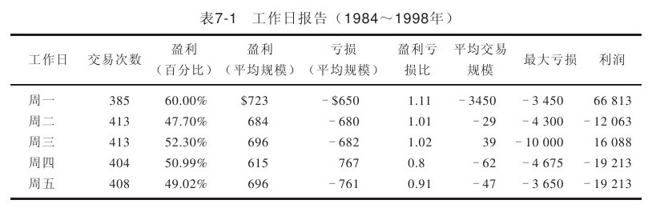
最后，如果价格形态是连续3日价格下滑，交易准确度升高至58%，交易笔数248笔，而每笔平均利润升到353美元。难道是这一形态里有什么门道吗？同样的策略，测试到现在触发了579笔交易，54%的交易正确率，单笔交易盈利179美元！
我们假定一个简单的形态，看看如果存在下列条件第二天会发生什么情况。首先，我们假定当天价格高于30日前的收盘价，这样我们处于上升趋势；其次，我们还想要价格有些下挫，所以当天的收盘价低于9天前的收盘价。假设这些条件都满足，我们就可以在第二天开盘建仓，并于第三天收盘时平仓。如果市场确实是随机的，52%的交易都应该是获利的（之所以不是50%是因为在研究的样本期间价格趋势总体是上涨的，最有力的证据是最初的研究显示，52%的时间价格每日收高）。
但实际情况却大相径庭。这一温和的小小形态共计产生354笔交易，57%的准确度，平均利润达到每笔421美元。准确度从52%升至57%，平均每笔利润增加了近4倍！先别急着扔帽子，后面还有更好的呢。
表7-1中对数据进行了扩充，显示了1984～1998年每个交易日的测试结果，总共321笔交易中63%获利，总盈利84 600美元。
为了给本书的新版增加一点震撼力，我用一模一样的测试条件，把从第1版成书到2011年5月的数据重新测试了一次（见表7-2）。
好好看看这个测试结果！周一和周三曾是最佳买入日，而周一再一次成为获利最多的最佳买入日。我很想知道关于这一点保罗·库特纳会如何作答？
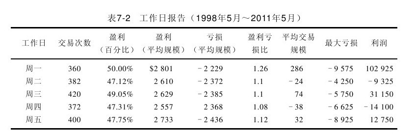
[我发现所有最好的形态共有的一个因素：利用代表市场极端情绪的形态可以在价格运行反方向中建立可靠的交易。]
换句话说，投资者在图表上“看到”的负面价格变化，对于短期市场波动来说常常是支持上涨的，反之亦然。收盘下跌的外包日线便是一个例子。当日最高价高于前一个交易日的最高价，而最低价则低于前一日的最低价，并且收盘价也低于前一交易日的最低价。这个价格变化看上去很糟，就像天要塌了一样。我阅读过的书籍也告诉我这是一个非常好的做空信号，如此大的价格波动恰恰是一个市场反转信号，预示价格向收盘方向移动，在这个例子中，价格将下跌。
这些书无论是谁写的，作者都没有花很多时间研究过价格走势图！图7-1的美元指数图显示，这是一个清晰的上涨态势或市场结构图。
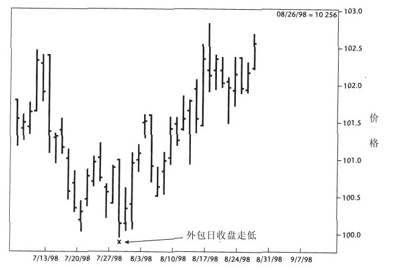
图 7-1 美元（日线图）
资料来源：Graphed by the“Navigator”，Genesis Financial Data Services：800-808-3282.
现实与猜测截然不同，用计算机快速计算得出的结果反映了我钟爱的一个短线形态的威力。现在可以毫不费力地证明这些形态行之有效，或检测其实际运行的情况。就说我们之前留意的外包日线形态，还有最后一个过滤器，或是一个事件，能加深对第二天形态影响的事件。这个事件就是第二天开盘价的方向，如图7-2所示。如果标准普尔500指数第二天的开盘价在低于外包日线的收盘价以下，我们收以盘价买进，我们发现发生该类事件的次数多达109次，准确度高达85%，获利52 062美元，平均每笔交易获利477美元。
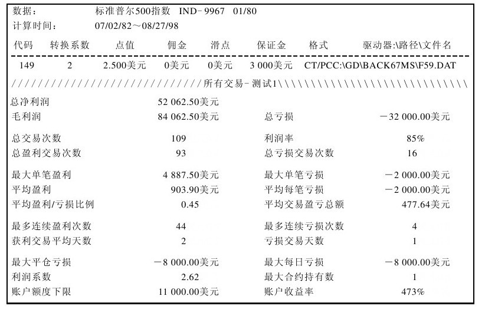
图 7-2 牛市形态
周四据我们所知会出现较大的抛售压力，甚至会波及周五，如果我们一周中除了周四每天都买进，我们挣得只略少一些，有50 037美元，但是我们的平均每笔交易利润升至555美元，准确度也提高到86%，最大回撤金额由8 000美元下降至6 000美元。测试的条件还是用2 000美元的止损点，或在第一获利开盘价格离场的交易规则（见图7-3）。
在债券市场，我们也可以采用相同的形态建立交易机会。这一形态非常有威力，在任何市场都可以单独使用，构建交易，但是“老千”拉里（Larry）还是倾向于有更多的信号以确认其交易机会是精益求精的。图7-4显示了在所有外包日收盘价低，紧跟第二天开盘价走低时买进债券的结果。要退出交易，我们要么承受大约1 500美元的亏损，要么在第一个获利开盘价退出市场。几乎没有交易者意识到这样一个机械交易方法如此之好，我们的准确度达到82%，每笔平均利润212美元，1990年以来出现过57次这样的形态。
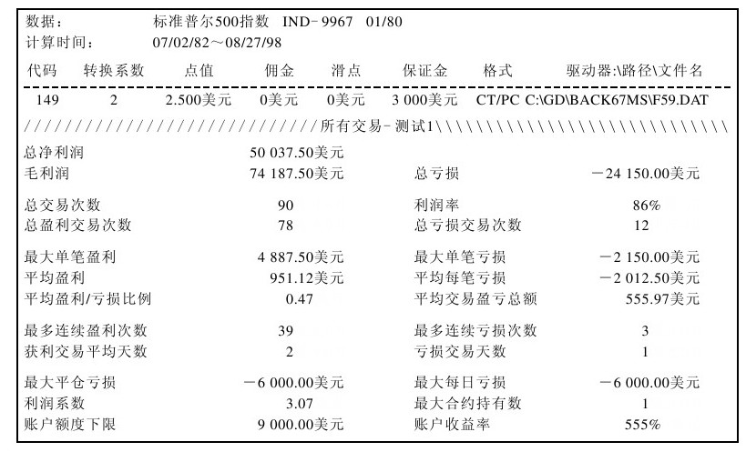
图 7-3 采用第一获利开盘价退出法则
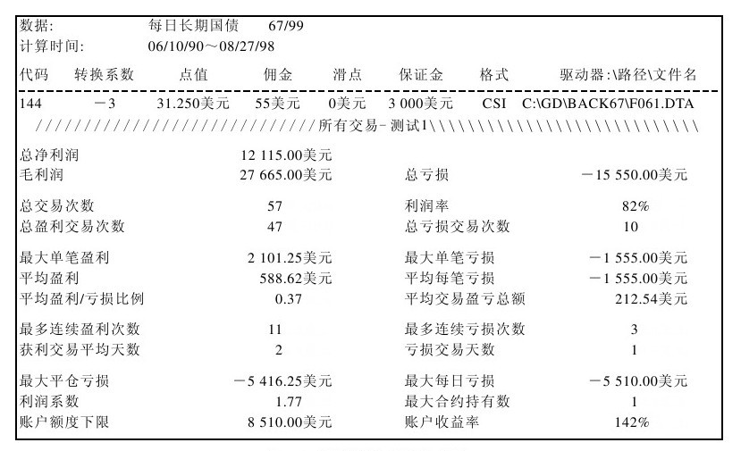
图 7-4 所有外包日低收盘价
我们能让这个形态的表现更佳吗？当然可以！知道怎么做吗？你现在应该，或是你也许已经开始考虑是否在一周中的一些交易日出现这样的形态，会比其他交易日出现这样的形态好。事实是肯定的。如果我们每天都做交易，只有在星期四的时候不做交易，结果与之前的标准普尔500指数一样，准确度达到90%，41笔交易的总获利达到17 245美元，平均每笔获利420美元（见图7-5）。伙计们，没有比这个结果更好的了。
图 7-5 每日（除星期四）交易
问题是外包日形态不像我们希望的那样经常出现。下一次，当大家发现一个外包日，其收盘价低于前一日时，不要害怕，准备买进。
现在我们再来看看标准普尔500指数中的另外一个看似牛市的价格形态。我们要找寻的时机是当天收盘价高于前一交易日的最高价，而且前两个交易日都是收盘价走高，当天已经是连续第三天走高（见图7-6）。这个看似很强的走势，大家都知道，它能引诱公众进场买入。
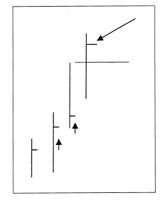
图 7-6 高于前日最高价的收盘
举个例子，在1986～1998年的标准普尔500价格中，检测这一形态，在星期二这种形态共出现过25次，为星期三卖出做好准备。这些交易中，19次获利，净利润达到21 487美元。在债券市场，同一形态在星期四出现28次，星期五卖出，获利13 303美元，准确度达到89%，这挑战了坚持随机漫步理论的教授们，足以引起他们深思。债券市场测试的样本选自1989年至1998年8月！国债期货的止损位设定在1 500美元，标准普尔500止损位设定在2 000美元。
在两个市场，我们都是用一条简单的退出技术，稍后告诉大家。还有几个重要的像这样的形态，在交易中我都采用。每天都要搜索，看看目前的形态能预测出什么。有几个股票价格形态，我采用了多年，但是我现在仍然寻找新的价格形态。
我在标普500指数期货电子盘迷你合约的交易上也测试了这个形态，数据采自1998年以后，我发现了类似的结果。即使在电子交易市场里，外包价格日还是上涨的形态。
[1] 该书中文版已由机械工业出版社出版。
7.2 质疑的问题
我知道形态是有用的。过去几年，我已经归总了成百上千条，建议大家从我在本书推荐的几条开始也进行分类总结。最好思考一下，为什么这些形态有用呢？它们代表什么呢？我能不能找到一条所有市场都通用的形态？每周交易日重要吗？这些问题都是关于股票方面的问题，但是在其背后，我要寻找的真相便是某种视觉形态，它在情绪上诱骗大众在错误的时间买入或卖出，而该时机对我而言却是正确的时机。了解反映在图表上的情绪是“读图”的关键。
“交易者里克”最近参加了一场研讨会，在我撰写本部分的时候，他给我发了一封电子邮件。下文是他的邮件正文，大家一起来阅读，从中了解大家要寻找什么，同时反思一下。
你想用另外一个故事来证明自己不是一个情绪交易者吗？这里有一个，挺有趣的。
上周末，我打算在77.80美元的价位上对五月铜设一个限价买入订单，这是星期一的第一件事情。五月铜一开盘，我就打电话给我的经纪人（很不幸我的经纪人直到早上8点才来上班）并询问：“今天早上铜价多少？”他回答：“我不跟踪铜，不太清楚，我要看看……”（唉，我不介意）。
“OK，”我说，“现在是多少了？”我得知已经从77.90美元跌到77.00美元，这告诉我，价格已经涨过了我的限价位，所以我认为还是等价格继续跌。
过了一会儿，我又打了个电话，价格到了77.30美元。我还是没采取任何行动。你一定问为什么？其实我也不知道，除了觉得还是要“关注市场”，看看我应该怎样做。有趣的是，我现在知道了如果价格过高，我会等其回落；如果价格太低，我会犹豫不敢买入。涨或跌都会让我踌躇，事情就是这样！也不知道我当时在看什么，是上帝的真迹吗？
那天稍晚时候，我打电话询问，此时铜价已升至80.30美元。“见鬼……好吧，买入一手。”现在我知道铜的确很热，可现在买入则违反了你周末教育我的一切要点。但是有某种神秘的力量，推动我进行交易。我在那天的高位买入不少，因为我很后悔没有早些买入。
第二天铜价开始回落，所幸最后还是走高了，但我还是为此付出了500美元的代价。白痴、白痴、白痴，我是不是还有什么没学到？是的，很简单的一点，计划好自己的交易，不要偏离计划，不要让情绪在错误的时间把自己推上悬崖。
里克的评论让我想起了钓鱼，我将鱼饵抛入水中，慢慢晃动，没有上钩，多晃动一些，还是没有上钩，突然一抽……我钓到一条大鱼。市场“钓”我们就像钓鱼，一点一点晃动，直到我们无法抵御，去咬钩。
问题是这不是简单地捕捉、放生，这是上钩、亏损，我再也不会犯“强迫性进食症”的毛病了。
下一次当贪婪的机会拍你的肩膀，或者你感觉到诱你上钩的情绪……千万别上钩！
7.3 攻击日形态
贪婪的歌声引诱着投资者亏损。只要我们发现是什么诱使他们上钩，使他们做出错误的判断，对他们不利的一面就恰恰有利于我们。而这正是我标记为攻击反转日的“事件”。正是在这些交易日，市场有所突破，无论上涨还是下跌，正是这些剧烈波动使得投资者在劫难逃。
有两个攻击日。第一个非常明显。“攻击日买入结构”是指某个交易日，收盘价低于前一交易日的最低价，对图表分析独具慧眼的乔·斯脱维尔（Joe Stowell）称之为“突出收盘价”。另外，这一天的收盘价还可以低于前3～8个交易日的最低价。对于图表分析师、公众或者职业技术分析师来说，这一形态看上去像是下降的突破，因此会出现非常多的卖单。
他们偶尔会正确，然而通常情况下，如果市场立刻反转，他们就犯了致命的错误。
“攻击日卖出结构”则截然相反（见图7-7）。这次要寻找的是一个交易日，其收盘价高于前一交易日的最高价，并且最有可能突破向上，收于价格波动的最高点。这正是晃动的诱饵，促使大家来不及看一眼就跳起来。图7-7展示了这种情况，这里向大家介绍了买入、卖出结构。
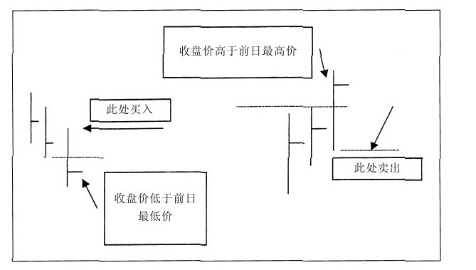
图 7-7 建立攻击日卖出交易
之前曾经说过，这偶尔会是有效突破。然而，如果第二个交易日价格向攻击日相反方向移动，并且价格高于低收的攻击日的最高价，大家可以视之为强烈的买入信号。同理，攻击日价格上扬，高位收盘价高于前一日的最高价，如果第二天价格低于攻击日的最低价，这是提醒我们做空的信号。
现象是第二天价格突然反转，投资者（低收盘价卖出者，高收盘价买入者）转为亏损；他们预见的突破没有出现！他们吞掉了钓钩，然而对于我们来说，价格对反转的反应是一个很好的入场时机。这就是形态，是基本原理，是行之有效的原因。当普遍认为“市场应该有所动作，而动作却未如期而至”的时候，我坚信正是强有力地证明我们应该进行交易，与新信息保持一致的时候。
我选取了几个这类形态的例子（见图7-8、图7-9）。我们先看看攻击日反转的其他类型，然后再向大家解释我是如何使用这一形态的。
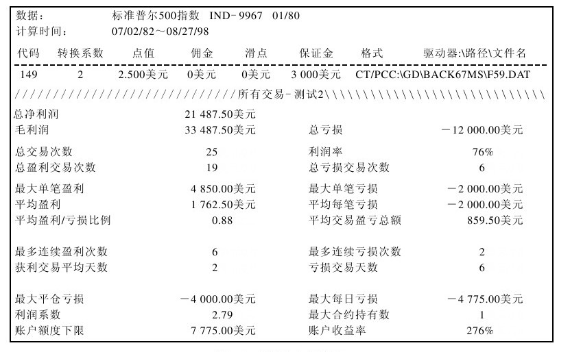
图 7-8 有效攻击日形态
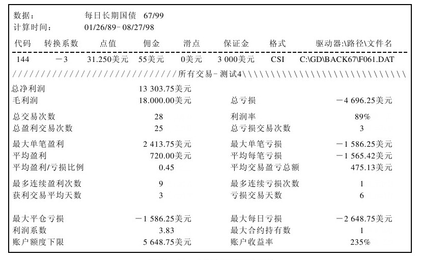
图 7-9 另一个攻击日形态举例
认出第二个攻击日反转（见图7-10）虽然有一点困难，但是原则都是一样的，价格不是沿着一天的走势运行的，在第二天会反转。在做买入准备前，大家要找到这样一个形态，即当日收盘上涨，不是突出低位收盘。本形态的关键或秘诀是当日收盘价位于上涨当日价格区间下方的25%以内，并且在最佳形态中，收盘价还应低于开盘价。我称其为“隐藏的攻击日”，因为其收盘价上涨。
在这样的形态中，价格要么开盘跳高，盘中走高，但是收盘价远远低于最高价；要么开盘微微走高，价格一直上扬，随后价格有所回落，与开盘持平。当然，收盘肯定是要上扬的，但是不会超过最高价。买入者在这两种形态中都被击败，图表分析师此时进场寻找猎物。
如果第二天价格大幅回升，价格超过攻击日的最高价，被猎杀的其实是这些图表分析师。我们再次看到的市场下跌的形态在第二天就会反转。如果背后一系列的工具，周交易日、每月交易日、市场关系、超买/超卖和趋势都显示本阶段为上涨格局，则这是一组最为牛市的事件、强烈的做多信号。
隐藏攻击日做空正好相反。找到收盘下跌形态，下跌程度位于日价区间上方25%以内，并且收盘价高于开盘价。进场时机是在价格下跌，低于隐藏攻击日的最低价，且第二天价格涨不上去的时候。图7-11反映了这一形态。
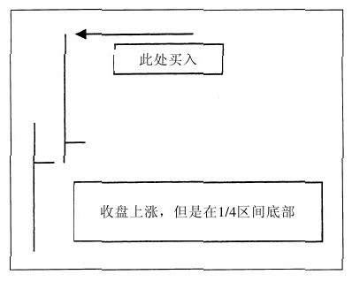
图 7-10 隐藏攻击日买入
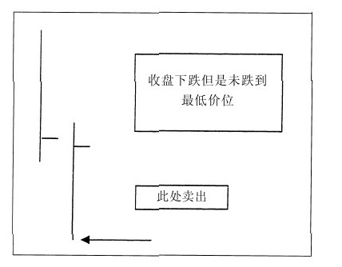
图 7-11 隐藏攻击日卖出
7.4 如何使用攻击日形态
使用这些形态有两种方法。首先让我们看一下市场突然上升或下降的形态，在这样的趋势中，大家都希望自己已经入市或继续增仓。在如此凌厉的上涨趋势中，无论攻击日是否是隐藏的，大家都应该做好在第二天买入的准备，这是一个非常精准的证据，趋势不会改变，交易者准备新一轮出击，追逐太阳。
在下降趋势中，反转情况将制造绝好的退场时机信号。大家要寻找的不是一个突出的收盘价上升日，就是一个下跌的交易日，这一天的收盘价处于价格区域高位。如果第二天价格下滑，击穿前一日最低点，就是做空的时机了。这些例子足以帮助大家更好地了解这一技术的重要性。
利用攻击日技术的另外一个好办法是找寻一个市场，该市场一直在大幅区间内波动。一旦价格穿越了攻击日高位或低位，我会立刻注意到这个攻击日，并采取相应行动。我认为如果攻击日随后反转，市场则很有可能突破现在的趋势。这意味着市场会波动至很多止损单停留的价位，选中那些在突破点位下了单的“突破宝贝儿”。突破就像磁铁一样吸引大家采取行动，让他们下单，而第二天的价格反转会干掉他们。他们不愿相信自己的“运气”会这么差，决定无视价格反转继续持仓。几天后，他们被迫平仓，加剧价格波动，而我们坐享其成，这完全要感谢攻击日形态。
孔子一定是个图表分析师，他说过百闻不如一见。我在图7-12～图7-17中，标出了攻击日的例子，大家可以学习一下。
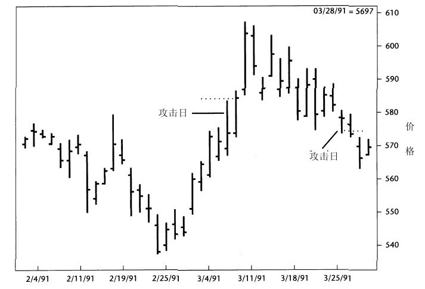
图 7-12 Comex银价（日线图）
资料来源：Graphed by the“Navigator”，Genesis Financial Data Services：800-808-3282.
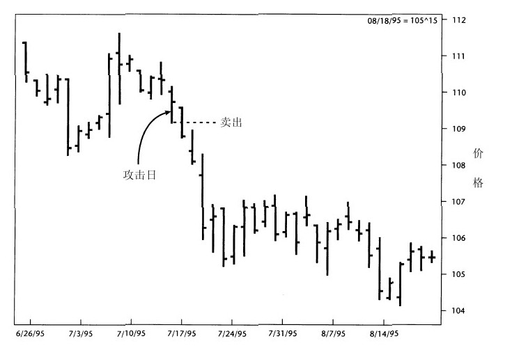
图 7-13 每日长期国债（日线图）
资料来源：Graphed by the“Navigator”，Genesis Financial Data Services：800-808-3282.
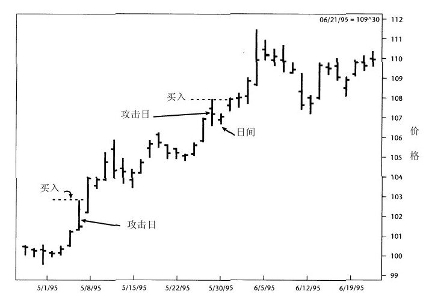
图 7-14 每日长期国债（日线图）
资料来源：Graphed by the“Navigator”，Genesis Financial Data Services：800-808-3282.
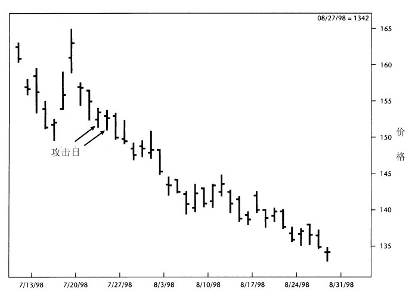
图 7-15 豆粕（日线图）
资料来源：Graphed by the“Navigator”，Genesis Financial Data Services：800-808-3282.
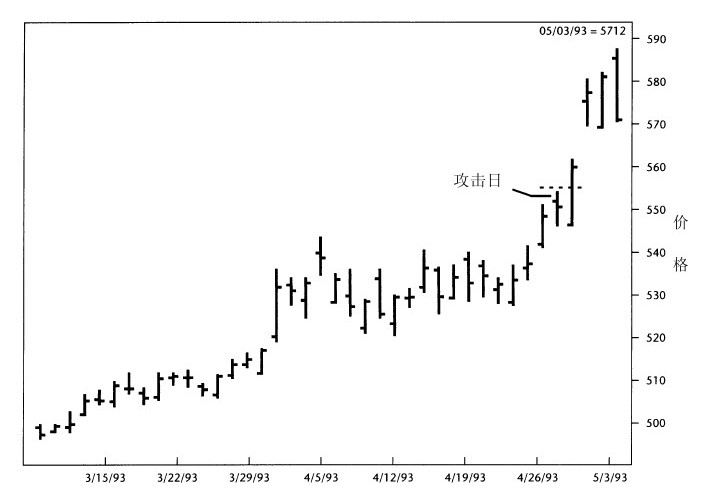
图 7-16 Comex银价（日线图）
资料来源：Graphed by the“Navigator”，Genesis Financial Data Services：800-808-3282.
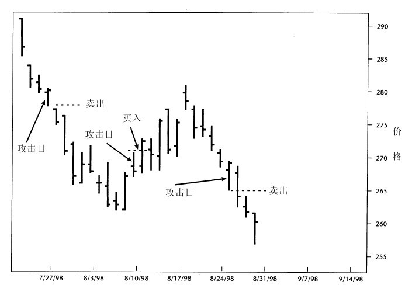
图 7-17 CBT小麦（日线图）
资料来源：Graphed by the“Navigator”，Genesis Financial Data Services：800-808-3282.
这些价格形态依旧是我最钟爱的决定入场的交通工具，20世纪60年代当我还是一个孩子时就用它们交易，到了2011年，这些工具依旧有效，好好珍藏它们，它们会是你的朋友。
7.5 做市商陷阱
还有一种使用攻击日形态的方法。这一概念来自理查德·莱考夫，他在20世纪30年代撰写过股票教育方面的课程。莱考夫的著作吸引着我，1966～1967年，我在加利福尼亚的卡美尔（Carmel）图书馆工作，莱考夫撰写的资料，很多都在其晚年捐献给了这家图书馆。命运就是这样，一天中午，我在午餐的时候偶然阅读了该捐赠品，结果，我第二年的午餐时间全部花在了这些书上。
莱考夫的观点是，市场是被“操纵”的，可能不是你所想象的某个“操纵者”在控制，更多的是被集体意识控制着，是巨大的、变形的“他们”。莱考夫说这群“他们”控制着市场，吸引公众在错误的时机进场游戏。纽约证券交易所的做市商们掌管着股票交易簿，经常被指责操纵价格，诱骗公众投资者，这也是这一节要取名“做市商陷阱”的原因，但是我不认为他们操纵了市场，这么取名只是为了从娱乐的角度理解价格波动。我认识的做市商，如比尔·亚伯汉姆（Bill Abhrams）是我交了15年的朋友，他有力地证明了他们并未操纵价格。
“卖出陷阱”是一个不错的上升趋势市场，在窄幅箱体或通道中运行10～15天，随后突破上升通道，突出收高于所有的价格区间。突破日的最低价则成为关键点。如果价格在1～3天后向下突破了最低价，很有可能向上突破是个假象，而投资者要为这买单了。他们由于冲动地买入被套住了。此时，股票经纪商或商品经纪商很有可能趁机脱手，将大量仓位转移给散户。
做市商的“买入陷阱”正好相反。寻找处于下降趋势的市场，在窄幅通道盘整10～15天，随后突破进而下跌，出现一个比价格区间的最低价还低的突出收盘价。理论上，大家会认为这会带动价格走得更低。实际情况也的确如此。然而，如果此时出现一个反转，抬升价格，高于突破日的最高价的话，市场很有可能会出现反转。所有低于市价的卖盘止损全部触发；投资者开始崩溃，并害怕买入这一趋势反转。
我给大家展示几个实例（见图7-18～图7-25），最后一张图是埃克森股票的走势图。
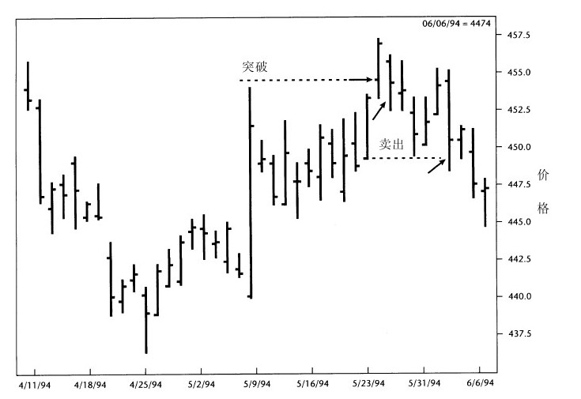
图 7-18 Comex黄金（日线图）
资料来源：Graphed by the“Navigator”，Genesis Financial Data Services：800-808-3282.
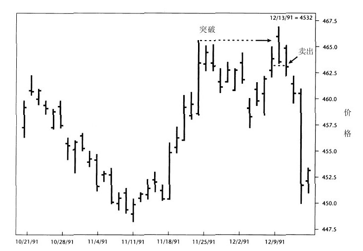
图 7-19 Comex黄金（日线图）
资料来源：Graphed by the“Navigator”，Genesis Financial Data Services：800-808-3282.
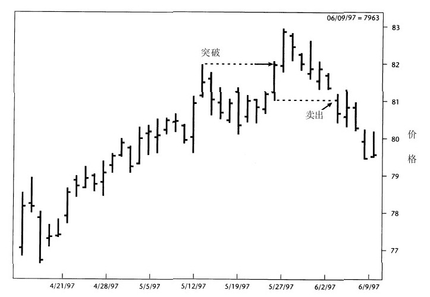
图 7-20 种牛（日线图）
资料来源：Graphed by the“Navigator”，Genesis Financial Data Services：800-808-3282.
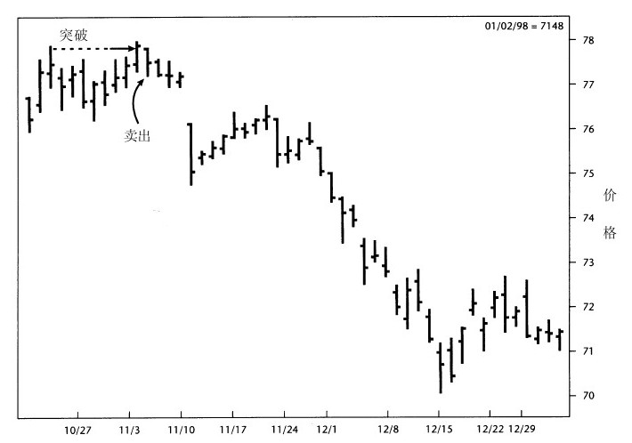
图 7-21 2号棉花1（日线图）
资料来源：Graphed by the“Navigator”，Genesis Financial Data Services：800-808-3282.
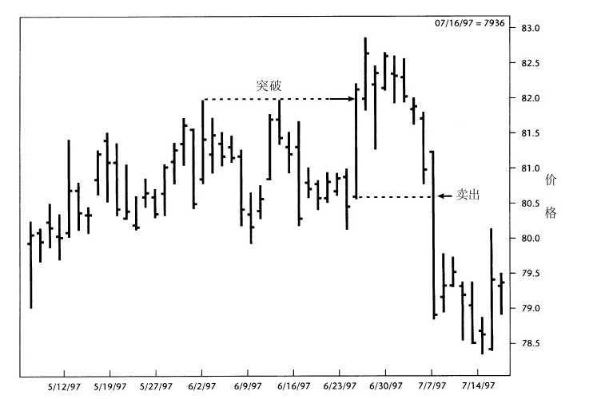
图 7-22 2号棉花2（日线图）
资料来源：Graphed by the“Navigator”，Genesis Financial Data Services：800-808-3282.
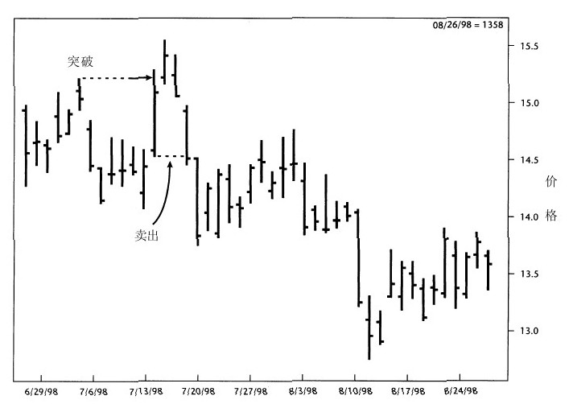
图 7-23 纽约电力（日线图）
资料来源：Graphed by the“Navigator”，Genesis Financial Data Services：800-808-3282.
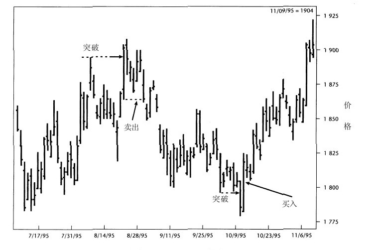
图 7-24 可可（日线图）
资料来源：Graphed by the“Navigator”，Genesis Financial Data Services：800-808-3282.
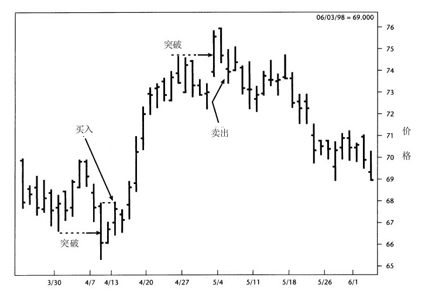
图 7-25 埃克森（日线图）
资料来源：Graphed by the“Navigator”，Genesis Financial Data Services：800-808-3282.
7.6 一个重要的记录：在更短的时间周期内也行之有效
多年来，我目睹了许多在市场走势图中的5分钟、30分钟、小时图上采用攻击日及陷阱形态进行的成功交易。像你这样的短线交易者会想着将这添加到自己的技术中，武装自己。这些形态呈现了极好的短线交易者的入场时机。关键在于，大家还要有其他的信号来支持交易，需要一些对你行将交易有建议性的东西，否则就只是用价格预测价格了。最好的交易肯定不是单靠价格结构分析，而是要有几个限定信号同时存在才行。
7.7 哎呀！这不是个错误
如果我马上要揭示的形态有错误的话，我的错误就在于把它公之于众。这个形态是我迄今为止研究并用于交易的最为可靠的短线形态。无数作者和系统开发商将这一形态融入其著作中。还有一些人（比如天才的林达·卜来德芙；批评家布卢斯·比库克；杰克·伯恩斯坦）都给了我很高的评价，使我深感荣幸。当然也有很多人不但不承认，甚至还说我在1978年教授给我的追随者的这个形态是他们创造的。
该形态基于过度的情绪反应，随后出现价格过度反应的快速反转。这个过度反应造成前一日收盘价与后一日开盘价之间存在一个极大的缺口。如果这样的过度反应发生在开盘价低于前一日最低价的时候，那么就为我们提示了买入信号。如此罕见的现象表明，市场很可能反转。造成这种情况的原因是，市场中出现疯狂卖压，大家在开盘时恐慌性抛售，从而导致当天开盘价低于前一日的最低价。这种情况非常特殊，因为开盘价一般都落在前一日的价格区间。
我们的做法是，低开之后入场，价格上扬至前一日的最低价。如果市场可以汇聚力量达到这一价位，抛售压力很有可能得到缓解，市场大幅上扬随后即至。
你或许在思考，卖出时机正好相反。你会寻找开盘价高于前一日的最高价的交易日。大家的情绪或筹划在开盘时汇聚了大量的买单，因而造成一个跳空高开，形成巨大缺口，促动价格涨过前一日的最高价。我们在价格回落到前一日的最高价时入场，表明缺口可以被封闭，这是强烈的卖出信号，预示价格可能会下跌。
本节的题目“哎呀”正是反映了公众因为消息、图表等信息，而在开盘时纷纷做空导致价格下跌。这些人暂时看似决策明智；然而当价格回涨至前一日最低价，经纪人告诉他们价格向反方向运行时，通常大家会说“哎呀，我们可能（又）犯错了，价格反弹力度很大。你还要继续做空吗？”
在这儿我把上一版中交易策略的结果写出来。我肯定忘不了“哎呀”系统，估计我从这个交易系统上赚到了100万美元以上，但不幸的是，这个系统如今已经失效了。原因很简单：我们再没有公开喊单的交易时段了。市场过去通常有16～18个小时是不交易的，让订单和情绪堆积起来，造成买入或卖出订单的风暴，推动市场在早上跳空高开或是低开。现在的电子盘交易市场，从收盘到下一个开盘间就那么几个小时甚至就几分钟，因而我们也就失去了作为交易优势的堆积订单“排出”效应。记住这一点，下面的内容还是很值得一读的。
就在大众下定决心退出亏损交易的时候，价格已经上涨超过前一日的最低价，当他们回补或反手做多时将给市场带来进一步飙升的动能，也让我们当时所建立的买进仓位随之趋长。图7-26和图7-27说明了“哎呀”信号是如何出现的。
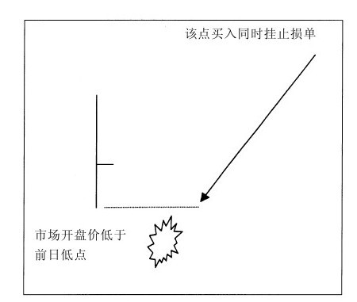
图 7-26 “哎呀”买入信号
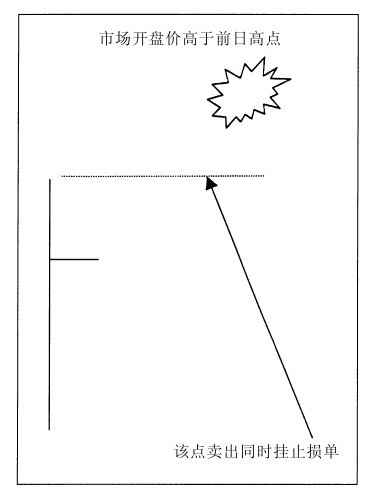
图 7-27 “哎呀”卖出信号
好，现在来看看我们可以如何使用这一形态。我们已经知道行情很可能在星期三与星期四下跌，我们可以注意一周内其他交易日标准普尔500的买入信号（见图7-28）。结果说明了一切：应用这种形态，我们获得了超过82%的准确率，净利润42 687美元，每笔交易平均利润435美元。鉴于这只是1.5天的交易，结果是相当好的。我们当天买入，第二天开盘时卖出。止损位设在2 000美元。大家可以参阅止损与退出（第11章），以加深这里提出的概念。
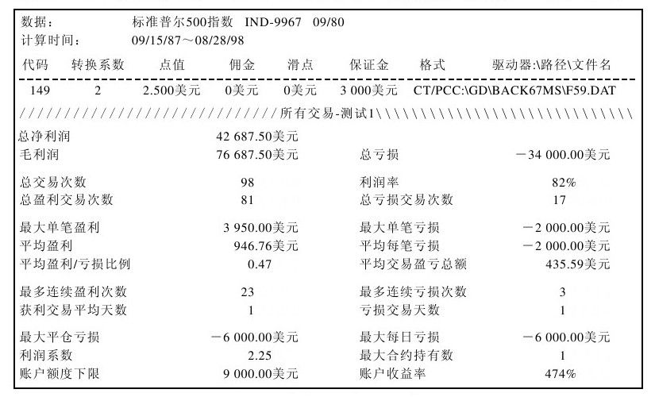
图 7-28 有效的“哎呀”形态
债券市场怎么样呢？我在一周除星期三外的任意一个交易日做多债券，止损位设在入场价格下1 800美元。我们运用的退出技巧马上就会讲到。图7-29显示：准确率达到86%，利润27 875美元，每笔平均利润在扣除50美元的佣金后达到201美元，这一结果彻底击败学院派的随机漫步理论，让他们走出象牙塔。
图 7-29 债券交易中运用“哎呀”
在卖出方向，假如星期三出现“哎呀”形态，也就是开盘出现跳空缺口并且是假突破时我们就卖出。从1990年起，应用四日退出机制，我们共有交易55笔，获利31笔，净利润为9 875美元，止损位接近1 000美元。在标准普尔指数中，最佳卖出日为星期四，这一天总共获利60笔，净利润14 200美元。大家只要查看交易记录（见图7-30和图7-31），就会坚信这一技术的价值。
这种技术只有结合智慧与市场交易策划而不是机械运用时才能创造最大价值。图7-32显示的是应用“哎呀”形态买入信号进场，在一周任何一个交易日除去星期四外（如果星期五的9日移动平均线低于星期四）的交易结果。出场选择在交易后三天第一个获利开盘时：81%的交易都赚了钱，净利润24 625美元，平均每笔获利373美元。如果做空，交易步骤是这样的：如果星期二的9日移动平均线高于星期一，这意味着一个超买市场，则在星期三得到“哎呀”卖出信号时卖出，止损及出场点的设立与做多时一样。交易的准确率达到79%，净利润13 406美元，平均每笔获利是令人惊喜的394美元，对于短线交易非常不错了（见图7-33）。
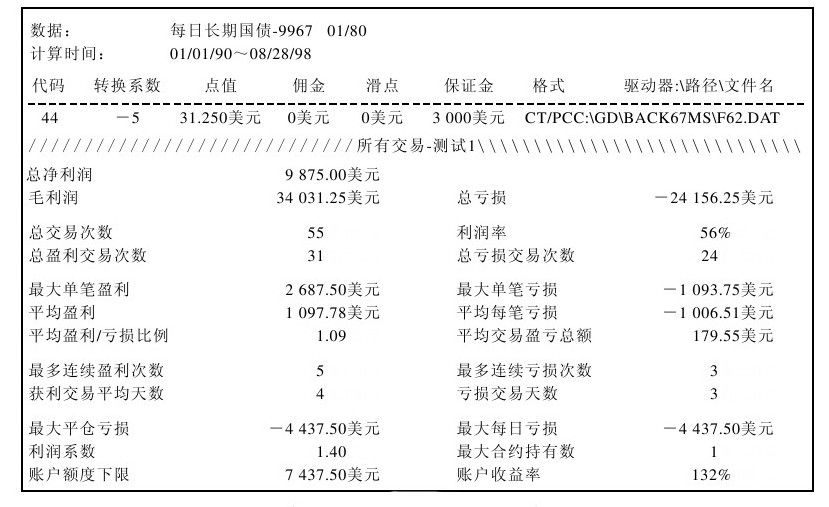
图 7-30 “哎呀”技术交易结果
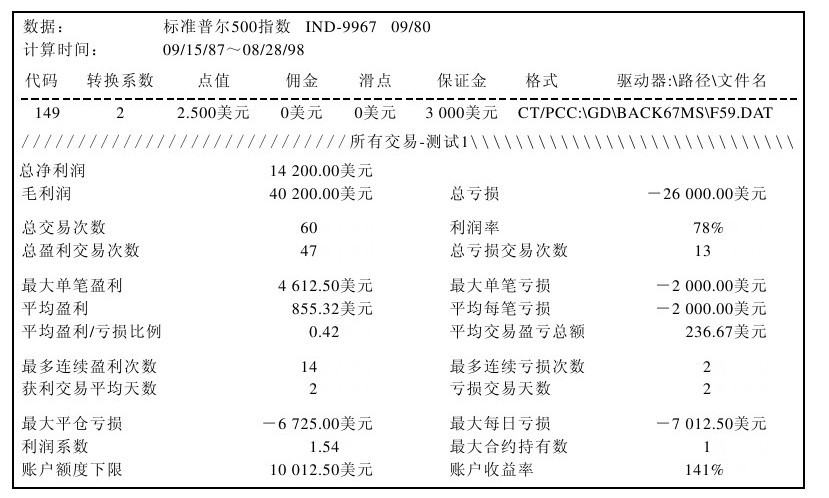
图 7-31 关于“哎呀”技术的更多结果
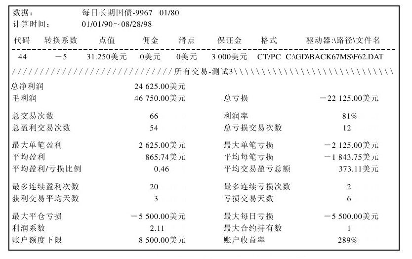
图 7-32 运用“哎呀”技术每天买入（星期四除外）
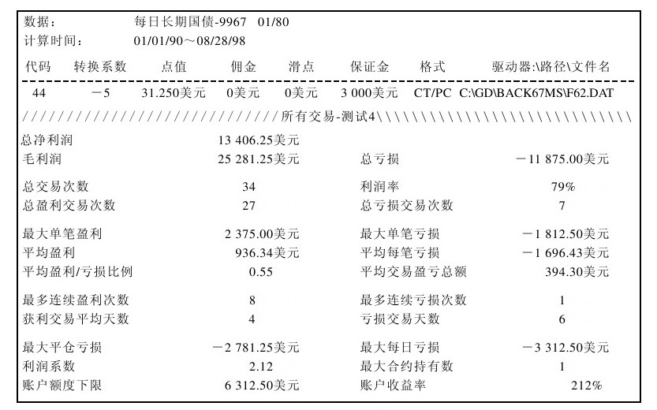
图 7-33 星期三的“哎呀”卖出
7.8 标准普尔的“哎呀”交易
相同的策略在交易标准普尔指数时同样获得了成功；在9日走势基础上建立超卖标准的最好的买入日是星期二、星期三和星期五。这些相结合的交易获得81%的准确率，净利润22 362美元，每笔交易平均利润456美元，对于一日交易，这是一个相当出色的结果（见图7-34）。应用9日移动平均线建立交易基础的概念来自于乔·库辛格（Joe Krutsinger）的工作，他是我的前辈，热衷于系统开发。
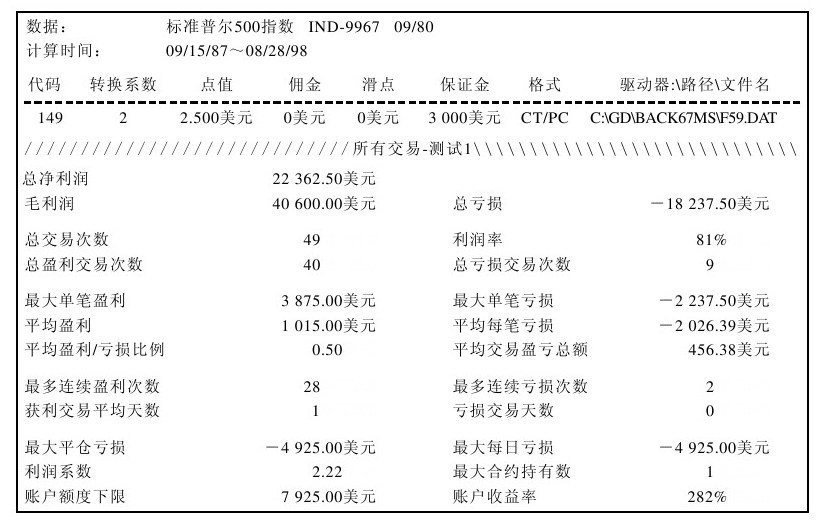
图 7-34 在星期二、星期三、星期五下降趋势中进行“哎呀”形态买入
在这个市场中，使用9日超买技术最好的卖出交易时机是在星期三抛空，获利18 962美元，35笔交易的利润率高达89%（见图7-35）。每笔交易平均利润486美元，足以让人相信这一方法的有效性。
现在，我们看看使用“哎呀”技术交易标准普尔500的另外一个方式。多年来，大家都注意到股票价格一般在月初会上涨。这为建立“哎呀”交易制造了机会。如果这一形态在月底及该月的第17个交易日出现，我们的形态与每月周期影响因素重合，就会得到很好的获利机会。
了解到月末价格上涨会延续到下个月的月初，我在债券市场上也尝试应用“哎呀”技术，交易时段为一个月的第一至第五个交易日。交易结果同样让人印象深刻。将每月交易日与“哎呀”技术相结合是最强大的短线交易操作，而且每月都可以重复这些操作。
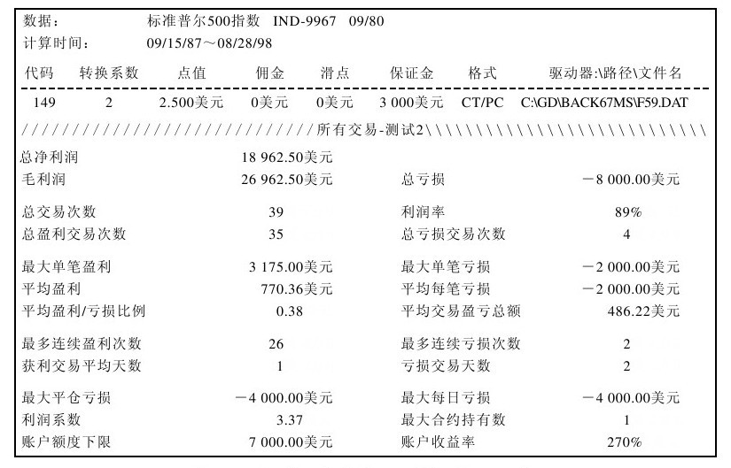
图 7-35 当月第17个交易日以后的“哎呀”形态
一些观察家认为我们只是在有限的机会窗口中使用“哎呀”信号强行嵌入趋势线。说的也对，让我赶紧解释一下，我第一次意识到这一个“机会窗口”是在1962年，那时我拜读了梅里尔（Merrill）的经典著作《华尔街价格行为》。我相信这位面目慈祥、满头白发的老爷爷是第一个注意到这一价格上涨格局时点，并在其著作中进行详细解释的人。
我所做的工作就是在这个市场偏差现象中添加了我的“哎呀”进场时机以及合理的止损位和退出时机。据我所知，1988年在我将这一理念传授给我的学生之前，没有人注意到这样的形态或趋势；这再一次说明，我们获得了很多意外的经验，所以我们并不承诺这是一个结论性的论断。梅林，还有其他人，比如诺姆·福斯拜克（Norm Fosback）和格兰·帕克（Glen Parker），都曾说过月末股票价格上涨是由于共同基金的经理们调仓，粉饰其持仓的结果。当我发现债券价格此时也上涨时，我相信股票价格上涨不是因为基金而是由于债券。债券涨，股票跟涨。永远记住，债券（利率）是摇晃尾巴的狗，尾巴就是股票市场。
实际上，大家如果对未来看涨或市场有偏离的时候，值得试试“哎呀”买入技巧；如果对未来看跌，就值得去试试“哎呀”卖出技巧。只要有合适的基础，这一形态就可以创造奇迹。这是我发现的最好的形态；尽情享用，仔细对待，明智地运用这一形态。
要点重述
到现在你应该明白为什么那么多人每天看图表了，图表的确是有帮助的。但是，多数交易者对那些导致市场反转或是发出买卖信号的形态还不熟悉。你现在应该了解我使用的形态了。
第8章 识别买方和卖方
如果每一个卖家都会遇到一个买家，价格怎么可能上涨或下跌？
到底先有鸡还是先有蛋，先有买家还是先有卖家？我想每一个投机者尝到甜头之前都应该先参透这一富有禅意的问题。表面上看，如果卖家必须将股票或合约卖给买家，价格就永远不应该变化太大。它们难道不应该彼此平衡吗？
在完美的世界中，情况是这样的，然而我们生活在一个不完美的世界中，而且在玩一个更加不完美的游戏。现实中，正如你在日报上看到的或是经纪商转述的，价格确实在变动，有时候变动还很疯狂。价格变动的原因并不是买卖的股票或合约的数量；归根结底，它们是相互匹配并会最终成交的。价格波动的原因是买卖中的一方忽视了另一方的存在。
换言之，这个等式中的一方企图通过买高或卖低而从中获益。造成价格变动的不平衡因素不是交易量而是紧迫性……想要或急着想要的一方会把价格推高或压低。
正如前面提到的，我们可以将某天的买入量和卖出量用开盘价区分开。本章描述的交易系统和方法的要素使我在1987年盈利超过1 000 000美元。
考虑这一点：每日商品期货交易开盘价是由前一天买卖双方订单公开竞价形成的。
1998年3月27日，5月猪腩期货开盘价是46.20点，当日最低45.95点，最高48.60点。买方可以将价格推高至开盘价以上2.40点，也可以打压至开盘价以下0.25点。这里有两种价格振荡，上摆至2.40点，下摆至0.25点。当日收盘价48.32点，高于前日收盘价46.40点。
图8-1显示的是1990年3月的大豆价格的日线图。图中标出了最大振荡幅度，因此你可以直观地看出每天市场交易的真实情况。每天，你会看到一个买进振荡和一个卖出振荡。收盘价加/减开盘价告诉我们哪一方获胜。在这种情况下，开盘后空方占据优势并一度将价格打压至开盘价下0.25点，收盘价则回升至开盘价以上。如果前日以上涨收盘，而次日价格低于开盘价0.25点，市场将会出现新一批卖方。因为今天比前一天有更多的卖方进场，这将会是一个卖出的信号。
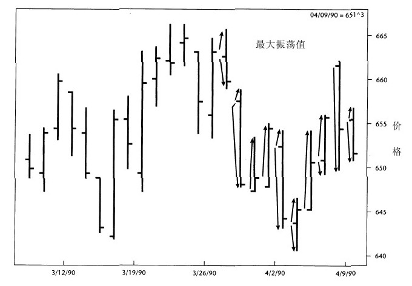
图 8-1 大豆期货日线图
资料来源：Graphed by the“Navigator”，Genesis Financial Data Services：800-808-3282.
我们可以更进一步。叠加过去几天所有开盘价到最低价的振幅，我们可以得到卖出振荡的平均值，如果今日开盘后的所有振荡超过这一平均值，我们可以认为是一个卖出信号。
不过，请等一下，还有一些复杂的地方。如果真的想掌握这些卖家动态，你需要确认那些收阳线的交易日，因为只有在价格收阳的时候采用这种方法，才能真正理解这些卖出点，因为这里的振荡值是在不会触发价格收阴的前提下的价格幅度。
同理，如果你要（在收盘价下跌日）加上每日开盘价与最高价之间的振荡值，那你计算所得的价位就是在不引发市场转势的前提下可能会上升到的价格。
8.1 最大振荡值
最大震荡值的应用很大程度上已经被电子交易消灭掉了。正如前文讨论的，从前一日收盘到本日开盘，我们已经看不到价格跳空的缺口了，因而我在20世纪90年代晚期用来度量波动率的尺度之一，即从开盘价到最高价的价格摆动值不复存在了。
而且正变得更糟，当初我可是在次日的开盘价上加上这个指标的。但因为如今次日的开盘价基本上就是今天的收盘价，周日晚盘除外，我们的参照点移动了。过去有用的东西现在没用了。
也许你还可以用其他方式表达这个意思，用你最愿意认为的方式。就让我把方法“晒一晒”，让你们看看我是怎么让最大震荡值概念起死回生的。我曾经尝试使用前一交易日的最高价、最低价和收盘价作为参照点，往上面加变动值。我从参照点出发测试了各式各样的不同数值。我试过在开盘价、收盘价以及前一日的收盘价上加上过去X天的平均真实价格波动值。各式各样的参照点与不同的波动率因子都被测试过了。
尽管做了这么庞杂的研究，但我依旧没办法得出任何有价值的可以开发成真实的交易系统的东西。唯一持续一致令我欣喜的事情就是周交易日（TWD）的数据依旧那么突出。周五依旧是债市最好的交易日，周二依旧是股市最好的交易日……这些洞察依旧没变。月交易日（TDM）的概念也还奏效。
但随着电子交易的发展，现在很难确立是哪个点触发交易者相信市场可能上涨从而一拥而上的。我希望我能不这么写，但交易的世界就是由事实组成的，而这就是事实。
市场变化了。我们也必须改变自己适应市场，因为市场肯定是不会来适应我们习惯的做事方式的。当曾经有效的方法不再有效的时候，在错误的方向上继续是愚蠢的。
因此，尽管这里写的大部分内容过去还算有意思，但现在我们得着眼新方法来利用价格摆动又或者波动率来帮助短线交易者。
“最大振荡值”（GSV）可以应用在很多可能产生获利的交易上。你研究这个概念越多，就越会欣赏在下跌交易日中寻找上升振荡以及在上升交易日中寻找下跌振荡这一逻辑。我把这些振荡归类为“失败的振荡”：市场可能出现那样剧烈的振荡，但却无法坚持到底，反而会在相反的方向收盘。
让我们看看用这些振荡值能做什么。你可以确定过去几天的平均失败交易振荡，用它们加或减当日开盘价，从而得出你应该进场的价格；或者可以统计若干天的所有失败振荡的平均值并加上其中一两个标准差，得出你的进场点。
我会先将这个简单且能盈利的方法用在债券市场的交易中。第一步是找一个合适的交易起点，因为我不想只应用一种技术手段来交易。我会在超卖市场开始：价格已经下跌了一定程度，将来会有某种程度的反弹，而且我会将前面提到的，我最喜爱的“每日交易”与“失败振荡”结合在一起应用。
在这种情况下，根据阴阳转化理论，第一步是要求当日的收盘价低于前5日的收盘价。我也要求自己将一周中买进的天数限制为三天中的一天，也就是星期二、星期三或星期五。
一旦开始，我可以得到前四天中每天开盘价和最高价的差额，将差额相加再除以4从而得到平均“买入振荡”值。我需要真正确认市场已经步入新的价格轨迹，然后在价位高于开盘价加上4日平均振荡值的1.8倍时买入。
获得卖出的信号则正好相反，我得到前4天开盘价和当日最低价的差额，将差额相加再除以4从而得到平均“卖出振荡”值。同样，将这个值乘以1.8，再用开盘价减去这个值，即得到卖出点。
国债市场的卖出时机是当日收盘价高于6日前价格，而为了获得更好的交易成绩，我甚至希望看到当日黄金收盘价低于20日前价格。
无论做多还是做空，止损金额都是1 600美元。我会在市场中停留两天后，在第一个获利开盘价出现时获利离场。图8-2显示了1990～1998年间，应用这一交易策略的成绩。正如你所见，数据很明确地告诉了我们，策略的设计与最大振荡值概念的结合是何等重要。坦白地说，我不知道所有可供销售的、以技术分析为卖点的债券交易系统中，有哪一个可以与之相媲美。
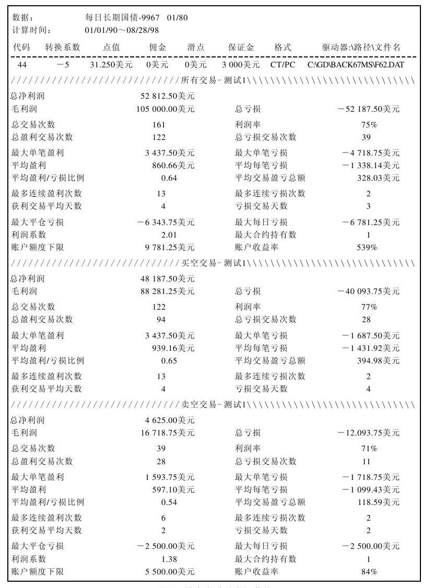
图 8-2 债券交易最大振荡值
8.2 应用最大振荡值进行股票指数交易
相同的基本公式也适用于标准普尔500指数的交易中。同样，我们会应用4日平均买入振荡值（最高价减去开盘价）的180%作为买入信号；4日平均卖出振荡值（开盘价减去最低价）的180%作为卖出信号。你也许会考虑，当债券市场当日收盘高于15日前价格时买入且在低于15日前价格时卖出，交易结果会有明显的改进。基本面确实会造成一些差异；不要听信任何神经兮兮的图形分析员或是语速很快的技术分析师蛊惑你说没有区别之类的话。我们每日过滤交易的方法是在每星期一、星期二或星期三买进，在除星期一外的任何一天卖出。策略的设计仍然是在当日收盘低于6日前价格时买进，高于6日前价格时卖出，因为我们已经感觉到市场过度膨胀的迹象。
结果说明了一切：一律采用2 500美元的止损点和出场点的交易结果是，总盈利105 675美元，交易成功率67%（见图8-3）。做空并没赚很多钱，好歹赚了点；考虑到交易期间处于强劲的牛市行情，成绩还是不错的，单笔交易平均利润472美元。
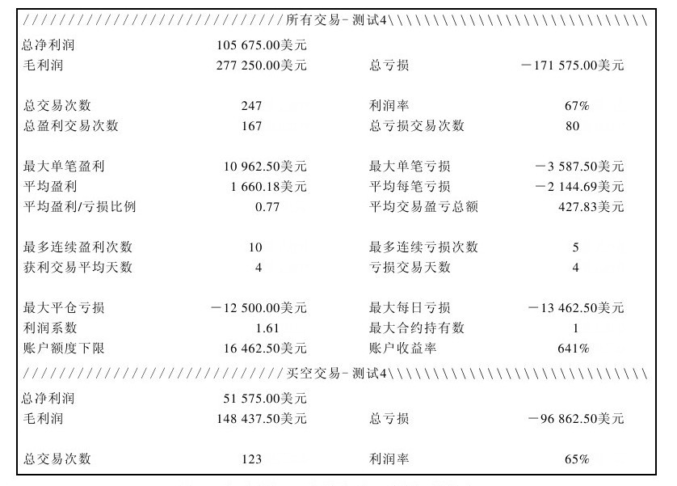
图 8-3 标准普尔500指数交易，最大振荡值为0.8
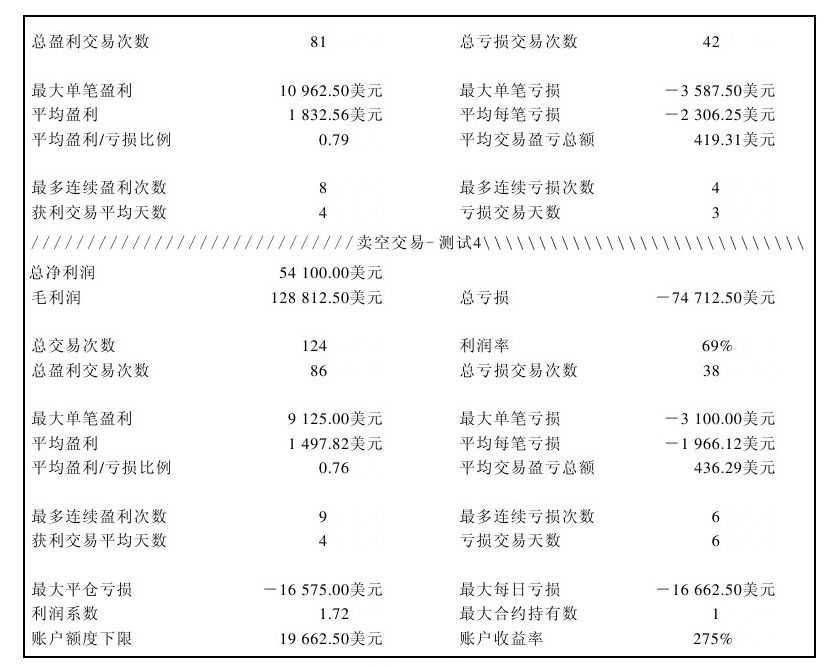
图 8-3 （续）
8.2.1 比看起来还好
以上的结果也许仍能比看上去的好很多。因为我的电脑软件不允许在进场当天像实盘交易那样采取保护性止损措施，而且我们在实盘交易的时候设置的止损价比起软件设定的更接近市场实际情况。在实盘交易时，一旦决定做多或做空，我设定的止损价会稍高或低于开盘价。
如果大盘振荡至可能触发卖出信号的价格，又回落到初始价位，我们所遵循的交易策略就值得商榷，虽然有大盘上扬的要素，但恐怕不会持久。如果没有设置止损点，你就会在一天中的低点出场，那意味着失败，然而这样的损失仍然要比电脑软件计算出来的少。
8.2.2 这一概念的更多应用
这一方法也能帮助我摆脱面临的困惑。当我处在某个仓位寻找出场的时机或是想建仓却找不到合适的入场点时，我会应用最大振荡值来确定当前的买入或卖出的巨量行情会在什么时候逆转。所有我需要做的只是计算买入或卖出的振荡值，将其平均价格作为出场或进场点。
日间交易员在应用这一方法的时候可能会略有不同。他们中许多人（不包括我）的操作手法是在超买区卖出，超卖区买进。在这种情况下，最大振荡值可以告诉你在价格高于开盘价多少的时候可以卖出，过去几天的最大失败值是多少，然后你就可以制定止损点并在略高于这个值的价位反向买进。你也可以在开盘价减去最大振荡值的价位买进，而将止损点设得更低。
这里有一个例子。表8-1显示的是1998年3月标准普尔500指数每日表现以及卖出振荡值。用3月16日的4日平均值乘以1.8，我们得到了比17日开盘价低5.50点的成交点：1 085.75点。表8-1显示了具体情况。
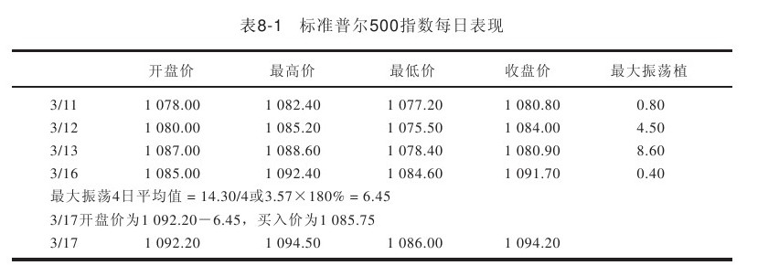
如果做多，你的出场点应该是4日平均振荡值3.57的2.25倍或者8.00点——对于开盘价1 092.20止损点为1 084.20。
你可以用最大振荡值来确定市场的支撑和阻力区间。我的实践经验显示，逆势振荡价格的1.8倍加上2.25倍的止损点是行之有效的策略。
应用这一理念的另外一个交易获利方法是等到标准普尔500指数星期五下跌收盘。在星期一开盘价加上星期五最高价与开盘价振荡值的价位买进。同时，星期五债券收盘价需高于15日前收盘价。以下结果显示了简单地应用斩仓出局并制定2 500美元的止损点的交易情况。依实际情况说，除非振荡值非常大，我会在开盘价减去振荡值的价位离场，在那种情况下，如果交易价格低于前一日做多价格的最低价，我就认输。此处的交易区间是1982年到1998年3月。这是我所知道的最成功的日间交易的机械化交易技术。
这种技术不需要报价机、任何软件或是与经纪商不间断的电话联络。一旦条件成立（债券价格高于15日前，星期五收盘下跌），你就在次日以开盘价加星期五买入振荡值的价位买进。显然，这不需要很高的技巧，只需要耐心地等待交易机会，以及勇于进场冒险的魄力（见图8-4）。
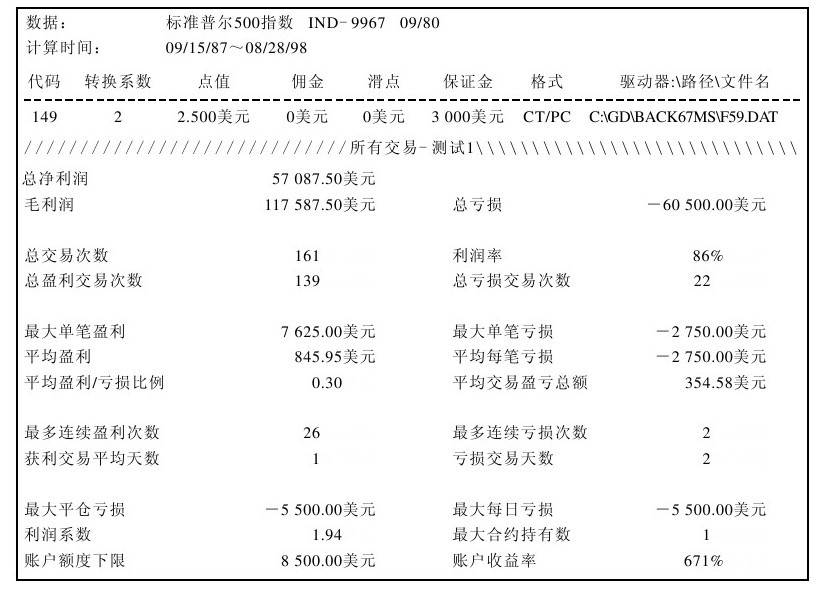
图 8-4
相似的交易策略可以应用到许多使用最大振荡值的市场中，只需要一开始制定合理的买进或卖出条件。我最喜欢的交易条件设置是每星期哪几天交易、高度相关的数据流、季节性因素、市场形态以及超买超卖情况。
8.3 一些建议
这些年来，我尝试过在各种时间段交易，以求找到有助于计算的最合适的天数。我原以为可以用10天的周期得到最合适的平均值，毕竟拥有越多的振荡值变化的观察值所得到的结果就越准确，或者只是我的猜测而已。然而我错了，在绝大多数的实例中，对交易或制定策略最有用的数据产生于之前1～4天。
这一策略的基础包含了高于或低于开盘价的价格振荡突破。我们寻找的突破量是包含上涨到这一点的量。所以一个关键的因素是在跌势中抓住买进的信号，在涨势中抓住卖出的信号。
最后，记住这是一个“傻瓜”技巧，它不知道大宗交易什么时候会出现，甚至不知道什么时候会有获胜的交易。这就是你为什么不能挑三拣四，而只能把它们看成漏斗中掉出来一样，一一地接受它们。如果你在这些交易中挑选，你不可避免地会选中一些失败的交易而错过获利的机会。这不是个人原因，我们都会犯这种错误，所以战胜这个恶魔的方法就是照单全收。
依照我的思路，最大振荡值的概念是最稳固、最有逻辑性的对付振荡突破的方法。这种失败的振荡度量是如此有效，以至于我希望其他人或是你可以用它达到超过我所获得的成绩。也许更好的答案来自于前面提到的标准差方法，或是将最大振荡值与前日变化结合使用的方法，我真的不能确定。我唯一能肯定的是，这是我所有技巧中最有力、最实用的技术之一。从1977年我探索出这个方法，它就帮了我很大的忙。时髦的数学方法可以使结果变得更漂亮，不过我认为大可不必。
要点重述
我希望你们通过此章的学习能够了解价格波动值和波动率是可以定义的，并且我们可以用它们衡量的价格变动作出判断。市场的波动是点到点的变化，超越平均波幅则意味着非同寻常的情况发生了。
第9章 盯住盘面进行短线交易
回顾历史可以帮助我们理解市场，但交易一定要往前看。
到现在为止，我跟你们分享的是我常用的交易方法。我用日线图来建立交易模式和关联，这些模式会产生和激发2～4日短线行情。这只是我的风格，不一定是你的。
人们之所以喜欢日间交易是因为他们不用去承担市场的隔夜风险。大家所担心的是今日收盘到明日开盘间市场会发生大的负面变化。这些变化包括新闻变化，以及其他无法控制的价格波动。他们喜欢在日内收盘时，一切盈、亏、平都已经结束。回家时，没有令人苦闷的亏损，不至于寝食不安。毋庸置疑，这一切都是真的，生活中有得必有失。就像前面提到的，对于日内短线交易而言，你所放弃的就是抓到大幅行情持续的机会。
对于大多数人来说，“短线交易”意味着在交易日整天被粘在报价屏幕前。他们想象中的情景就是一个备感压力的交易者每只耳朵听一个电话，大叫着诸如“买芝加哥，卖纽约”。当然，这种交易是极其令人亢奋的，要是你想每天像这样交易，你最好确定你的性格适合去干这行。我会告诉你我认为的所谓性格或气质是什么，并讲述我在寻找期货交易真谛时所得到的启示。
盯盘的交易者应该具备的素质有：专注，能做出明智选择，不用左思右想对当前形势做出反应的能力。
如果你是那种需要时间才能做决定，或做出决定以后不能马上行动的人，这个游戏并不适合你。想要赢得这个游戏，你必须能在短时间内做出决定并立即执行；没有时间让你发表高论或再三考虑。如果你不能这样做决定，几个月内你会血本无归。这是一个要么迅速要么死亡的游戏。如果不够快，你就死定了，就这么简单。这样的短线交易要求你具备能够抓住市场瞬间变动或在情况变化的时候马上改变几秒钟之前做出的决定的能力。对于那些生性迟缓的人，能够继承财产是件好事情，因为他们永远不会像短线交易者那样致富。
日复一日，跟踪报价屏幕上的价格涨跌，要求交易者能够在每个交易期间保持紧张和专注。这可不适合爱做白日梦的人。如果你不能保持全神贯注，正是在你忘了该干什么，在关键的那一分钟走神了，就决定了交易的成败。能够保持如此紧张和专注的状态并不容易，特别是当你的爱人打电话问你一些俗气的问题，比如家里花园或水管，或是密友打电话闲聊的时候，你有勇气告诉他们你现在没空聊天，或是挂掉密友的电话，或是不接爱人的电话吗？如果可以，你具备了从事这个职业的素质；如果不行，最好想想是否干这行。
我向你保证，你因为电话分心的时候，就是市场趁你不备出现大的变化的时候。别怪我事先没有警告过你。现在，让我们看看这个游戏的目的：你必须能在短时间内改变你对将来局势的判断。这可不是一般人能干的活。
也许出于什么不可知的原因，大家一股脑冲进日内交易里，还想着这样做能控制风险。最终他们还会问：“如果日末你就了结离场了，那隔夜怎么可能遭受损失呢？”
让我们用诗人勃朗宁夫人的诗改写一段：“有多少种方式在日间交易上亏钱，让我来计数方式。”（原诗此处：我如何去爱，让我来计数方式。）尽管表面上看日间交易像捡钱一样容易，但事实远不是这样。日间交易者不承认投资的数学概率。
让我把意思解释明白。趋势是一切投资和交易利润的基础。没有趋势，就没可能获利。所以你会问是“什么推动了趋势？”
我会回答：“趋势是时间的函数。你在一笔交易里停留的时间越久，就越有机会看到趋势的发展。”
接下来这就成了短线交易者的致命伤，时间没在他们最有利的一边。他们进进出出几分钟就一次的样子，如果他们能拿着头寸一整天，他们也只拿那么几个小时，这意味着他们自我设限。不夸张地讲，他们想逮到一个像样的大的趋势（利润）几乎是不可能的，因为他们给自己提出的时间限制，基于这个时限，潜在的交易机会都被挡在了门外。在市场中获利的最有把握的方式是用轻仓捕捉大的价格波动。
但日交易者正好做反了。他们能获利的唯一方式就是用很大的仓位来博取微小价格波动。看到他们是怎么把（胜率）计算表变得不利于自己的了吗？他们置自己于不利的位置……在某个时点上……他们几乎确定会遭受巨大亏损。
因为日间交易既不容易，也不保证一夜暴富，从计算上讲，你亏的会比赚的多。我们撞上大笔的亏损交易时就会是这个样子。一笔大额亏损可以一笔勾销很多笔盈利交易。所以，尽管你80%的时间里都是对的，一笔大额亏损就能破坏全部小额利润。
我的父亲比我聪明得多，他是炼油厂的工头，当他从炼油厂退休的时候，他认为拜访一下经纪公司，看看电视，他就能从短线交易商赚到钱了。过了差不多一个月他才弄明白这并不容易。他对我说：“拉里，这可比试着把你举起来都难。”
我怀疑前面写的这些是不是让你不再想做一名短线交易者了，但起码你不能说没人警告过你了。日内交易的美梦时常变成噩梦，所以一定要轻轻踏步，别把美梦惊醒了。
13年后，我带着同样的信息回到这里；日内交易常变成梦魇……但对那些想试一把的读者，我这儿还是有一些验证过的方法可以试的。
9.1 盯盘交易者是怎么赚钱的
短线交易者只有一个目的：抓住市场当前趋势。那就是你唯一需要做到的。听起来挺简单，但相信我——其实根本不简单。有两个原因：第一，甄别趋势本身是一门艺术，也是一门科学，可以说是一门抽象的艺术，这就像是毕加索和塞尚的混合体再加上一点夏卡尔的趣味；第二，即使你准确地判断了目前趋势的变化，你心态的变化也会把事情搞得一团糟。尤其当你做多亏损或是略有浮盈而突然得到卖出信号的时候，这一点尤为正确。
不要让长期观点迷惑日内交易，那是将来要发生的事情。日内短线交易者不能也不可以考虑将来，你唯一需要关注的就是跟随当前的短线趋势。如果你接受的话，你的任务就是模仿市场的变化。如果行情上涨则做多；反之，则做空。试图预测短期的顶部和底部是快速耗尽资金的捷径。你要跟随趋势，它是你唯一的朋友。
既然贪婪是比恐惧更强大的情绪，“持有并希望”是你最有可能的反应，那就意味着你放过目前的新趋势，抱着多头仓位，以扔硬币来期望卖出是错误的。笨蛋才会期望呢，赢家都会不停地调整，就像纺车一样。
我认为我们在尝试两件非常困难的事：击败趋势变化的判断；用更聪明的方法击败我们的头脑。这就是挑战。我用于判断趋势变化的第一个方法在第1章提到过，就是圈出短期高点和低点。这一理念可以帮助我们得到短期摆动点。当近期价格超越短期高点，趋势将会由升转跌；当近期价格跌破短期低点，趋势将会由跌转升。图9-1展示了这一趋势变化的经典形态，仔细研究一下，因为我们接下来会谈到实际情况。
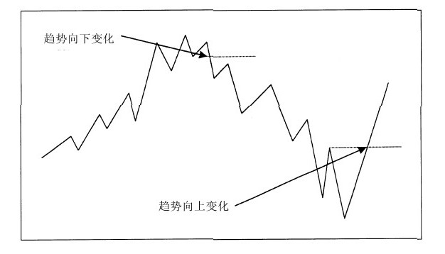
图 9-1 趋势变化的经典状态
9.2 用摆动点来辨别趋势变化
应用这一技术有几点提示，尽管在下跌行情中，价格突破短期高点意味着一轮相反的上攻行情，但还是有某些突破确实比其他的更有价值。
短期高点或低点被突破只有两种形态：在上涨行情中，被突破的低点可能是新一轮上攻行情前的低点，如图9-2a中的左侧图形所示；又或是由于行情下跌继而反弹至一个稍低的短期高点，价格继续回升失败后又会跌破这个前期低点，如图9-2a中的右侧图形所示。
图9-2a中的左侧图形所示的低点突破能更好地反映真实的趋势变化。
同理，反转向上的行情会出现在以下两种情况中：在图9-2a中，新低点形成之前的反弹高点被向上突破；在图9-2b中，市场形成一个较高的低点后，价格反弹超过两个低点之间的短期高点。在这种情况下，仍然是图9-2a中左侧的图形能够更好地揭示实际趋势变化的逆转。
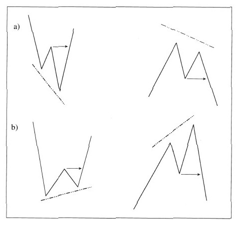
图 9-2 突破短期高点或低点
记住这一点，我们再来看看图9-3，这是1989年9月债券市场15分钟线，用这种技巧足以抓住主要的趋势波动。
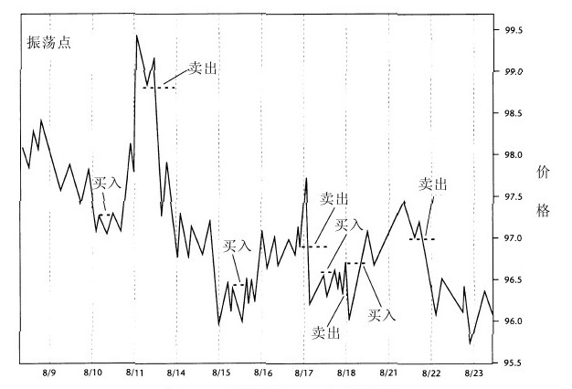
图 9-3 长期国债（15分钟线图）
资料来源：Graphed by the“Navigator”，Genesis Financial Data Services：800-808-3282.
图9-4显示的是债券市场行情，这是1998年4月，它再一次告诉我们短期高点或低点的突破可以帮助交易者在10天周期内与市场行情大部分趋势变化保持同步。
这种技巧可以有两种应用。有些交易者只是在趋势变化时买多卖空，这是应用此种技巧的最简单方式。一个更高明的方式是使用那些被每周交易日、每月交易日以及辅助信息确认的买入或卖出信号，这样可以过滤掉图上一些不规则波动。
我们还可以用这些趋势指示来告诉我们根据趋势，在价格回落时买进，上涨时卖出。如果趋势指示是向上的，而且已经出现了向上的反转，我们就可以采用短线技巧和手法找到买入信号。
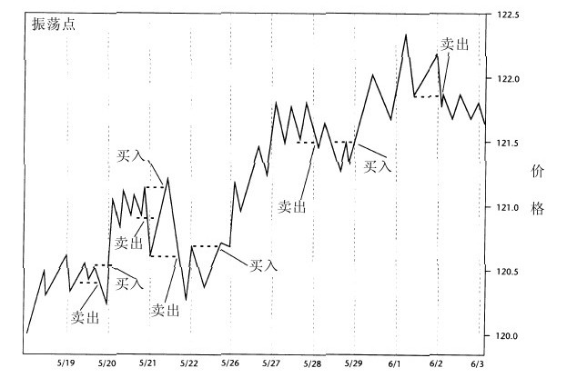
图 9-4 长期国债（15分钟线图）
资料来源：Graphed by the“Navigator”，Genesis Financial Data Services：800-808-3282.
9.3 三根线高点或低点系统
在我的职业生涯中，一度曾经靠这个短线交易策略获得30笔连续盈利交易。你首先需要计算三根线高点移动平均值和三根线低点移动平均值，依据摆动点趋势指标技巧——在三根线高点移动平均值处获利（每根线代表线图上的时间周期。使用5分钟线图会找到很多的信号，如果你不想进行那么繁忙的交易则可以选用15分钟线图）。这可以在任何报价机上自动完成，尽管“过去”我是手工完成的，你也可以像我以前那样操作。
交易的策略是：如果趋势是向上的，依据摆动点趋势识别技巧，在三根线低点移动平均值处买进，然后在三根线高点移动平均值处获利了结。
卖出信号的操作则正好相反：在三根线高点移动平均值处卖出，然后在三根线低点移动平均值处买进补仓。除非有充分的理由，否则只做空交易是非常愚蠢的。我们做空的理由很充分，那就是摆动点反转系统已经告诉我们趋势会走跌，只有那时才有理由在高位卖出，在低位补仓。
现在让我们把以上的思路梳理一下。图9-5显示的是将三根线移动平均点和摆动线叠加后的情况。我已经在趋势变化的地方做了标记；我们追随这些趋势反转从逢高做空到逢低做多。图中也标记了三根线高位和低位进场点。游戏是这样进行的，在趋势反转向上的时候，我们在三根线低点买进持有，在三根线高点获利了结并等待回归至三根线低点时再进场建仓。即使三根线低点能够制造出有利于卖出的反转趋势，仍然要继续交易。卖出操作则正相反，等到趋势反转向下，在三根线高点全部卖出，再在三根线低点补仓获利了结。
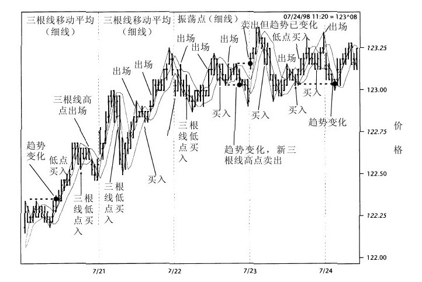
图 9-5 长期国债（15分钟线图）
资料来源：Graphed by the“Navigator”，Genesis Financial Data Services：800-808-3282.
图9-6标记出了所有的趋势反转情形，你可以找出买进进场点和卖出的出场点，在纸上模拟交易。我建议你研究一下这幅图，对于超短线交易方法有一个感性认识。注意这些是15分钟线图，但道理同样可以应用在5分钟线图和60分钟线图上。
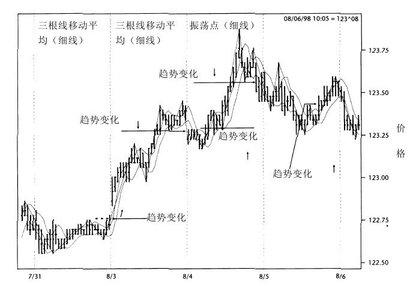
图 9-6 长期国债（15分钟线图）
资料来源：Graphed by the“Navigator”，Genesis Financial Data Services：800-808-3282.
9.4 短线交易的一个新指标：威尔差价
市场变动有它真正的原因，并不受技术分析的左右。现实生活中的事情总有因果关系。图表改变不了市场的走向，而是市场决定图表的形状。考虑到这一点，我认为短期摆动也是由外在的因素诱发的。价格不会因为上涨而上涨，自有其上涨原因。找到那些原因的话，我们就会领先一般的短线交易者和日内交易者好几光年了。
我最喜欢的因果指标是“威尔差价”指标，一个在发生主要交易的一级市场及可能影响一级市场的二级市场之间的价格流向测算指标。正如你所知道的债券市场影响股票市场，黄金市场影响债券市场一样，“威尔差价”使我们能够洞悉这些市场间的内在联系。这一指标的建立和计算方法是用一级市场的价格除以二级市场的价格，再乘以100。这样就建立了两个市场的价差，使我们可以将两个市场之间的关系做基本的比较。
以应用15分钟线图做短期交易为例（用其他周期的线图同理），首先建立一个5周期的平均价差指数，然后用20个周期的价差指数平均值减去这个值。这样，我们就可以看出什么时候某个市场比其他市场更热，同时对市场间相互作用有更深的了解。诚然，这也不是完美的系统，我只在商业杂志或报纸的广告上才看到过大量的、号称自己拥有完美的交易系统的广告。在这一点上你完全可以相信我：90%的广告都是在吹嘘，只有10%可能是真实的。如果真的有人有这种非凡的交易系统，他一定不会对外宣扬，而早就多赚100倍的钱了。另外，交易在税收方面的巨大优势也是出售交易系统所无法比拟的。到目前为止，我还没有看到一个能够连续赚钱的机械化的日内交易系统。日内交易是一门艺术，有了正确的理解，才能成功地运用它。
9.4.1 一个实例
图9-7显示的是1998年6月国债的30分钟线图。图底部的指标是“威尔差价”，反映的是黄金与债券价差。我们的交易策略是，在这一指标从坐标轴以下的负值区上升到正值区的时候买进，因为这是市场上涨的时机；而当指标从坐标轴正值区转入负值区时可能是卖出的时机。
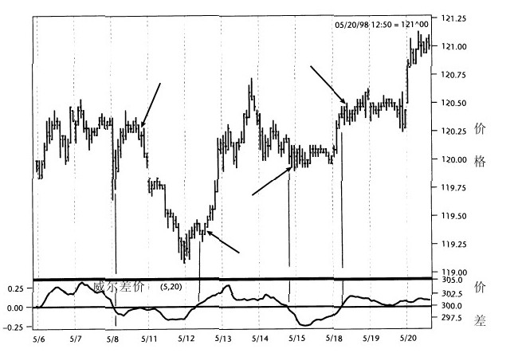
图 9-7 长期国债（30分钟线图）
资料来源：Graphed by the“Navigator”，Genesis Financial Data Services：800-808-3282.
我并不认为这一指标是万能的。我只是用这一指标正确地追随市场真实趋势。在这个例子中，观察的是黄金对债券的价差。每当价差从负转向正，我总是希望再有预见的事情出现：
[我希望下一根线能够涨过使“差价”指数由负转正的那根线的高点。]
[我还要找到能够证明趋势仍然有效的最后佐证。]
9.4.2 我的舒适标准
如果没有这些确认信息，我会感到不安。有其他技术信号如趋势线或正的摆动量指标出现在你的图表或屏幕上时除外。你可以做这些交易，不过确认市场上涨的最好证明莫过于价格创下新高，或是在威尔差价指数由正转负时价格创下新低，来判断趋势下跌。
让我们从1998年3月8日的图线开始。第一根30分钟线图大跌导致威尔差价指数跌入负值区，但是第二根线没有跌破上一根线的低点，所以我们没有进场。最终在13：50的那根线威尔差价指数转为负值，我们可以在这个位置做空，而成交价低于上一根线的低点，大概在120（7/32）美元。
威尔差价在当天和第二天一直处在负值，直到5月12日9：50这一根价格线才转为正值。严峻的考验开始了，这波上涨行情会持续吗？的确，在10：20这一根价格线点位处于119（14/32），因此我们净赚25点，或每笔合约盈利750美元。我们在119（14/32）买进并等待威尔差价跌入负值时的做空机会。第一次跌入负值是在5月14日的12：50。同样，我们在等待进一步确认，而后一根线价格也没有进一步变化。现在我们等待该线的低点被突破。我们最终在14：20跌至120（4/32）美元时选定了“跟踪”止损出场与反转的点位。交易净赚20个价位，或每笔合约盈利600美元。
我们坚定了做空交易的决心并等待进一步发展，那就是威尔差价能够进入正值区。直到5月18日8：50才出现机会。此轮上涨买盘有备而来，当日买盘出现在12014/32美元价位上。实际上，我们在做空交易上赔了10个价位，约312.50美元。
9.4.3 我们还能做得更好些吗
我们有可能避免这次亏损吗？当然，回顾一下星期一早上交易的例子，如果我们盲目跟随就有可能造成亏损。而当这一切真正发生，且通常都会发生的时候，我们只能用以下的话聊以自慰：
[老千儿也不是每次掷骰子都能赢。]
当日我们最终以获利5个价位，大约150美元结束，使自己稍感欣慰，也补偿了部分损失。接下来的交易（记住，交易者只做大买卖）我们要每笔合约盈利500美元。
一个机敏的交易者会在空头交易后的第二根线价格创出新高时平仓离场。为什么？威尔差价正迅速地靠近零线。我们应该限制亏损，价格在1205/32美元出现波动突破，而我们只损失1个价位，或32.50美元加上佣金。你也许不选择离场，不过我一定会，因为威尔差价走势与交易区间突破共同指出了这一点。就像我所说的，这是一个喜欢思考的人的行业。
如果你还是心存疑惑，可以看看5月18日的5分钟或15分钟线图。我们注意到在两个时间周期中，威尔差价都显示了清晰的向上突破，告诉你最佳的选择至少是舍弃空头仓位。有了这么多证据，正确的行动路径也就好找了。
图9-8里可以看到威尔指标在13年后依旧有效。看到这幅图那一天刚好我在重修本章。选择这张图表没有什么特别理由。正如你看到的，图中水平线的交叉处清楚地示意出一个一触即发的趋势运动。当时债券价格走势比黄金价格强，这对债券市场而言是看涨的前兆。这个指标可以用在日线上，也可以像这样用在30分钟线上。
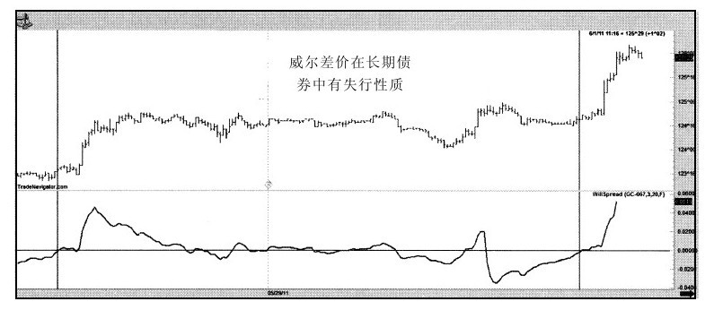
图 9-8 威尔差价
图9-9结合了威尔指标和前面讨论过的3日价格通道。如果威尔指标值是正的，我们就能假设债券价格会上涨，因而我们可以在3日最低价移动平均线的低点买入，在3日最高价移动平均线上获利了结。
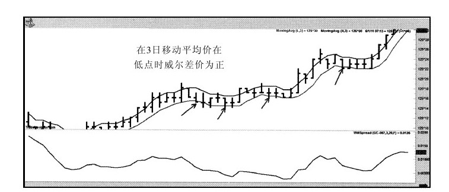
图 9-9 威尔差价与三日通道
我们做的就是把两个经过时间验证的交易技术结合在一处，占尽市场趋势与反趋势的先机。短线交易者必须专注于这个概念：首先确认一个更长周期的趋势，然后在上升趋势的回调中买入，期望上升趋势会持续下去。放空刚好相反，你需要找由某种原因造成的下跌趋势，然后在价格逆势回调时卖出。
关于威尔指标和债券市场的原著是我在20世纪80年代中期撰写的，当时我用参数设置为14/19天的威尔指标来确认债券市场日线上更长周期趋势。我觉得你会很高兴，看到债券市场现在的图表里威尔指标还是有效的（见图9-10）。
图 9-10 威尔差价还有效
你可以看到，在搜索辨别市场上涨哪些是良性的、哪些不是良性的方面，这个指标还是可靠的。2010年9月的高点是个最棒的例子，在一路下挫的过程中，威尔指标就是拒绝给出任何买入信号。也得承认，它在2011年1月也给出过买入信号，结果不是个很强的趋势。这里的教训就在于：决不能单单依赖任何一件工具，而要检查各个方面获得更多的深刻认识。
9.5 威尔差价和标准普尔500股票指数
相同的理念可以帮助我们在各种股票指数合约诸如纽约证交所、道琼斯、价值线、迷你标准普尔和标准普尔500指数中抓住短期摆动的机会。
尽管黄金市场对债券走势有巨大的影响，但它对股票市场的影响却没那么大。不过正如你所知的，利率对股市有很大的影响。所以我建议你应用短期或长期政府债券构建威尔差价指数。应用30分钟线图，我们可以计算3周期或15周期的指数平均值间的差值。当然，手工计算有很大的工作量，不过好一些的报价软件如Omega交易系统和Genesis数据都已经把我的指标加进了它们的程序。
我并不会随意地选择时段向你展示威尔差价指数的价值，我会用1987年的股市崩盘以及1997～1998年的大跌向你剖析股市崩盘。
9.5.1 1987年股市崩盘
也许有史以来最惨重的股市崩盘出现在美国市场是我们的荣幸。一次改变生活与财富，让律师们在5年后还在打赔偿官司的灾难性大崩盘。即使现在，仍然有人写书宣称知道这一切将会发生或解释为什么会发生。学术界提出了很多建议，希望避免这种投机性泡沫在将来再度发生。我认为没什么大不了的；其实，在当时而不是现在，应用威尔差价就可以预测崩盘的出现（见图9-11）。这一令人惊奇的指标在10月14日深入负值区至311.50点，提示大家可以在崩盘的全过程中保持空头头寸，因为指数告诉这个理念的跟随者底部还没有出现。利率和短期债券市场并没有对股市起到支撑的作用，而且在没有明确证据的情况下，我们不应该寻找买入信号。确实，除非是绝对的低点，在任何价位买入都是代价高昂的。
出场点或威尔差价第一次回到正值区出现在1987年10月20日，当标准普尔500指数位于219.50点的惨状时，我每笔合约盈利46 000美元，而当时的保证金只要2 500美元（见图9-12和图9-13）。
图 9-11 标准普尔500指数（30分钟线图）
资料来源：Graphed by the“Navigator”，Genesis Financial Data Services：800-808-3282.
图 9-12 标准普尔500指数（30分钟线图）
资料来源：Graphed by the“Navigator”，Genesis Financial Data Services：800-808-3282.
9.5.2 单独使用也ok，但我们还能做得更好
尽管威尔差价指数可以单独发挥作用，但也可以与其他已知市场信息联合使用。比如，你一定听说过那个著名的论调，股市在每月月初，特别是在2月、3月、5月、7月、9月、10月和11月月初上涨。因此一个可操作的短线交易策略就是，当以上提到的月份每个月初威尔差价出现正值的时候便是买入的信号。以下是1997年所有信号的回顾，请跟随我看一看你能够实实在在地运用这些素材做什么。
图 9-13 标准普尔500指数（30分钟线图）
资料来源：Graphed by the“Navigator”，Genesis Financial Data Services：800-808-3282.
1997年1月。威尔差价指数在1月2日穿越，并一直停留在正值区，进场点是744.70点；1月6日威尔差价指数变为负值，而此时标准普尔500指数已上升至752.00点，因此我们获得了7.30点的利润。
1997年2月。1月29日，威尔差价指数在774.60点穿越至正值区已经清晰预示了月初上涨行情，离场应该在31日收盘，因为威尔差价指数已经开始下跌。这是一个2～3天的偏离，所以除非有非常明显的牛市行情迹象，否则我们应该带着13.90点的利润离场。
1997年3月。直到3月3日792.90点时，我们才获得进场的机会。这个月没有什么值得交易的，次日794.00点，威尔差价指数出现穿越迹象时我们获利1.10点离场。
1997年4月。我真的很爱威尔差价指数。一个传统的月底交易者一般会机械地买入并等着赔钱。不过你我比他们聪明，我们不仅会用技术分析和周期性分析，还知道市场的内在关系会提供更有价值的信息，因此我们回避了本月的交易。威尔差价指数直到4月7日才给出买入的信号，已经远离了热门区域。
1997年5月。我们可以看到月末上涨行情的信号在4月28日772.40点时出现，到5月1日800.50点离场时，这一轮快速暴涨使我们获得了令人惊奇的28.10点利润！
1997年6月。本月我们经历了第一个亏损的交易：在5月28日，威尔差价指数进入正值区时买进，然而威尔差价指数却在几根线后的851.20点跌入负值区。我本该在当日849.00点时以2.3点止损了结。然而，月末和月初的热门区域仍然存在，而且威尔差价指数在5月30日转入正值，没有理由不进行交易；我们还在交易时段内。买进价格在844.70点，6月2日在848.00点处离场，这一交易盈利弥补了第一次交易的亏损。
1997年7月。我们再次得到了自大的教训，6月30日在威尔差价指数为正值时的896.00点买入进场，当日890.00点时离场，亏损6.0点。哦，这可是又快又难看。不过就像6月底那样，我们在7月1日看到另一个正值的穿越，所以我们在898.00点时买进。我们的策略很简单，等待威尔差价指数出现负值或持有2个交易日。我们等待。威尔差价指数在几个小时以后就进入负值区，达到897.80点，出现0.20点的亏损。另一个穿越出现在7月1日，因此我们在900.25点再次进入并持有至7月7日，在927.55点卖出。7月的净利润是21.10点。
1997年8月。又到了月初，不过威尔差价指数一直在负值区，所以我们没有交易。过滤措施再一次使我们远离了图面上似乎是上涨的趋势。随着时间的推移，我们没有看到值得交易的基本面变化，因此一直没有交易。
1997年9月。更谦虚一点。威尔差价指数8月29日出现了明显的穿越迹象，我们也在当日902.55点时迅速止损出场，遭受了本年度最大亏损3.20点。
不过，我们仍然坚持策略，在9月2日912.50点时买进，并抓住一波强劲的上涨行情，一直涨到9月3日928.90点时离场，获利又一次弥补了前期的亏损。这波行情过去了，但是由于时间和市场内部的共同影响，我们获得了15.50点或1 295美元的盈利。
1997年10月。我们一直等到月初威尔差价才出现穿越，预示上涨行情的出现。10月2日965.30点又出现了买入机会，威尔差价在一根线跌入负值区，不过没有持续并给出卖出信号，而是马上反弹，穿越正值区，直到收盘时以穿越另一个负值区结束。上涨趋势在968.75点结束，我们获利3.45点。
1997年11月。这个月的交易太轻松了。穿越出现在10月31日919.00点，出场点在947.00点，也非常明确。我们轻松得到28点的获利。我想，要是每个月都这样该多好呀。
1997年12月。这是另一个传奇般的交易，月初在962.50点出现穿越，12月2日973.20点时出场。正如蓝眼睛歌里唱的“这是一个好年景”，全年总共13笔交易，10笔获利。更重要的是99.70点的净利润或24 925美元证明了基本面分析与时间因素影响相结合的有效性。时间影响因素总是存在的，但如果缺乏基本面分析的有力支持，谢谢，我只能放弃。市场上有那么多胜算很高的交易机会能让我们获利，我们没有必要像普通交易者那样频繁地交易，因为我们有一个“行之有效”的工具。
赚的钱越多越好，这就是我的信条。
图9-14给出的是标准普尔500指数电子盘迷你合约当前的市况，同样也在日渐的基础上使用了威尔指标概念。该图给出一个跟踪止损的应用范例。很明显，这不完美，没什么是完美的，但在价格上涨时威尔指标依旧保持负值就很不寻常了。换句话说，我们有个可以告诉我们当前短线上涨的情况的指标。
图 9-14 2011年日内威尔差价
从1998年至今，你经常会在我的著作里看到，威尔指标可以引领方向。就像它在2011年6月1日崩盘前做的那样，看看图9-15。价格在一个区域里上下反复震荡，但威尔指标却转向下跌，穿过0轴，随后巨大的卖出压力席卷了市场。
跌盘的出现是一份不理想的失业报告出台导致的。在报告发布前，威尔指标显示出股票市场价格明显疲弱于债券市场，因而交易者可以预期到一份不理想的失业报告。
图 9-15 威尔差价还是引领着市场形势
要点重述
本章给你展示了更多的方法。市场与市场之间是相互关联的，一个市场的波动必然基于另一个市场产生的波动。这通常会给我们带来预警。更重要的是，这可以成为交易者所掌握而他人不会用的工具，超越传统技术分析效果。
第10章 短线交易的特别情况
历史的确会重演，只是不会很精确地重演。
这一章里，你会见到在标普500指数和债券期货上最成功也是最赚钱的一套交易策略。自本书第1版出版至今，这些特定的形态——月度季节性偏离，在两个市场里都惊人地保持了一致。如果你担心交易策略未来是否能继续奏效，再没有什么比这个策略更适合的了。认识这些策略是从20世纪60年代开始的，使用这个策略交易是在八九十年代，现在你自己看看，这些策略如今依旧表现得有多棒。
现在，我们应该做一张把每个月可能的短线交易机会记录下来的列表，无论我们接受或拒绝这些交易机会。你也可以从我所列的交易机会之外收集你感兴趣的有关交易资料。为了使你对以上所述有一个感性认识，本章为你提供每月你需要关注的特殊交易方面的知识。本章所指的交易围绕当月特定的日期和假日前后展开。
“月交易日”（TDM）已经不是一个新概念。如上所述，这个概念在几年前就被人们所熟知。这里，我只是对“股价一般会在每个月的月初上涨”这个在股票市场上众所周知的理念做一些改进。我想要在这里强调的就是：债券的价格也会遵循相同的月初上涨规律。我们会基于这些观点制定一个获利策略。
10.1 月末股票指数交易
有许多工具可以帮助投机者把握这些股价波动。标准普尔500指数已经是股票市场交易走向的核心指标了，然而最近，对保证金要求更低的标准普尔迷你合约指数已经吸引了小投资者的注意。另一个新的指数期货合约是模拟世界著名的道琼斯指数编制的道琼斯30指数期货合约。我想这份指数期货将来作为交易品种会是一个更重要的指数。
我们这里所探讨的投资策略是围绕标准普尔500指数的，原因很简单：我们拥有标准普尔500的数据更多，因为这个指数1982年就开始交易了，而道琼斯30指数是1997年才开始交易的。不过交易策略可以应用于任何股票指数的交易，只不过你需要根据保证金合约的大小、目前的波动率调整一下止损金额。
我追溯到1982年标准普尔500指数，模拟在每月的第一个交易日开盘时买入，在获利的第一天开盘价卖出。我选定的止损金额只是1 500美元，除了入场开始交易的那一天，这个止损金额在开始交易后一直都适用。测试的结果是：在总共129次交易中，获利73 437美元，如果每月只交易一次，平均年获利7 000美元。这套交易系统的成绩相当不错；交易的准确率达到85%，单笔交易平均利润569.28美元（这里指净收益，即获利-亏损/总交易次数）。最大平仓亏损额只有3 325美元，甚至不到总获利的5%。这是非常好的交易成绩（见图10-1）。
图 10-1 标准普尔500指数每月第一个交易日买入
然而，在这个行业里会被反复问到的问题是：“最近你为我做了些什么？”你的机遇好坏全看你最近的交易；这也是个真实的生意，你要不够快就得死。牢记这一点，我们来跟踪一下上面关于在每月第一个交易日买入的研究结果。（见图10-2）。我敢打保票，时隔13年，这个系统85%的交易信号准确率还能保持如初，你肯定不信。
图 10-2 月初买入
打开电脑让我们测测看。下面的交易测试与前述的一致。
测试结果显示了利润非常多，从图上可以看到这个简单形态的权益曲线。从1998年到2011年6月期间，这款“秘密交易”系统赢得了超过67 000美元的利润，单笔交易平均获利424美元，回撤降低到可以接受的13 000美元。问题就出现在信号准确度上，降到了42%的水平。你会问为什么？因为合约规格变了，波动率增加了，最佳止损点变成了3 500美元。
在图10-3中，你看到的是同样的交易测试。这一次交易盈利达到了106 000美元，66%的交易是赚钱的。然而在一个更小的迷你合约上，使用同样的止损单，交易交易准确率达到81%。图10-4显示了这个系统的客户权益曲线。净利润达到29 650美元，单笔平均利润426美元。漂亮，非常漂亮！看看权益曲线就知道。如果在周一不交易，在迷你合约上的止损价格也设置成1 600美元，这个系统还可以改善。
图 10-3 设置3500为止损
图 10-4 设置3500为止损
10.2 目标交易月份
如果已经了解了这个游戏的诀窍，你也许已经会思考是否有些月份的交易获利会大于其他月份。回答是肯定的，正如表10-1所显示，在过去16年中，最糟糕的月份是1月、2月和10月，这些都是你应该躲开或者在长期交易中要小心对待的月份。我建议你看着表10-1，逐月地回顾。
10.3 更进一步
正如图10-5显示的，从1998年以来，这一直是真实的。而且我们看到1月和3月份是不赚钱的，然而2月是赚钱的。看上去我们当然会想，1月份和3月份到底发生了什么？
图 10-5 1998年远期合约结果
如果交易只在每月第一个交易日进行，1月和3月除外。想得到比图10-6中显示的这个例子更好的结果几乎是不可能的了。在标普500指数标准合约的交易中，一共有270笔交易，获利交易占比80%，止损点设置在3 500美元上。下面的权益曲线图反映了这个测试的结果。平均单笔盈利达到了546美元的规模。
图 10-6 标准普尔500：月初交易
尽管我们的投机对手同样了解这一重复的模式，但他们中的大多数人并不能一如既往地利用这一规律或者跳过其中某些月份的交易。我们能够做到这一点是一个巨大的进步，不过我们仍然可以做得更好。
怎么做呢？只需要在债券市场处于上升趋势时应用这一交易系统就行了。就像我在前面展示的，债券市场行情的上涨与股票行情的上涨是有连带关系的。一个绝好的也非常简单易行的方法是：在任何一个月里，如果债券先于我们预期的入场日出现当日收盘价高于30天前收盘价，我们就在第一个交易日买入，因为这是债券会支持股票市场上涨的信号。
10.4 债券市场的月末交易
下一步，正如我们在标准普尔500指数上的交易一样，让我们看一下在债券市场每月的第一个交易日买进的交易情况。使用1 100止损金额并在第一个获利日卖出的原则，交易的结果是非常可观的。这种交易方法的准确率将近70%，考虑到平均每笔交易持仓不超过一天，它的每笔交易平均利润也是巨大的（见图10-7）。
图 10-7 债券每月第一个交易日买入
通过跳过一些明显的表现较差的月份，我们能显著地改进这些交易结果，如表10-2所示，1月、2月、4月和10月都是较差的月份，而我们在12月打了个问号。
正如前面提到的，关于股票市场在月末上涨的趋势报道已经写了很多年；我所做的只是想办法优化出适合这一区间的交易策略。直到现在，债券市场在每月这一相同时间上涨的规律只有我的几个学生了解。我这些年的研究和实际交易都说明，这也是一个对短期债券和中长期债券的短期波动来讲都很适合的交易时间。
图10-8和图10-9可以向你全面展示这个交易技巧的威力。图10-8显示的是一个在每月最后交易日前三天买进一份长期债券并持有6个时段，到时离场或在债券市场设置保护性止损，亏损全额达到1 500美元离场的账户金额的变化情况。这张表来自于我最好的学生之一迈克·斯托克（Mike Stock），他为债券市场的这一现象提供了有说服力的证明。同样的机会也出现在标准普尔500指数的交易中，如图10-9所示。
单位：美元
图 10-8 月底交易的长期国债系统（美国政府长期国债1983～1996年）
图 10-9 月底交易的标准普尔500指数（美国政府长期国债1983～1996年）
10.5 更明确一些
债券市场的上涨一般发生在每月第1个交易日前，图10-10与图10-11说明了这一点。图10-11显示了每月第18个交易日指数开盘时买进债券，并制定1 500美元止损金额并在入场的三天后收盘卖出。从1986年起，总共的139笔交易获得了34 875美元的净利润，单笔交易平均利润为250美元。尽管期间出现过8 625美元的最大单笔交易亏损，但这还是一个值得交易的策略。
我们还能做得更好：通过结合黄金市场上的次级趋势，我们可以过滤掉失败的或是获利较少的交易。在马蒂·祖维格（Marty Zweig）和约翰·墨菲（John Murphy）（他们的著作是必读的书籍）的著作中都提到了，黄金市场的走势对债券市场有巨大的影响。当黄金市场走强的时候，会对债券市场的涨势起到阻碍作用；相反，当黄金市场低迷的时候，债券市场则更有可能上涨。
图10-11显示了通过黄金市场过滤交易的威力。在此种情况下，交易还在同样时段进行，离场、止损条件与以前一样，不同的是，交易只在黄金市场下跌的时候进行（例如，我们进场前黄金市场的收盘价低于24天前的收盘价）。
图 10-10 在每月第18个交易日买入债券
图 10-11 在每月第18个交易日买入债券，并同时有黄金下跌趋势支持
尽管总利润下降了2 000美元，但交易的准确率有小幅上扬，因为我们最关注的单笔交易平均利润上升超过100美元，而最大亏损额大幅降低，降低到原来的一半！
10.6 越来越好
我们通过将进场时间推迟到每月的第22个交易日还能让以上的交易结果变得更好。图10-12中，我们看到交易明显减少，只有50笔交易，而准确率则更高，达到76%，并且获得了令人吃惊的496美元的单笔交易平均利润和可以接受的每日最大亏损4 500美元。
图 10-12 在每月第22个交易日买入债券
我知道，你一定想了解我们参照黄金走势来应用刚才的交易策略时的结果会是怎样的。图10-13会提供让你印象非常深刻的答案：20 156美元的利润。再强调一下，趋势标准是当黄金当日收盘价低于24天前收盘价，并遵循与以前的交易相同的止损金额和卖出点。应用这种策略，我们的单笔最大亏损额只有1 500美元，交易准确率飙升至89%，单笔交易平均利润上涨至719美元。
这是一个非常特殊的交易机会；问题在于并不是很多月份都有第22个交易日，但是只要存在第22个交易日，我们都会买进。查看一下通过黄金趋势作为过滤手段的交易结果，我们获得了17笔交易连续获利的成绩，而在没有过滤手段的时候，只有5笔交易连续获利。
图 10-13 在每月第22个交易日买入债券，并同时有黄金下跌趋势支持
我提供另外一张图作为补充，说明债券市场真实交易中不可思议的持续力量。测试的结果是通过在每月月末前第5个交易日的开盘价买入得出的。这通常是每月第18个交易日，正如我前文援引过的。自从20世纪90年代开展这些早期测试以来，这个基础的交易方法产生了119笔交易，32 000美元的盈利。平均每笔交易获利275美元，同时最差的回撤是小于3 700美元！
你可以从图10-14看到全部交易表现。这次交易实测选择了自80年代直到2011年5月的数据。当我们谈到模式是否有效的时候，最好能把债券市场的现象也考虑进去：债券市场每月上涨的习惯性倾向。
图 10-14 整个系统表现
10.7 卖出的适当时机
债券一般会在每月中旬下跌，如图10-15所示。我们的交易策略是在每月的第12个交易日开盘时卖出，仍然维持以往3日出场以及1 400美元止损金额的惯例。从1986年至1998年中，依据这种下跌交易，我们获得76%的成功率和在152笔交易中单笔交易平均利润133美元的成绩。单笔最大亏损额为6 093美元，也在可以接受的范围内，但比我们理想的获利-亏损比要高。理想中的单笔最大亏损应该小于20 281美元总利润的15%。而在这个策略中，亏损占到了总利润的20%。所以尽管对目前的情形基本满意，但我们还想试着做一些改进。
图 10-15 在每月第12个交易日卖出债券
尽管传统的商品市场的市场分析师会试着使用诸如趋势分析、振荡指标、动能流量等来过滤交易机会，但这些都是垃圾技术指标。我宁愿回到黄金市场与债券市场的基本关系这样真正有意义的事情上来。毕竟，图表和振荡指标不能动摇市场，而两个市场间的内在关系则可以影响市场。
现在，除了拥有一种行之有效地把握行情的交易策略，我们还能在图10-16中看到基本面分析的强大力量。交易进场和出场的规则与前例完全相同，唯一的区别也是产生差异的因素，就是债券卖出交易只在黄金市场收盘价高于10天前收盘价时交易。换言之，黄金市场处于涨势时，提示我们在这种金融环境下，信号更加有效。单笔交易平均利润超过原来两倍多，达到6 000美元，准确率从76%上升至78%，这倒没有什么，但是亏损与获利比由20.9%降低到11%。可能最令人兴奋的还是平均每笔交易利润从133美元增加到359美元。
图 10-16 每月交易日卖出债券，并同时有黄金上升趋势支持
这里，我们拥有很值得交易的机会。你唯一需要做的是耐心地等待每月中期的交易时段，当黄金处于涨势时，是我们这种投资策略获得上面业绩的基本条件。
耐心好像是商品交易员最缺乏的商品。我猜，大多数人一定只是很随意地进行交易。我只有在游戏中有很明确获利机会的前提下才会进行交易，否则，你知道，我只会在场外观望，那里是我应该待的地方。我也同样希望在行情不明确的时候，你能和我一样在场外观望。
要点重述
耐心好像是交易者那儿供不应求的商品。我估计多数人都是抱着好玩的想法进行交易的，但只有发现自己在游戏上优势显著时，我才会下注或是投机。如果没有优势，我会站在边线以外静静观望，那儿才是属于我的。我希望你也像我一样，站在场外。
本章的目的是让你对交易策略有更深入的认识，同时也呈现给你一些我使用的纯粹的交易法。在交易月底/月初会出现明显的、强劲的、主导市场价格变化的价格模式，那么现在，你应该知道该怎么做了。
第11章 何时结束交易
想清楚结果是什么之前，永远不要采取行动。
结束交易时，应该遵守以下三个法则：
（1）对于所有的交易采取止损，这样即使所有的交易都失败了，还能有保护。
（2）采用在Ralph Vince帮助下我开发出来的“bailout”获利了结技术。基本规则是第一次获利就出场。即使获利只有一点点，也要退出交易。
这种做法非常适合标准普尔指数。对于行动缓慢的市场，我会推迟一两天时间再退出，给市场上涨的时间，以增加每笔交易的平均利润。
（3）如果得到反向信号，则退出交易，并进行反向交易。如果是短期交易，得到购买信号，不要等到止损点或者“bailout”退出，要遵循当前的信号操作。
这是我想告诉你们的所有出场原则。不要贪心，要按照规则而不是情绪来指导交易。
当然了，也没有别的退出方式了。好多人依旧遵循斐波纳契数列进程，也根据它来退出。我跟他们不一样，因为我没觉得遵循斐波纳契数列是合适的。
持仓一定天数之后就退出交易是个很有价值的思路。毕竟，如果在X天之内你没能获利的话，那么不管你当初交易的目的是什么，可能一切都消失了。
我注意到短线交易总在两难之间。市场超买的时候，存在巨大的获利诱惑，但你所做的却是在远离趋势运动，而且离开得非常早，非常频繁。这有法子吗？
也许。如果你在进行短时间周期的交易——为避免争议，让我们假设这个短期就是4天。如果市场超买了，做多的你会把它当成很好的获利场所，但你退出趋势也许会太早。所以，如果进场时也用超买指标，离场时干吗不用2倍时间周期做参数呢？
换句话说，如果假设市场可能出现某种回抽，你可以用8天的超买指标来确定交易离场位置。这真的是超买了。使用一个时间参数作为进场依据，选择另一个参数作为离场依据，这让你可以在交易中停留得更久。
第12章 对投机的思考
投机没有什么不好，但是糟糕的投机足以构成一场灾难。
能够正确地预知市场的转折点是一回事，但这不是创造长期财富的方法，也不是从事投机事业所必备的充分条件。
投机事业的成功不意味着成功完成一两笔交易。任何人在任何时刻都能做到这一点。这不是一个靠运气就能成就的事业。投机的业务精髓是持续地做正确的事情——不会脱离正确的轨道，不会因为最近的亏损而感到沮丧，也不会因为连续两次交易盈利就飘飘然。我更感兴趣的是交易这门艺术的职业特点，而不是过去的一两笔交易。每个人都会在板子上钉钉子，但是这跟盖房子是两码事。要盖好一栋房子，不仅需要技巧，更需要制定计划，有实施及完成计划的意愿，不论刮风下雨都不间断的能力。
12.1 想好退路再进场
傻瓜都能打架，但取胜则是另外一回事。
我曾经一度是个傻瓜。
我小时候并不擅长打架，但却擅长挑起事端，通常打到一半的时候就被揍扁了。
从学校回到家里，我常常是衣衫撕破、鼻孔流血，我爸爸经常看着我，摇着头说：“拉里，任何傻瓜都会打架，但聪明人不会搞成这副模样。”
照我看来，如果有关交易的每本书或每个教程从一开头讲的都是进入策略而非退出策略，我们这些教别人投机的老师们一定已经严重损害了这个行业。
参与一项交易很简单，傻瓜都会做，而如何退出交易才是获得利润的关键所在。下一章我会向大家展示我实际的账户清单，你就会明白我在实际交易中赚了数百万美元。本书中我教给大家的不是虚假或夸张的宣扬，而是实实在在的东西。
正如我的一些追随者所知，20世纪90年代晚期我曾担任多名重量级拳击冠军的经纪人。如果你对拳击感兴趣，你肯定知道像吉米·桑德、麦克·亨特、雷·默塞尔等拳手，我还参与推广乔治·福尔曼在东京的最后一战。
你可能觉得拳击与交易关系不太密切，但我可以确切地告诉你：你一生中所经历的战斗不会比市场更加残酷。这个观点的灵感来自杰拉尔德·勒伯（Gerald Loeb）撰写的可能是史上最畅销股市投资书籍《为在投资中幸存而战》（2010年）。他说的准确无误：在投资中幸存下来是一场战斗。这场战斗就是你与市场的战斗，这场战斗就是你与其他参与者的战斗，这场战斗就是你与你自己的战斗。
正是基于这一点，我想大家可以通过与拳击的类比，学到很多有关成功交易的东西。
当时我们正在努力训练下一个重量级拳手，我遇到一个很有趣的人，他叫汤米·皮科克，是一名拳击训练师。我花了好几年时间才吸收了许多汤米所讲的道理，并将他的训练课程精髓运用到交易中。
汤米反复训练拳手并令其掌握两个要点。第一点就是：你不想被击中。在投机行业中，我们称之为风险控制资金管理。
汤米对拳手实施了一些看上去不寻常的训练。他会让拳手假装被击倒、落到护垫上，并练习从拳击场上站起来。观察一位缺乏经验的拳手，你会发现被击倒时他试图翻滚着坐起，随后站起来；这样做会导致脑部的血液、氧气流失殆尽。而训练有素的拳手会俯卧在地，慢慢将自身撑起，低垂着头，完全清醒后再站起来。
汤米训练初期的重点不在于打出一记重拳或是学习如何用刺拳击中对手面部。他的重点在于步法、脚与肩膀应保持的相对距离、如何使右脚稍微落后于左脚，以及保持双脚不交叉的重要性。
我读过的每一本有关交易的书籍一开头讲的都是如何加入战斗，使用这种滑动平均或那种模式进入战斗，但没有一本书论及保持正确的姿态、如何罢手……而最重要的是何时不加入战斗。
拳击比赛的一个不可告人的秘密是，培养拳手时要仔细地选择对手。你不想让你的拳手输掉比赛，在一开始的三到五场中你得有意地挑选那些他能够击败的拳手。如果你的拳手输掉其中一场比赛，他就完蛋了。如果不能击败那些拳手，这位拳手毫无培养前途。
这里讲的是这样一个道理：你可以赢得任何战斗。我甚至可以在迈克·泰森鼎盛时期打败他，嗯，得在适当的条件下，那就是：蒙起他的双眼，将其右手绑在其背后，最重要的是得把他的双腿缚住。迈克·泰森重拳的威力不是来自他的上半身，而是来自他双腿的难以置信的弹力。击倒对手的重拳始于脚部；那才是力量的源泉。
我在为拳手选择比赛时还没太搞清楚进行交易时我同样需要精挑细选。其实原因很好理解：加入一场战斗或一笔交易实在太有趣了，大家都不会停下来想一想。我认为交易者都是天性喜欢行动和刺激。旁观市场跌宕起伏意味着我们不能置身其中，这对交易者来说太难了。有时候道琼斯30种股指交易者宁愿输掉交易，也不愿舒服地坐在场外观看。
我想更深入地讨论退出策略，被击倒时如何从护垫上站起来，以及如何谨慎地选择交易。我想让你明白仅有买入或卖出信号是不够的：你首先需要学会保护自己，面临一笔盈利或赔本的交易时知道如何去做。
任何傻瓜都会参与一笔交易……开始探讨交易艺术之前我想和大家分享一些有关如何处理交易的个人心得。我这样做是因为本书的目的是教你成为一名成功的交易者。要成为一名成功的交易者，你得学会如何应对失败，而且失败是免不了会发生的。如果你没有学会如何从失败中恢复，你就不可能充分利用自身才能在市场上赚钱。
拳手以及许多其他职业运动员所做的另一件事是：观看录像，研究对手的情况同时也观看自己在以往比赛中的表现。通过回顾自己所做的交易以及市场的历史表现，我们自然会大有收获。大多数人不愿这样做。那可能是由于追求刺激的欲望使然。我明确告诉你：我在交易中所获得的这些许成功都来自研究市场（如果愿意的话，就是回顾过去的录像）以及分析自己的交易败笔。
关于这一点，有两本书非常不错。一本是山姆·谢里顿所著的《拳手的心态》（The Fighter's Mind）（2010年），另一本是乔希·维茨金所著的《学习的艺术：追求卓越之旅》（The Art of Learning：A Journey in the Prusuit of Excellence）（2008年）。你可能看过有关他的童年生活的影片《寻找鲍比·费舍尔》。这两本书不仅读起来令人愉快，而且为交易者提供了很多可供借鉴的忠告。以下便是我从中选取的要点，可帮助你我成为更好的交易者。
在拳击、小提琴或钢琴演奏方面，有个东西可用来比较准确地预测成功。你知道是什么吗？不是天赋，而是学生所投入的练习时间。除此之外没有别的东西能更好地预测未来的成功。在拳击界，这个道理显而易见，总是状态最好的拳手赢得比赛。在《异类》（2008年）中，马尔科姆·格拉德威尔写道：“心理学家在研究小提琴手时发现一个非常简单的相互关系，那就是熟能生巧。那些练琴时间比其他人更长的学生在班上的表现最好。那些最终成为世界级演奏家或‘天才’的琴手每周练习30个小时，而那些每周练习8个小时的琴手注定成为音乐老师。”
那我们呢？我们怎么练习交易？我们怎样才能保持良好状态？
保持身体健康需要每天去健身房，每周跑若干英里；很大程度上，你得不断重复锻炼以增强体力、耐力从而打败对手。我曾经是一名马拉松选手，从而知道要想成功，我得忍受长时间的不适感。这对交易者来说是一项宝贵的精神财富，因为在这一行业中没有瞬间致富的捷径。
我觉得我每天交易结束后都去“交易者健身房”锻炼，即每天都做市场分析。我发现在这个方面我比其他人投入了更多的时间与精力。交易者经常由于其他分心事不能直面恐惧，即直面自身野性的恐惧。
“如果练习就是赢家的秘诀，那么我们怎么练习呢？”很显然，大家会这么问。答案就摆在我们面前。你想在本书里了解我是如何形成自己的交易风格、技巧及策略的吗？答案很简单：我研究了成千上万个交易日的图表及数据，从中发现了交易模式、关系及所有交易有关的规律。实际上我是运用历史数据进行练习，即模拟交易。
据我看来，这正是我们大家需要多做的：研究历史交易、分析图表。如果不做到这一点，你就没有做足成功交易者所必做的功课。
我还是个傻瓜：我还做赔本的交易，在交易的时候还会犯傻，但我学会了如何应对这些情况。我知道退出比进入更重要。如果我参加了一场战斗，也就是说参与一项交易，我肯定知道如何才能退出交易而不至于全军覆没。
让我们走入拳击场；我还会告诉你更多的东西。
12.2 什么是投机
投机的艺术是发现将来最可能发生的方向。对于某个价位或者事件很难精确地预测未来，但是所有的投资预期都包含三个要素：预测的选择、时机以及管理。只掌握其中一个方面是片面的，你必须同时了解所有的三个方面，下面让我们逐个研究各个要素。
预测的选择包括两个方面：一个是选择准备好启动的市场；另一个是选择能够关注的市场。不要仅仅因为在一个市场中做交易，就期望你所喜爱的商品能够急剧上涨赚大钱。对于股票或者商品的历史图表研究将揭示一个惊人的秘密，能够区分出投机者和普通人的区别；价格通常在某个区间前后波动，伴随着微弱的趋势指引。一年中只有三四次机会来使用瞬间的巨大价格波动。如果你查看图表就会知道，巨大的价格变化不是每天都能发现的。实际上，很少发生价格的巨大波动，这些是例外的情况，不是一般规则。
这就是选择交易如此重要的原因。没有人愿意陷入变化多端、没有方向感的市场中；这样的市场会把人累死或者彻底出局。任何一种情况，你都输了，输的要么是时间，要么是金钱。因此了解市场何时开始飙升非常重要。
我已经在本书中给出了许多关于市场构成的考虑，包括每月交易日、每周交易日、假日以及市场间的关联性等。另外还有一些其他的因素能够改变市场行为，比如交易量最大的交易员的净多头或者净空头头寸、公众保持不变的错误头寸，以及其他影响市场活动的重大新闻。一个成功的投机者懂得耐心等待时机。很多人都没有这么大的耐心，宁愿进去赌一把，越快越好。投机高手耐心等待，直到时机到来时采取行动，因为他们明白这个时候利润最大。
还有另外一个原因来解释为什么选择对于利润很重要。当我只在一两个市场内进行交易时，总能做得最好。通过排除其他分心的因素，我能够专心研究我所选择的市场是怎么运作的，什么因素驱动这个市场，或者最重要的是，什么因素不会影响这个市场。如果对事业不投入技能、热情与行动，就不会取得重大成就。市场也是一样。你越关注于自己做的事情，越容易取得成功。
这种观点非常符合事业发展方式。全心工作的专家会比一般人赚到更多的钱。在现今复杂的年代，专业化会得到更大的回报。几年前，我听说过一位聪明的交易员在股票市场中赚到了数百万美元。他居住在Sierra高山上，每年只会给他的经纪人打三次电话，并且只买入或者卖出同样的股票。他的经纪人告诉我，这个人仅仅靠一只股票就积累了巨大的财富。
12.3 时机的选择
如果你关注于一个特定的商品市场，而你的新工具及技术显示将出现一个交易波动，那么现在还不是进场的最好时机。选择告诉你什么会发生变化；而投机的另外一个因素——时间会精确地预测何时会发生变化。你可以使用简单的趋势线、波动率突破、形态等。选择时机的精髓是让市场证明在选择好的方向上发生突破。
这到底是什么意思呢？在做多的情况下，可以这样理解：价格下跌并不意味着已经开始向上突破。恰恰相反，价格下跌意味着另一波的跌势，这就是牛顿定律所提到的“动者恒动”的理念。交易员一直都处于冲突中，他们想买进，传统逻辑认为要在最低价买进。但是趋势分析称不要买正在下跌的股票！我的建议是不要总是想在最低价买进，而要在突破开始的时候买进。你可能会失去最低点，但是这比在低位套牢要好得多。
交易管理
投机的第三个方面是如何管理交易本身，以及如何管理交易的资金。传统的理念告诉我们，要在自己能接受的亏损范围内投资。
也许是这样。
但是考虑一下，如果你想玩金钱游戏，我保证你可以去玩，并且可能会输。但是如果这是真正的金钱——并且你不能承受输掉这些金钱——则你会更加小心，盈利的机会更大。你所必需的是交易动机，并且控制投机。
交易管理比资金管理更重要，因为它关系到交易时间的长短，以及能够获得多少利润。它与你的情绪息息相关：这意味着不要得意妄为；不要过度交易；做正确的事情，在交易中管理好自己的情绪。
知道怎么交易并不等于知道怎样去赚钱。交易的艺术将时机选择、进场技巧以及现金管理结合起来。这是需要做到的精华，但是顶级交易员明白，要靠管理——控制或运用这些技巧——才能将获利最大化。
12.4 投机的几个要点
12.4.1 富人不下大赌注
富人通常很聪明，他们懂得：不要在一次赌博中或一笔投资交易上孤注一掷。投机菜鸟总希望突然赚得一大笔钱，这实在是痴心妄想。交易过程中他们逐渐变得滥赌，所以免不了成为倒霉蛋。是的，你在一生中可以冒险赌一两次。但是你一直滥赌，总有一次会输掉赌注。既然总是孤注一掷，所以免不了血本无归。这就是有钱人不下大赌注的原因。
富人太精明，不会倾其所有赌在某项投资上，他们知道投资决定可能是随机的。他们知道未来是不可预测的，因此他们在投资时不会孤注一掷。多年前，我是蒙大拿州一家小银行的董事会成员，由于职务关系审核了许多贷款申请。那些贷款申请总是包含一份预估财务报告，对业务运营及偿还贷款的方式进行预测。
我认为我从来没看到一份预估财务报告，其中所述的业务预测成为现实。这些报告总是偏离目标，正如你所设想的，业务实际并不像预估财务报告所描绘的那样顺利。曾经有位银行家说得好：“挂号邮件中所述的好前景从未实现过，而预估财务报告从来不正确。”
富人赚更多钱的秘诀是：找到一两个好的投资目标，随后投入合适的投资金额。没有必要冒血本无归的风险来换取滥赌带来的刺激，这样做不值得。
12.4.2 要赚1 000美元，就得赌1 000美元
上面是拉斯维加斯赌场庄家最爱说的一句话，也是对有钱人不下大赌注的一种解释。
但是这句话绝对大错特错了。以下才是赚1 000美元的正确做法。
赌博跟投机没有太大的差别。最大的区别是赌徒无法影响赌局，一直处于下风（除非他们会算牌）。我一直不理解为什么在不利的赌局中赌徒们仍然乐此不疲。
拉斯维加斯赌场一天24小时都开业的原因很简单；赌徒们不愿意停下来，他们一直想找到对自己有利的赌局，哪怕是小额的盈利，认为玩的时间越长，赢的机会越大。因此赌徒们永远都不会停下来。对赌场而言，赌徒就是每时每刻都流入的银行存款。
赌场格言的缺陷。赌场老板被看成是赌博知识的权威，毕竟，他们见识过所有的赌博。但是用1 000美元去博取1 000美元的“经验之谈”却会让你陷入巨大的麻烦。
去年，我女儿进行交易，从1万美元变成了11万美元，而我的一个账户从5万美元变成了100多万美元。我们决不会进行“大赌”。相反，我们的规模很小，所冒的风险从来不会超过所有金额的20%，而回报却远大于应该获得的。
如同投机者在决定参与游戏前必须具备优势一样，如果在游戏中你占有优势，那就按照真正的，让拉斯维加斯变成奢侈的金钱圣地的游戏规则来进行；冒小的风险，并且不停地玩下去。
用一千美元去博取一千美元的问题在于，你会在一眨眼的时间内失去所有的钱。既然这样，为什么不按照游戏的自然规则，制定一个获取千美元的策略，而不是指望在下一场交易中运气的光临呢？交易中有大量的钱可以赚，游戏也不会在某个时间立刻终止，因此，要学会随时间不断积累盈利，而不仅仅是靠掷一次骰子获利。
我36年的交易中，见到的亏损者要远多于盈利者。亏损者（所有亏损的人）与盈利者相反，他们赌自己能在一两笔交易中赚到一大笔钱。赢家则是通过持续地做正确的事情来获得利润。当你开始准备赚大钱的时候，你被毙掉的可能性要远大于生存的可能性。
富有的人不参与豪赌。真正富有且聪明的人不参与豪赌。首先，他们不想证明什么，他们只是想挣更多的钱；其次，他们知道风险控制，如同投机的另外两个支柱——选择和时机同样的重要。以下是商品期货交易必须认真考虑的所有因素：选择、时机和风险控制。
12.4.3 投机适合过山车爱好者
这一点请相信我。如果你不喜欢刺激和过山车上下盘旋的感觉，请放下本书，拿回你的钱，继续你单调的生活。投机者的生活就是一个接一个过山车刺激的写照，它是一系列的上上下下、高高低低，总是希望低点能持续走高，但现实是，低点经常走得更低。更糟糕的是，高点也会这样。
虽然很多人被刺激所吸引而开始投机生活，他们没有想象到起伏的高低，他们认为投机是能够获取劳斯莱斯豪华轿车的稳定方式。但实际上不是的，它是由未知的、经常是无方向的自由形态组成的。在这个行业中，刺激是会杀人的。
你必须是一个真正的刺激追求者，但是不能让这种心态控制你的交易风格，的确，如果不学着控制或者约束寻找刺激的本性，那你就永远不会成为一个合格的投机者。也许这就是比较难于从事这个行业的原因；它让一个刺激的寻求者参与投机，让一个风险厌恶者避开投机谋求事业发展。要在这个行业中获得成功，你必须学会规范和控制。过山车必须严加控制，否则会飞出轨道。这就是我对在投机游戏中成为一个长期赢家的建议：控制寻求刺激的心态。
12.4.4 如果没有耐心等待，就什么也等不到
这是你必须学会控制寻求刺激的因素之一。寻求刺激者，如同你和我（算上你是因为你没有放下本书，而是仍然在读），非常享受从交易中获得的快感，希望它能常伴左右；因此新的投机者会立刻交易。一旦拿定主意，他就会掏出钱来，不管输赢在乎的真正回报只是——快感。
新的期货交易员所面临的核心问题是我们所谓的“过度交易”。当交易员盲目寻求刺激的快感而置市场利润于不顾时，就会产生这个问题。他们通过两种方式：①交易频率过高；②交易的合约数量过多。
这真是一个强度的问题：拥有的交易合约越多，所体验到的刺激快感就越大。交易越频繁，脑中所接受的多肽刺激就越多。是的，频繁交易或者过多的合约，都是你致命的敌人。富有的人不参与豪赌，并且他们不是每天都赌。
耐心意味着你有一个交易的理由，超过快感，超过我们脑海中对一个投机者行为的虚拟想象。在我的投机世界中，频率和强度，不等于更大和更好。我要有选择地等待最佳一击的理想时机。这当然不是机关枪射击的游戏；我们就像是在树丛中等待的猎手，直到猎物完全出现并且仅距咫尺之遥。直到这个时候才开火！
没有耐心的交易员会耗尽他们所有的弹药、资金和热情，当出击时机到来时，他们已经没有子弹了。
12.4.5 如果不能遵照执行，交易系统或策略有什么用
技术分析师或类似的人永远在开发交易系统，试图击败市场。他们花费了无数的时间和金钱去追逐利润，那是好的。我生命中几乎每一天也在做同样的事情，希望能更多地了解市场。
区别在于，一旦找到“主要的交易系统”，他们进行一两笔交易后，就开始修补系统或者不听从系统提示进行。多年前，我的老朋友Lin Eldridge说得很好：“既然你不准备遵照执行，那么还要交易系统有什么用？”
诚实地对待你自己。如果你不准备遵守你制定的规则，为什么还要制定规则？你应该花时间去做其他的事情。说到投机，规则是必须遵守的，除非你想以破产来结束交易。投机规则的存在提示了进出市场的理想时机，但是更重要的是为了保护我们自己。
也许你认为这不是你的问题，遵守系统规则是一件容易的事情，其实不然。
去年，美国有大约52 000人死于交通事故——大约每周1 000人——因为他们违反了最简单的规则：不超速或者不酒后驾车。这些都是简单的规则，不复杂，不像投机的规则一般充满着情绪波动。然而，由于不遵守一个简单的规则，造成的意外灾难却让家人陷入了巨大的混乱和悲伤中。你愿意选择以一种虚张声势的方式进行投机吗？相信我，财务状况也会是一样的。你的投机之路上肯定会有一场屠杀和毁灭。
引力定律总是成功的，你必须要遵守事业上的引力定律。
12.4.6 圣诞节不会在12月到来
作为一个商品期货交易员或投机者，这个行业真正让人恼火的是：我们从来不曾、也永远不会知道今年什么时候能赚到钱。
珠宝商人知道他们大部分的收入来自于节日或圣诞节。对于大多数零售商店，这是实情，他们知道何时会财源滚滚，并提前做好准备。
我们不能。这是我写本书和出版“时事通讯”的原因，我希望生活中能有一些持续的收入，并且是能带来利益的！我也许会连续12个月毫不费力地赚钱或根本赚不到钱，事实上可能在一年的前6～7个月亏钱，然后中大奖。谁都永远不可能知道在过山车游戏中会发生什么事情。
这就是商品期货的基金经理们会从管理的资产中抽取固定比例佣金的原因。尽管他们收取了利润的至少20%，通过这个方式，他们才会有持续的收入来补偿他们的成本。他们和其他人一样，需要有固定的现金流。
在我看来，你们中的大多数人不应该辞去工作来做一个交易员。你的工作，再糟糕也是你的保障，是收入的来源，是过圣诞节的保证。是的，我知道你不喜欢你的工作，但是你知道吗？我也不喜欢我的每一天。市场中赚钱的机会不可能持续两三个月。在时事通讯中出现一系列错误的买入建议是很糟糕的事情，因为每个人都能看到我的错误——我的对手会有意去放大它，我最好的朋友会笑话我。
但是，无所谓的。在我的世界里，我知道你不需要喜欢，你只需要去实施。那就意味着我必须持续地服从一个系统，即使是一个亏损的结果。当我不喜欢这个系统的时候，我必须使用止损，同时不断告诫自己今年的圣诞节要推迟了。更有甚者，我有较好的预算并相应地规划个人生活；我必须有足够的现金让自己度过一个姗姗来迟的圣诞节。最终，如果我交了好运，会发现圣诞节在当年的一月或二月来临，当然我不会期望直到12月25日，天天都是圣诞节。通往天堂的道路是曲折的，我的账户资产也不是一条向上的直线，而是一条蜿蜒的路，其中布满了高峰和低谷。这就是我从来不知道圣诞节何时会降临的原因，我只知道如果做了正确的事情，圣诞老人最终一定会找到我的烟囱。
12.4.7 如果你在游戏中拥有优势，你参与的时间越长，获胜的概率就越高
如果你知道自己在游戏中有优势，你就可以在某些点位收集筹码，那圣诞节就将来临了。
对于所有的投机者而言，这是个很重要的概念，这是建立一个主要信念系统的概念，但是概念本身不能建立在信念之上。赌场不是靠信念来经营的。它的经营、业务运作，靠的是纯粹的数学；他们知道赌轮盘或骰子的必然结果。因此他们让轮盘不停地转，不介意等待，但不会停止。连续24小时的运作是有原因的：他们不看好的游戏，你玩儿的时间越长，他们就能从你口袋中赢走越多的钱。
我想这是我觉得去拉斯维加斯赌博的人可笑的地方，他们认为自己可以从赌场赢钱。赌场把你我看成其银行账户的资金来源，这些可以从赌场酒店的规模和股价的表现看出来，显示在报表的右侧项内。
作为交易员，我们必须认识到时间是我们的朋友。法定的合同中，时间是必不可少的要素，当履约时更是如此，但是在交易中时间不是决定性的，因为如果占有游戏的优势，花费的时间越久，最终获胜的概率越高。
赌场不会关闭的另一个原因是：赌徒们不会罢手。用行话说，就是赌徒们过度交易。
我们不是赌徒，但是我们能从中学到很多。我们必须确切知道我们的方法有统计上的优势。需要去测试，去证明你的策略。不能只是因为你很聪明或英俊，就假设能从当前的交易中赚钱。一旦你通过调查证明你的方法可行，就只剩下一个问题了——服从交易系统来支持你的信念。
12.4.8 抓紧盈利而不是亏损
这是投机原则中最重要的。输家会有相反的做法：他们在亏损时增持筹码，而在盈利时减持筹码！输家看到一个人在老虎机前输完所有的钱时，会冲过去取代他的位置。
赢家会寻找积极的机会并抓紧他们的利润。我清楚地记得自己曾经在标准普尔500指数交易中连续盈利了18笔。在连续盈利3次以后，75%的交易者不会继续交易；在连续盈利6次后，没有人会继续交易。
这说明人类的思维不能承受胜利而更偏爱失败。人们害怕胜利会变成失败，但是明显地更希望转败为胜，因此在失败后更愿意投资或投机。
事实上，胜利是一系列成功交易的结果，要获胜，你就不能因为已经取得的胜利而停止。抓紧盈利。失败是一系列亏损交易的结果，一个交易系统失败的最明显的提示，就是它的失败次数前所未有的多。不可否认，容忍短期的失误，开始进行长期投资是一种聪明的做法，但是因为某些投资“太成功”了而停止，则不是一种明智的操作。
抓紧你的盈利，而不是亏损。
12.4.9 成就会杀人——财富是危险的
虽然我们必须而且愿意抓紧我们的盈利，但不能让成功冲昏了头脑，因为财富导致过分的自信，这会使我们不能遵循获得成功的规则。
从追随我的交易方法并运作得很好的交易员那里，我听说过无数的案例，其中有些人盈利超过10万美元，但是最终都吐了出来。究竟发生了什么？底线都是一样的，投机者弄不清楚获利靠的是运气还是实施了有效规则，他们越来越自负。
自负告诉他们，已经到达终点了，他们有足够的钱去碰运气，不再需要基本规则。事情已经在掌控之内，因此他们进入一种“全速前进”的状态。止损点不再重要，因为他们现在持有过多的交易仓位，或在过多的市场进行交易，当打击出现时是很严重的，太严重了——到了毁灭的时候。
如何挽救这个局面呢？我一直告诉自己，这是个简单的概念：只和自己带到舞场的舞伴跳舞。不要因为你看到其他美丽的系统或交易方法而更换舞伴。如果你正在赚钱，坚持住，同样的规则，同样的逻辑，别修改。从来不是因为我才使得交易赚钱，而是我遵从了一些经过测试并被证实有效的交易系统或方法。靠你我自己，无系统地进行交易，会粉身碎骨。你越自负，离投机的操作规则越远，毁灭得越快，也越惨烈。
12.4.10 恐惧/贪婪困境
让我们现在就面对这个两难困境吧……恐惧和贪婪以及情绪上的挣扎将一整年都伴随着我们。
克服这种两难境地，你的盈利将直线上升。
对许多交易员来说，贪婪是比恐惧还要强烈的情绪力。我相信交易员都是一群贪婪的人（这也是我们进入而别人避开交易场的原因）。因此，一个人需要知道在他的日常生活中（在市场上或工作中）哪种情绪占上风。
现在我逐渐了解到，贪婪会导致我们做那些不应该做的事情。贪婪使得我们进入投机交易，导致我们抢跑，持有时间过长，或者买入太多。如果你觉得自身的贪婪逐渐增长，我建议你直接面对贪婪，看看它是否给你带来的麻烦多于收益。
而恐惧则不同。恐惧会使我们不去做应该做的事情。罗斯福总统说了句史上最差的言论，那就是：“……唯一能令我们恐惧的东西，就是恐惧本身。”
恐惧是具有抑制作用的，它能给你来个急刹车。恐惧具有预防作用，也是非常原始的，与生存关系更加密切。实际上，我们需要适量的恐惧来维持生存。但是生活或对事件的恐惧不同于市场恐惧。由于某种难以解释的原因，纯粹出于冲动的恐惧使我们错过了最好或最大的赢利交易。由于害怕被扫地出局，所以我们不设止损点。我的建议是：当恐惧告诉你不要做某事，在投机方面就像耐克的广告语一样，“放手去做”。听起来有点可怕，但这就是顶级交易员成功的秘诀。他们总是放手去做。
恐惧有两个重要部分：一个是恐惧产生的原因，另一个是恐惧导致何种行为。
恐惧是无知的产物。我有一位朋友是海豹突击队队员，他曾说：“每次我们执行特殊作战任务时，我的心都怦怦跳。这不是出于恐惧。我们都是训练有素、配备精良的战士，任何未知的东西我们都熟悉。我们知道该做什么，以及如何应对任何突发事件。”
交易员可没有做好如此充分的准备。他们没有细心考虑未来，交易时也不考虑止损点（保护），也不知道从何处或者如何赢利。因此他们对未来一无所知。未来是个黑洞，而他们害怕黑夜。
控制好你的恐惧，对未来做好准备并将所有基地都隐藏好，你就可以面对而不是应对市场突发事件。
另外，是恐惧导致我们说谎。交易员谎报交易结果，比如赢利或失利，尤其是面对他们的配偶时，因而他们处于一种不断否认与虚构的状态，即某种梦想世界。他们不能很好地处理现实，这就不足为奇了。
我希望我对投机生涯、恐惧与贪婪因素的领悟能帮助你更好地认识你的恐惧与贪婪。
12.4.11 进入点、退出点：趋势变化信号
有多少位交易员可能就有多少种判断趋势变化的方法！在如今的电脑时代，数学天才们运用其数学知识建立了趋势变化机制。很大程度上，趋势变化是个尚无定论的概念，因为它告诉我们发生了某种变化，但并不保证这种变化将来还会继续。
以下就是我对这个概念的主要看法：
[条件导致明显的上下波动即趋势变化。如果条件不存在，趋势变化没有什么有效性。用条件来支持趋势变化，就会获得爆发性的牛市/熊市。]
我想你现在明白其中的一些条件，比如说商业条件。让我给你一件趋势变化分析工具吧。图12-1～图12-6中所示的工具是收盘价的18日移动平均线。就是这个工具，可没啥花哨的东西。注意一下那些圆点，看看它们如何出现在重要的趋势变化点上。
在这些图中，当有两天价格完全处于平均线之上即买点或有两天完全位于平均线以下即卖点时，出现了圆点。这是变化的预兆。随后，某些精选的短期买入/卖出信号提示你可以进场。
在我的“期货交易十拿九稳”在线课程中，我传授了更具体的进入技巧，但是正如你所看到的，这些圆点很有效。
举例来说，我曾经掌握了三个大的趋势市场（见图12-2～图12-4）：长期国库券市场的向上波动、木材市场的向下波动以及黄金市场的不断变化的波动。
你将会注意到，出现了圆点通常表明重要趋势变化的开始。对于一年的开头来说是好消息；我们可以确定趋势变化。这不是一个新现象（见图12-5～图12-6）。（同时注意从2000年起软件的变化！）当时我就是用这些图来说明如今我在2011年所阐述的同样观点。
图 12-1 重要的趋势变化点
图 12-2 18日均线之上的两个区段
这里有很多要学习的东西：某一天刚刚超过移动平均线或者触及均线而波动并未进一步延伸，均不足以导致趋势变化。
在我看来，移动平均线充当支撑和阻力。产生长期趋势变化的条件是一旦价格进入平均区域后，短期内发生强劲的波动。
图 12-3 18日均线之上的两个区段
这个应该是不言自明的，但考虑到还有很多的技术人员，我还得说：不要孤立地看这些信号。这些信号只是牛市/熊市基本条件的一个征兆。
你的功课就是打开你以前的图表分析书籍或启动电脑研究一下价格、18日均线及趋势变化的关系。所有的图表分析书籍及软件都会谈及这种移动平均线，所以你没有借口。
图 12-4 18日均线之上的两个区段
图 12-5 18日均线之上的两个区段
图 12-6 高于18日移动平均线以上的两条线
12.4.12 自信、恐惧和积极
温顺的人永远不会成为投机者，因此他们最好有一份遗产。
投机者必须学习自我管理的三个特点：自信、恐惧和积极。我会依次讨论它们。
自信。你需要一些自信，但不能过度。自信来自你对市场的研究，不是来自对自己的信心。彻底忘掉那些与自信心有关的、充满温馨及模糊的、与生俱来的好感吧，你需要的是基于经验和调查的自信，当交易时机降临时允许你采取正确的行动，而不会窒息。失败者会窒息。赢家为交易紧张，但是他们的信心来自采用的方法，而不是来自他们自身。
没有自信心，你就不会扣下扳机开始你的交易，特别是在喧嚣的交易时间，这时最佳的交易时机突然会冒出来。
温顺的人可能真的继承了土地，因为他们自己肯定不会像投机者那样赚钱。我在一流的商品期货交易员身上看到的内在自信是令人鼓舞的。它的本质不是勇气或自负，也不是沉着冷静。他们自信的核心来自对将进行交易的信任与信念。
成功的交易员能预见或相信未来，到了充满信念的地步。相信上帝，好的事物会占据主导地位，所有的事情会让我们顺利。如果我不想让上帝失望，我就不会让自己失望。我相信上帝让我对未来充满信任，在其他人裹足不前时有足够的信心去交易。我知道自己的生活将是美好的，从来深信不疑。根据交易员对未来的信任程度，恐惧是可以控制的。
我们要恐惧的事情远多于恐惧本身。罗斯福总统对恐惧的看法全是错误的。这一点也不奇怪，他一个人用他的新政（New Deal）自由主义和国家福利政策，把这个伟大的国家搞得很糟糕，其严重程度是其他任何一个领导人都不及的。更糟糕的是，他说服公众和媒体，他的政策会把我们从大萧条中解救出来。的确，没有他，美国会不会复苏或崛起呢？我永远不会忘记我在参加美国参议员的选举时，在民主党重镇区一家家敲门拉选票的情形。在其中的一扇门打开后，出来一位80多岁的老太太，当我让她投我一票时，她只告诉我她不投票。我问她原因，她说：“我一生只投过一次票，给了罗斯福，在看到他的所作所为后，我告诉自己，如果我笨到会给那个混蛋投票，我永远都不应该再投票了。”
恐惧是帮助投机者到达他们业绩顶峰的强大力量。我所知道的利用恐惧的最好案例来自Royce Gracie。你可能还不知道Royce Gracie是何方神圣，让我先来介绍一下他。
Gracie是一位世界级的运动员，是那些付费的超级拳赛（Ultimate Fight）之类电视节目的明星。如果你还没有看过，我告诉你，他们是真打的，没有拳击手套，使用法律范围内的任何手段都可以，从拳打到脚踢。这是真正的暴力。让人感兴趣的是，Gracie在超过100场的比赛中，从来没有被打倒过。过去从来都没有。不管是谁，拳击手、跆拳道选手、相扑选手、泰式拳击手都一样。没有人能击倒他。
考虑到大多数强劲选手的体重界于225～300磅之间，当你知道Gracie的体重是180磅时，看到他穿着Mr.Rogers的毛衣比穿拳击服看起来更舒服时，就会对他获得的胜利更敬畏。你根本看不出来他是个“大杀手”。因为我对拳击者和胜利者着迷（他们和投机者有太多的相似点），我一直关注这个人的职业发展并且专心聆听他的金玉良言。
在一次采访中，这些电视明星被问及是否为参加比赛而有丝毫恐惧，毕竟，这是真的——他们会被打残疾，失去视力，骨折，遭受严重的脑震荡，至少一个选手死亡。所有的明星都像配备了机关枪的男子汉一样回答，不害怕任何人或事情。
所有的人都这样说，除了Gracie。他很轻松地承认他每次进入赛场都害怕得要死。他说他用恐惧作为他的优势，因为恐惧使得他尊重对手，不采取不计后果的行动或偏离他个人的战斗风格。“如果没有恐惧，”他说，“你就不会赢，因为它让人兴奋，但是也保证我不会失控。我们从事的事情是很危险的；我最好的保护是恐惧，我会用所有的方式来保护自己。”
跟Gracie一样，我对交易也有很大的恐惧，我看到过有人被淘汰出局，因为错误的投机而倾家荡产；有些人破产，有些人疯掉，更有甚者自杀。我怀疑所有这些人有个共同点：他们对市场无所畏惧。
我认为你应该对市场和自己有所畏惧。
虽然市场是可怕的，但是真正让人恐惧的是你我在交易中投入的情绪。没有恐惧，就不存在尊重；如果你不尊重市场，不害怕自己，就会在商品期货市场横尸遍野的长廊上，新增一缕冤魂。
适度的恐惧和自信会创造积极的心态。在每个交易员的生涯中，实际上大约是每星期一次，不论是保护自己还是坚持你的市场预期，都有一个让你积极表现的时间点。这个行业对于那些消极的人是不适合的，那些人看起来不在意输赢，缺乏面对并接受挑战的勇气。
我无意把多数人眼中的积极进取看成敌意的。成功的交易员在交易时难免有大胆的行动，这个胆识是自信、恐惧和积极心态的结合。在这场利益的角逐中，一个设计缜密的、富有胆识的计划将引导我们走向胜利。
要点重述
本章的要点是：我们在研究电脑上所处理的图表和数据时，所有数据都需要运用到交易策略或统一的交易方式中。
我的经验是受过良好教育的数学家常常在交易中铩羽而归。为什么呢？他们只见树木（数据、公式）不见森林（策略、概念）。交易中涉及多种情绪，你对情绪控制得越好，你的交易业绩就越好。
第13章 资金管理：成功之匙
投机者创造的财富来源于他们如何管理资金，而不是一些神奇的、神秘的系统或者炼金法术。成功的交易能够赚钱，适当的资金管理方法加上成功的交易能够带来巨大的财富。
这一章是本书最重要的章节，也是我生命中最重要的一章，我希望能够把最有价值的想法传授给你们。我能够给你们的，没有比这一章更有价值的东西了。这一点也没有夸大其词。
接下来我要解释如何使用像2 000美元这样的小钱赚取超过40 000美元，用10 000美元赚取110 000美元的方法。这些不是假想出来的，我们不是在谈论星期一早上的橄榄球赛，我们讨论的是真正的时间、金钱和盈利，用这些你可以买到生命中所有的奢侈品。
在学会使用资金管理方法之前，你只不过是一位微不足道的投机者，在这儿赚点钱，在那儿亏点钱，永远都不会赚大钱。你永远都抓不住商品交易的魔戒，只是在交易中游走，捡到一点小钱，抓不住大钱。
关于资金管理，最令人惊讶的事情是，很少有人愿意听或者学习正确的方法。当我在餐桌上或者鸡尾酒会上时，话题总会转到市场上来。人们喜欢谈论热门话题，或者了解我没有工作是怎么养活自己的。他们想了解我的秘密，就好像我真的有秘密一样！
公众或者没有受过教育的投机者认为交易需要魔术，在某个时间，某个地方，有人持有一只魔戒，正确地指引市场方向。
但是真理超过一切。在这个行业里的赚钱之道，是在游戏中获取优势，保持这个优势，再强化优势，检查银行存款，看是否能支持每一笔交易。
13.1 大多数交易者使用误打误撞的方法
大多数交易者都有信心，拿着一大笔钱去冒险，并且有能够预知未来的足够的信心。这产生了两个问题。
第一，我们认为自己的系统或者方法能够将盈利的交易和亏损的交易区分开来；第二，更糟糕的是，我们认为自己足够聪明能够做到这一点，因此，在各种交易中积累了不等数量的合约或者股票。
就像我们必须持续服从作战计划才能获胜一样，必须维持足够的现金，作为每笔交易的后盾。一旦你认为自己能够“确切”地捕捉赚大钱的机会，然后交易更多的合约，麻烦就会找上门来。
偶尔，你可能会撞对，赚一大笔钱，但是最终你会由于持仓过大而亏损。亏损本身已经够糟了，但是由于你没有好的资金管理方法，你将会情绪化，可能持有这个头寸太长时间，梦想会再有一次大的赚钱机会。这样的话事情不会好转，反会更加糟糕！
让我们再用老掉牙的拉斯维加斯赌场来做例子。全世界的赌场都限制其亏损，每局中都有每个赌徒最大的赌注限制。一个好的商品交易员也应该使用同样的方法限制亏损。你能够想象仅仅因为庄家“感觉”顾客在下一轮将会亏损，而允许赌徒下注超过赌场的限制吗？当然不行；这样庄家当场就会被解雇，因为他们违反了资金管理的最重要的原则：过度冒险。
过量交易，过度下注，都会使你付出的代价远远高于在错误的市场中交易。
13.2 资金管理的方法：总有一种适合你
资金管理有很多方法，也有很多公式。但是所有的管理投资资金的超级系统都有一个共同的原则：盈利的时候可以增加交易单位、合约及股份数量；亏损的时候可以减少这些数量。这是正确管理资金的科学方法的精髓。这个基本的真理有几种运作方式。
接下来我会向你展示主要的方法，希望你能发现适合自己的方法。在这里如果不提到Ralph Vince这个名字，讨论就不是完整的。1986年，我在玩21点牌局的时候，所用的资金管理方法的公式出自1956年发表的一篇名为《信息比率新解》（A New Interpretation of Information Rate）的论文，这篇论文是有关信息流动的，现在被商品交易者称为凯利（Kelly）公式。
我的数学程度，基本上可以用你的大拇指和食指数出来，但是我知道“数学很有用”，因此我开始使用凯利公式交易商品。下面的F代表了每一笔交易的账户金额：
F=（R+1）×P-1）/R
式中P——系统盈利的概率；
R——盈利交易对亏损交易的比率。
在上面的例子中，系统的准确率为65%，交易的平均盈利是平均亏损的1.3倍。数学公式里面P为0.65，R为1.3：
（1.3+1）×0.65-1）/1.3
2.3×0.65=1.495-1=0.495/1.3=38%用于交易的资金比率
在这个例子中，每一笔交易的资金占总资金比率的38%；如果你一共有100 000美元，那么在这个交易中可以使用38 000美元，用这个除以保证金，得出需要的合约份数。如果保证金是2 000美元，你就可以交易19手合约。
13.3 资金管理的好的一面、坏的一面和丑陋面
这个公式的使用对于我的交易结果作用显著。在很短的时间内，我以少许的资金获得了暴利，因而我成了现实生活中的传奇人物。我的方法是依据“凯利公式”，将账户里一定百分比的资金除以保证金。所得到的结果好得令人质疑，以至于在一次交易竞赛中，主办方无法相信如果不是使用了欺骗的手段，怎么也不能达到我所得到的成绩，而我则被取消了比赛资格。直到现在，人们仍然在网络中声称我同时操作了两个账户，一个为成功的交易使用，另一个则为失败的交易准备。他们似乎忘记了，或者根本不知道，除了这样的行为完全不合法以外，在所有的交易被下单之前，必须先输入账户号码，因此作为一个经纪人，或者我自己来讲，怎么能知道哪个账号是为成功交易准备的呢？
但是，据我所知，还从来没有人有过这样的交易成绩。更“糟糕”的是，我不仅仅成功过一次。如果不是侥幸成功或者幸运的话，那一定是偷偷加了某些数字或交易。
我所做的是革命性的。正如所有好的革命一样，都是伴随着血洒街头。首先接受的考验来自于全美期货业协会，接踵而来的是商品期货交易委员会彻查了我所有的交易记录，查找任何作弊欺诈的迹象！
商品期货交易委员会用放大镜查看了我在经纪公司的所有交易记录，并且扣押了一年多之后才归还。大约在收回这些交易记录一年之后，你猜发生了什么？他们居然再次要求我提交这些交易记录，因为我的成功令人难以置信。
这些都归结于前所未闻的投资业绩。用这种现金管理方式，我操控的一个账户在18个月内由6万美元增长至50万美元。可是随后，客户将我告上了法庭，律师声称，她的当事人认为我应该创造了5 400万美元的利润，而不仅仅是50万美元。现在，相信我的人愿意将我供奉起来，只要能让他们赚到钱。这种革命已经远远超过了任何人可以驾控的范围。
这个故事令人震惊吧！
但是这把资金管理的宝剑还有另外一面利刃。
我特别的成绩为我吸引了很多资金来管理，而随后引发了下面的故事：宝剑的另一面在阳光下闪出了寒光。在我努力成为一个经理人时（也就是说运作一个资产管理公司），我一直以来视如珍宝的市场操作系统突然失灵了，眼睁睁地看着我的资产以同样惊人的速度连连亏损。虽然我曾经闪电般地赚到这些钱，但是现在却赔得一样快。
经纪商和客户都被吓得惊惶失措，他们当中的大多数人纷纷撤资，因为他们无法接受账户里的资金会经历如此大的波动。就连我自己的账户，由年初开始时的1万美元（是的，没错，是1万美元整），增长至210万美元……接着就和其他人一样遭到重创……账户里的资金就像漩进了旋涡一样，飞速减少至70万美元。
这个时候，所有的人都跳海逃生去了，只剩下我一个人还在坚持。但是，我是一名商品期货交易者，我喜欢坐过山车的感觉，除此之外，还有其他生活方式供我选择吗？至少我不知道，所以我留在了战场，至1987年年末，我的账户又重新回至110万美元。
这是怎样的一年啊！
拉尔夫·文斯（Ralph Vince）在我的身旁目睹了全部过程，当时我们正在一起开发系统和资金管理。远在我意识到凯利公式存在着致命的错误之前，他就已经看到了。我简直是瞎了眼，还一直使用凯利公式进行交易。而数学天才拉尔夫已经开始重点研究资金管理，并先后出版了三本这方面的优秀书籍。他出版的第一本书，名为《资金管理的数学》（The Mathematics of Money Management），接着出版了《投资组合管理公式》（Portfolio Management Formulas），以及我最欣赏的《资金管理新论》（The New Money Management）。这些书都是由纽约John Wiley and Sons公司出版的，是任何一位认真的交易员或基金经理的必读书籍。
拉尔夫注意到凯利公式中的错误。凯利公式原本是为了计算电子比特流量所设计的，之后被用于赌21点。问题就在于赌21点并不同于商品期货或者股票的交易。在赌21点时，可能产生的损失仅限于你所放进去的筹码，而可能产生的盈利，也只限于赌注的筹码范围。
作为投机者，日子可就没那么轻松了。我们的交易所产生的利润和亏损程度浮动不定。有时可能大赚一笔，有时也可能只有蝇头小利。同时，亏损也是一样的，亏损的多少难以预测。
当拉尔夫意识到这一点时，便可以解释我的资产为什么会出现那么大的波幅，其原因就是我们用了错误的公式。在我们进入新世纪之际，这看起来可能只是个基本常识，但当我们正处于资金管理的革命时期时，这并非显而易见。据我所知，我们是在一个未知领域中追踪市场，并从事交易。我们看到的交易业绩是令人震惊的，因此并不希望对当时的交易方式做太多的改变。
13.3.1 在尽头处壮士断腕
“最佳F”或是账户余额的固定百分比这种方法的问题是，一旦你启动了，就会继续越转越快。让我来证明我的说法，假设每笔平均的输赢金额为200美元，你每月交易10笔，每赚1万美元就会增加一份新的合约，那么你要做到50笔交易，或用5个月的时间才能增加一份新的合约。此后，只需要两个半月就可以将合约数量由2份增加到3份。大约7个星期之后，就可以增加到4份合约；5个星期跳至5份合约；1个月后达到6份合约；25天后，达到7份合约；21天后，达到8份合约；18天后增加到9份合约；16.5天后，你会做到10份合约的交易。
这样做的结果，必然会引祸上身。现在你已经到达了树梢，坐拥着一大堆合约。当你在一大笔交易上出现亏损的时候，树梢就会吱嘎作响（以每份合约平均200美元的3倍，即600美元，乘以10，那么你损失了6 000美元），但你还没有输掉1万美元。所以下一次交易，你继续交易10份合约，并再次输掉6 000美元。仅仅两次交易，你的资产就已经从最高额100 000美元减少了12 000美元。
下一笔交易仍然是亏损的，连续第3次亏损。以每份合约平均亏损200美元来计算，乘以你目前的交易量9份合约，得出你的亏损为1 800美元（让我们以2 000美元来计算吧）。这时，你的亏损金额已经增至14 000美元。
然而，机灵的交易者减码要比你快。当亏损达到5 000美元时，他就砍掉2份合约。因此第一笔亏损产生之后，他就减至8份合约，只损失2 400美元，躲过了另一次6 000美元的重挫，并且在市场中继续生存下去。
13.3.2 但它会变得更糟……
让我们来看一种获利系统。它的胜率为55%，而你决定把仓位控制在账户资金的25%以内，每笔交易额25 000美元，每笔赢亏相等，都是每笔1 000美元。表13-1给出了使用这种方式交易的结果。
虽然你赚了1 000美元，但是却有65%的回撤比例，而用这个系统交易单份合约的交易者即使回撤达到了20%也才损失了16 000美元。
让我们来看看另一种情况，一开始我们就在8笔交易中赚了5笔（见表13-2），听起来很不错，不是吗？
看看这个……5笔赢，3笔输，但是最后却亏损了。这怎么可能呢？其实，这是由两个原因造成的：其一就是让你赚得58 000美元的资金管理方法也能让你亏下来，另外，我存心放进了一笔“捣蛋”的交易，最后一笔交易就像是市场经常给予我们的那种典型交易，一次亏损的金额超过平均亏损金额的两倍。假如最后那笔亏损跟以前的一样，你的账户里应该还有25 000美元。而机灵的交易者在第一次产生亏损之后，就会减码两倍，在第7笔交易中仅损失5 000美元，剩余39 000美元，并且在第8笔“连击”交易中亏损8 000美元，账户余额为31 000美元。
13.4 展望新方向，把亏损视为资产
当我们继续寻求进步，寻找任何可能驯服市场这只野兽的方法时，我的交易生涯就在投机式的摇摆振荡中，跌跌撞撞地前进。从这些搜寻中，我们得到一些基本概念，我们需要一个公式可以告诉我们下一笔交易应该买卖多少张合约。
其中一个概念就是把我们的账户余额除以所需保证金与这个系统中所见过的最大回撤金额的和。这方法非常靠谱。你在未来的交易中，一定会遭遇到类似或者更大金额的回撤，所以最好准备足够的钱对付这种情况和保证金的需要。事实上，当我发现需准备相当于保证金加上最大回撤金额的1.5倍的资金才算安全时，也吓了一跳。
因此，如果保证金是3 000美元，而在系统中见到的最大亏损金额是5 000美元，那么你需要准备10 500美元才能进行l份合约的交易（3 000美元+5 000美元×1.5）。这是一个不错的公式，但是也存在着问题。
现在，我将把几个资金管理模式应用到同一套系统上。这套系统是我拥有的、最好的系统之一，所以它的业绩看起来会好得有点令人不敢相信。同时，你也应该注意到了这套系统所产生的令人难以置信的盈利，上百万的利润。事实上，这套系统在未来的交易中并不一定会表现得和现在一样。大多数人并不希望像这个测试一样，一次交易5 000张债券，这意味着如果债券价格波动1个最小单位，即1点，如果是反向波动，会令你损失16.25万美元。补充说明一点，对于债券市场来说，任何一个清晨开盘，都很可能已经给你造成10点的亏损，那就是162.5万美元！所以，不要仅仅沉醉于利润中，一定要关注资金管理对你的业绩产生的影响。
你应该注意的是，不同的资金管理方式所产生不同的效果。这套系统针对债券进行交易，保证金为3 000美元。图13-1显示了没有采用资金管理所产生的结果，它体现了从1990年1月至1998年7月的完整交易记录，账户初始资金为20 000美元。
图 13-1 无资金管理的债券交易系统
现在，我们将不同的资金管理策略用在同一个系统上，好从中找出哪种管理策略能产生最好的绩效。为了得到原始参数，我只在最初7年的数据上运行了这套系统的测试，在后面时段上直接用资金管理方法进行了交易，因而回撤金额、准确率、风险/报酬率等指标是从样本数据上发展出来并在非样本数据上实测过的。我允许这套系统最高交易至5 000张债券，这个交易量可不是一般的大。
13.4.1 瑞恩·琼斯和固定比率交易
我的另外一个朋友瑞恩·琼斯（Ryan Jones）则对资金管理着了魔。我在一场研讨会中遇到了这位学生。后来，我参加了他主办的研讨会，其主题是资金管理，是我最感兴趣的主题。瑞恩对于资金管理的问题有着深入的研究，并且花费了上千美元来研究解决问题的方法，被他称为固定比率交易（Fixed Fractional Trading）。
像我和拉尔夫一样，瑞恩也想避开凯利公式中存在的致命问题。他的解决方法就是不采用根据账户余额Y美元就进行X份合约交易的固定比例方式。
他的理由主要源于他不喜欢合约数量增长太快。假设一个拥有10万美元的账户，每1万美元买卖1份合约，就是说此账户将从10张合约或单位开始交易。再假设平均每笔交易获利250美元，意味着我们将赚2 500美元（10份合约乘以250美元），这就需要5笔交易才能将合约数量增至11份。如果一切顺利，我们持续盈利至5万美元，总资产增至15万美元，此时合约数量为15份，乘以250美元之后，每次获利为3 750美元。因此，现在我们只要交易3笔就可以增加1份合约。当盈利扩大到20万美元时，每笔交易就可以赚到5 000美元，因此只需要两笔成功交易就可以增加1份合约。
瑞恩的方法需要赚取一个固定比例的资金来增加合约的数量。如果需要5 000美元的盈利将1份合约增至2份的话，那么对于一个10万美元的账户，需要5万美元的盈利，才能将合约数量由10份增至11份。固定比率的意思就是，如果平均来说，合约数量由1份变成2份需要15笔交易的话，那么升高一级交易就需要15笔交易。这和拉尔夫用较少的交易次数就可升至高一级交易的固定比率方法不同。
瑞恩使用了一个变量（你可以根据个人情况修改这个数值）作为乘以最大平仓亏损的参数。他似乎喜欢将最大平仓亏损金额乘以2。我们将在同一债券交易系统中套用瑞恩·琼斯的公式。
正如你在图13-2中所看到的，这个方法同样可以赚大钱，它使你的账户资金呈几何级数增长，在本例中，账户余额为18 107 546美元！然而，想取得与别的公式同样的效果，你需要大大提高每一注赌注占总资金的比例。除非你只动用了资产中非常小的比例，不然这样做，很可能产生毁灭性的结果。相应地，使用小比例资金所产生的盈利肯定不会让你的账户资金飞速增长。
13.4.2 现在轮到我来解决问题了
与拉尔夫和瑞恩的交谈，使我逐渐意识到造成资产剧烈波动的原因并不是系统的准确率，也不是输赢比例或者平仓亏损金额。波动的原因来自亏损最大的那笔交易，这引出了一个非常关键的概念。
在开发系统时，很容易使我们被蒙骗，认为只要开发出准确率高达90%的系统，就可以赚到大钱，但最终却让我们毁在这个系统上。听起来很不可思议，不是吗？但这却是事实，让我们来看看为什么会这样。准确率高达90%的系统每次交易盈利1 000美元，并且连续9次盈利，这使我们的账户以9 000美元领先。紧接着的一次亏损让我们损失了2 000美元，账户余额为7 000美元，这仍然还不错。然后我们又连赢9次，此时盈利已高达16 000美元，而又一笔亏损出现了，而且亏损数目不小，是系统允许的最高值10 000美元。我们被重重地摔在地上，口袋里只剩下6 000美元。
图 13-2 基于账户风险百分比计算的不同结果
但是，由于我们的游戏规则是在赚到钱之后就相应地增加合约数量，因此我们已经将合约数增至2份，也就是说实际上我们的亏损已达20 000美元！尽管系统的准确率是90%，但我们却亏了4 000美元！我告诉过你，资金管理这玩意儿是很重要的。
吞噬我们的主要就是那笔最大的亏损。这是我们要防御的恶魔，并且要把它纳入资金管理系统中。
我采取的方法是，首先决定我打算花多少钱来赌一笔交易。为了解释及示范起见，假设我是一个爱冒险的人，愿意用40%的存款来赌一笔交易。
如果我们账户资金是10万美元，就是说我准备用4万美元去冒险，并且知道在每份合约上最多能输5 000美元，用4万美元除以5 000美元，发现我可以买卖8份合约。问题是如果连续两次重大亏损，会使我的资金减少80%，所以我知道40%的资金利用比例实在是太冒险了。
一般来说，你会愿意拿出存款的10%～15%，用它除以系统中最大的亏损金额，或是除以你愿意承担的最大亏损金额，计算出你的交易合约数量。一个冒险偏向很高的交易员会拿出存款的20%来赌一笔交易。但是请记住，连续3次重大亏损之后，你的账户资金就会减少60%！
上述资金管理方法见图13-3。582 930 624美元的“利润”来自以15%作为风险系数，使用这个比例的账户存款，除以系统中最大平仓亏损金额，作为交易策略的基础依据。
图 13-3 使用存款风险比例所得的不同结果
当账户里市值增加，你就交易更多的合约；反之，当市值下降，你的交易就得减少。这就是我所做的，也是我认为最主要的风险区域。不过没关系，10%的风险暴露是比较低的，也比较安全，它能让你的投资账户少亏损数百万美元。
有意思的是，瑞恩·琼斯的方法很好，它只能赚取18 107 546美元，而一个单合约交易员只能赚到区区251 813美元，而我所采取的方法，最起码从理论上我能赚到惊人的582 930 624美元之多。很显然，如何去玩游戏是重要的，而且非常重要。
表13-3列出了系统中各种不同的风险比例特征。图13-4中的柱状图显示，随着账户里资产净值的增加，风险也将随之增加。你可以从图中看出有这样一个分界点，分界点左边利润上升的速度超过了风险增加的速度，分界点右边则是风险的增大速度超过了利润的上升速度。这个点通常出现在14%和21%的风险比例之间；在大多数的系统里，任何风险比例值超过25%将可以赚更多的钱，但同时意味着风险水平的急剧增大。
因此，我有一个资金管理公式：（账户余额×风险比例）/最大亏损=参与交易的合约或股票数。
或许还有其他更好、更先进的资金管理方法，但对于像我们这些普普通通的、不停交易的、没有深厚的数学功底的交易者来说，这是我所知道的、最好的管理系统。它的魅力就在于你可以根据自己的风险/收益特征来调整。如果你是胆小鬼，就用账户资金的5%；如果你是一般人，就用10%～12%；如果你喜欢杠杆交易，就用15%～18%；如果你喜欢冒险或者根本就是危险分子，那就用20%以上好了，不过别忘了时常去教堂祈祷上帝保佑。
图 13-4 交易糖
用这种方法我赚了数百万美元，我还能告诉你什么呢——你已经掌握了打开通向投机财富王国的钥匙。
13.5 回到拉尔夫：2011年资金管理的突破
如果你交易过商品期货，那你大半是爆过仓的。我们大都一样，用了些钱开户，该说的也说了，该做的也都做了，到时候还是把钱差不多都输了。我觉得交易期货的人，应该没人没经历过这些。
那我们又如何不让这一幕再发生呢？
首先，显而易见，你使用的交易系统至关重要。但我想当你发现找到赚钱的交易系统有多难时，特别是这个难度与你的交易能力和市场都无关，它就只跟数学有关时，你会被吓一跳的。
如果有人告诉你：“我有个交易系统，一半时间对，一半时间错，你的平均盈利等于你的平均亏损，而且你的交易会交替出现，一笔赢跟着一笔输。你会用这个系统交易吗？”你觉得你赚钱、赔钱、持平的机会都有多大呢？
准确的答案是：你会赔钱。只要你交易的时间足够久，你会赔个干净。
你会问：怎么会这样呢？这是真的。你开始有1 000美元，然后开始一连串交易，每笔交易的亏损（或是盈利）10%，那么你第一笔亏损后，账户里就剩900美元了。讽刺性的一点是：在900美元上赚10%只有90美元，因此你账户里只有990美元了。因此在最初两笔交易以后，尽管风险/回报比例相同，准确率50%，你已经身处困境了。下一笔交易是亏损的，现在你账户里就剩下890美元了。当然，接下来一笔是盈利的，但账户里现在也只有980美元了。你亏钱，这是没法改变的……就算是一个50对50的概率，而且风险/回报率也相等的情况下，即便不把交易佣金算进来也一样。
下面是从互联网上摘来的一则关于外汇交易的广告片段，我在括号里添上了我的评语。你觉得当你把你的账户放大500倍还能持续盈利的机会有多大呢？
交易者为什么会选择FXpro
·独具竞争力的低点差，低至0.5点（耶，是吧）
·费用透明绝无额外收取（就没必要收）
·灵活的杠杆比例，高至1:500倍（就没必要评论了吧）
·交易开户只需500美元（严肃点儿）
·超过140种交易品种（只需要一种）
·独一无二的市场即时新闻（这还有点儿用）
我们来看看，你第一笔交易使用了一个相当于账户余额5%的止损，我们就说5 000美元的账户或是250美元的止损吧。但像你这么精明的交易者，你使用了250倍的杠杆来放大你的交易；毕竟你还是有所保留的。你猜怎么着？这能造成一个62 500美元的亏损，所以就不太靠谱了。哦，但你还是把止损点挪得再近一点儿，比如二三个点以外。
我不是有史以来最棒的交易者，但我在这方面也不差，然而交易在进场后价格向不利方向运动少于2～3个点的情形，常见吗？以过去这些年的交易经历，我怀疑。
现在你该明白为什么我会觉得，比起那帮把你的交易问题放大500倍的“外汇游戏币”贩子，纯粹的可卡因贩子的诚实反倒更值得尊敬了吧。
13.6 凯利比率的幻想
1987年，我赢得罗宾斯世界杯交易大赛时用的就是凯利公式这类东西。除了幸运，我不知道我在做什么。因为当时我相当大部分交易都做对了方向，所以我活下来了。但我现在的认识是，凯利公式或是别的跟它类似的东西只会害你输光。这是个数学上的幻想。
现在不用凯利公式了，也不推荐它了。然而很多人还是不了解我从血的教训中学到的东西。出于这个目的，我在本章里对这个比率大书特书：为了历史的缘故，解释清楚过去我做了什么，原因是什么，现在为什么又不用它了。
这个比率考虑的是系统中赢利百分比和平均风险回报率。问题是这种考虑是纯理论的，与实际交易无关。我没听说过任何系统或交易者总是取得持续一致的结果。凯利比率讨论的是持续性，这在现实投机中不存在。
在实际投机中，在某个具有较好的风险回报率及较高准确率的系统上连续做了三四笔赔本交易，这种情况很常见。这种交易方法的凯利比率将是每笔交易投入账户资金的25%左右。
采用上述比率，做了四笔糟糕交易后，1 000美元的账户余额最终变为105美元。这给人的印象不是很深刻，尤其是在投机行业，连续做出三到四笔赔本交易的概率很高。我开发的一个准确率高达86%的系统中，我曾有五次连续做了至少四笔赔本交易。四次赔本，你差不多就出局了。所以，对这种幻景小心点。
当然你可以后退一步，别像凯利那样大胆激进。你可以采用10%的风险系数，然后进行交易，那么四次交易后你的账户资金的34%就会赔掉。到那时候，大多数交易者或者客户将逼着你离场。
2002年举办的一次研讨会上，拉尔夫·文斯声称运用他的最佳F值理论时可以找到一个资金管理的最佳点。凯利比率、最佳F值等均呈现一个钟形曲线，如果采用峰值左侧的某个数值，得到的结果与采用峰值右侧的一个数值所得的结果相同；然而，采用曲线右侧的数值你更接近于破产。换句话说，可以采用不太激进的数值来获得相同的结果。
在那次研讨会期间，我想到在我的交易生涯中重要的是我的下一笔交易。我的系统准确率是否为90%，或者我的系统是否具有6：1的风险回报率，这都不重要，重要的是我的下一笔交易。我想，应该发生的事情、可能发生的事情以及过去发生了的事情均与我目前所做的交易无关。“一次只做一笔交易”是我的新座右铭！
这促使我在思考……我的资金管理方法是否应该完全考虑我目前正在处理的交易呢？
我想是的。不仅如此，我还知道连续做出三四笔赔本交易的概率非常高，所以：
[基于连续做出四笔赔本交易的可能性建立我的资金管理策略比其他东西来说更重要。]
之前你已经了解了采用凯利比率，只做四笔赔本交易就可以把你的账户资金耗尽。
我此时所做的交易赢利或赔本的可能性均为50%，因此系统准确率与这笔交易无关，因为只需要一笔大的赔本交易或连续四笔小的赔本交易，就可以将你的账户资金一扫而光。
因此，对于我的资金管理策略，我打算假设系统的准确率为50%（很有可能会更高，但我不能依赖于此）。
下一个问题是我的风险回报率是多少？对此我们可以讨论一整天，但根据我近50年的交易生涯所知，我想平均风险回报率在1.5至2.0之间。凯利认为每次交易可以投入账户资金的25%。我们认为这个是行不通的。对于1.5的风险回报率，凯利要求你投入账户资金的16.6%。这对于一个商品期货交易者来说不是个好兆头。如果你一开始就赔了一笔，你的账户余额变为834美元。随后你赚了一笔，账户资金变为972美元……继续交易下去，你就知道问题出现了，明白吗？
如果你碰巧一连赔了四笔交易，那会怎么样呢？不管这四笔赔本交易是从何时开始的，你将会赔掉你账户资金最高金额的48%。赔的这么惨，只需四笔交易，你的处境很难了。
我不是数学家，我只是简单地计算一下各种风险百分比，看看哪个数值最有利于生存，能保证我们连赔四笔后仍能继续参与交易。以下就是我的计算结果，还是很有启发意义的：
在投机行业中，34%的账户资金损失难以承受。如果你是资金经理，你的客户会流失。如果你连赔五笔，会如何呢？再见了，我的朋友。 [1]
很显然，10%的风险系数太高了。那么我们考虑一下另一个极端——2%的风险系数。这当然很诱人，你赔了四笔交易，账户资金金额只降了8%。但是有个大问题是：“用这么少的资金进行交易有优势吗”？
当然数学家会给你答案的，还是我来谈谈我的实际交易经历吧。2007年我开始在澳大利亚开了一个账户做交易，账户的初始余额约为10万美元。
这个账户的余额在2010年达到最高值，超过120万美元，涨了11倍，回报率为12 000%，或者说每年回报率大约为400%。这次澳大利亚的投机经历告诉我们：2%的风险系数可以赚很多钱。
上述利润是采用平均2%的风险系数赚来的。偶尔，我的风险系数是3%，但多数情况下风险系数低于1%。我对每次交易所买卖的合约数量有非常严格的限制。和你一样，我从未在赢利交易上下个大赌注。我所做的风险系数达到2%的交易好像总是赔本的。
尽管如此，我的账户一直持续、稳定地增值。交易有起有落，有时一连做了四笔赔本买卖，有时一连做了四笔赚钱买卖。我在实际交易中所经历的赢利或赔本从来没有大幅度地影响账户净额。
你可能想了解一下那个账户究竟经历了哪些变化：我在澳大利亚交割了生牛期货，对于经纪人和本人来说这可是个能涨价的上等货。上等货色，我交割过的还有黄金期货。全拜那些先进的电子交易平台所赐，它们可以也可以不让你知道今天就是交割日。
每个单子我都是通过一个交易平台下的，随后我就不管它了。我既没有观察市场，也没有与市场进行互动，但我还是取得了我认为不错的收益率，从这些交易中我得出结论：2%的风险系数行得通。如果你需要一个最佳的或理想的风险系数，确保资金安全，不会危及账户余额而同时积极进取的，实际上可设为4%。4%的风险系数意味着连做四笔赔本交易后资金减少15%。
我想我愿意承受这样的损失，因为一旦赢利，数额同样可观：1 000美元将涨至1 169美元，收益率约为17%（在这一点上数学对我们有利；四笔赢利交易产生的利润高于四笔赔本交易所产生的损失）。对于普通交易者而言，我觉得3%的风险系数足以保证账户余额的飙升，同时确保账户净额不会大幅下降从而导致你出局。
这个建议同样假定你和我一样曾经连续四次交易失利并且预计这种事情将来还会发生。如果这种假设不适合你，那就忘记我在这里所说的一切。采用凯利公式进行交易，然后祈祷好运吧。
假如你在这个问题及其解决方案上与我看法一致，你可能会问：“拉里，那么我如何在实际交易中运用这个方法呢？”
让我告诉你该怎么办吧。
如果你打算采用3%的风险系数，这个数值实际上会告诉你应买卖的合约数量。比如说，我有个10万美元的账户，那么3%就是3 000美元。在交易中我最多只能赔这么多钱，这就是问题的关键。
我需要确定的是这笔交易我的止损点在何处。那就是说，我在图表上确定我的止损点的位置，然后确定从止损点与进入点的风险金额。换句话说，我要搞清楚在这笔交易的每一份合约上我将损失多少钱。
假设我在交易中将损失3 000美元……我的止损点还远着呢。因为我采用的是3%的风险系数，我只能买卖一份合约。如果我买卖两份合约而我赌输了，我将损失6 000美元，大大超过了我所设定的风险系数。如果止损点是1 000美元，我可以交易三份合约。其余的以此类推。我确定在交易中可损失的金额，然后用根据选定的风险系数算出的交易中可投入的总金额除以上述金额，即可得出买卖合约的数量。
如果我的止损点是2 000美元，我的交易账户为60万美元，采用3%的风险系数，我在一笔错误的交易中最多接受18 000美元的损失。当然，下一步是用18 000美元除以2 000美元，因此在这笔交易中我可以买卖9份合约。
对此拉尔夫是这么说的：
重要的不是数学期望值，重要的是看我们是否期望自己在认识水平上交易并退出来获利，以及当最坏情况出现时，我们能否正确处理。
这是判断所有赌注的（双重）标准。如果存在一个正的期望值，数据提供的概率之和大于0.5，一般来说，不论在任何给定的水平上，我们都可以预期这是有利可图的，但我们还必须考虑这个标准的另一部分，即我们能够应对最坏情况的出现吗？
现在你明白了，这就是我所认为的确定每次交易中应持有的合约数量的最安全、最务实的方法。我们见到过最坏的情况，并且建立了坚实的要塞，而不是“外汇草棚”。
要点重述
本章的要点是资金管理的方式影响了投机成败的概率，甚至比交易方式的影响还要大。一个好的交易者如果没有好的资金管理方法，将会以失败收场。
一个差的交易者如果有好的资金管理方法，可以在市场中生存。
[1] 当然，所有这些推论假设一次只处理一个交易，实际情况不是这样。我们通常做好多个交易，平均一次至少做三个。使用凯利公式，每次交易损失25%。如果这些交易全赔本了，那么你赔掉了75%的账户资金。有些人建议采用凯利比率的一半，这样每笔交易损失12.5%，最终赔掉37.5%的账户资金。很有可能同一天就赔掉这些钱。采用3%的风险系数，同一次赔掉三笔交易，这样只赔掉9%的账户资金。
第14章 从肯尼迪到奥巴马，50年交易生涯的思考
成功的交易来自对市场的充分了解及对自己更深刻的认识。
如果说成功的交易来自对市场及自身的了解这句话是对的，我50年来都是这么做的，我应该是个相当成功的交易者。实际上我的确做到了，对此我颇为自豪。我很自豪通过交易赚了数百万美元。但是我告诉你我也做过不少赔本的交易。我在交易中还会泄气，有时候屡战屡败，但有的时候又会屡战屡胜。
我每天都跟踪市场，以每小时算，每天好多次，而这期间市场在九届总统和六位美联储主席的影响下起起落落。
每位总统、每位美联储主席处理市场和经济的方法都不同。他们很少有共同之处，唯一例外的是美联储在经济不景气时坚持增加货币供应，而在经济繁荣时则坚持提高利率。
那么交易者或投资者应该怎么做呢？
有些核心理念是我们今天可以遵循的，它们在50年前奏效，50年后仍将奏效。紧紧盯住那些在商品期货及股票市场收集并派发筹码的人，100年前这么做就有用，100年后同样有效。价值在过去一直有用，在未来也一直会。价值的确会得到回报，只是有时被推迟了。
刚入这行的新手似乎总希望获得一种现在能用而且一直能用下去的特定公式或指数。很显然，有些关于市场的指数和信息是很有价值的。但是老实说，如果能换来智慧，我宁愿把所有这一切扔出窗外。
智慧胜过任何指数。别人失败了，你还能继续游戏靠的就是智慧。的确，成功需要智力，需要一点天不怕地不怕的勇气以及小心谨慎，但最终获胜的关键还是智慧。
智慧可帮助我们正确、全面地看待一切事物，这样比普通交易者的微观视角要好，这些交易者不知道角色应与事物的格局相适应。
智慧的问题在于无公式可遵循。智慧很难获得，除非通过经验积累。经过这么多年经验的积累，我不确定我拥有足够的智慧。但我确实知道智慧可以传递给其他人。我的父亲教给我很多智慧。有些智慧是在蒙大拿州路易斯敦市春天小溪中钓鱼时传授给我的。我们在蒙大拿州比灵斯市康纳科炼油厂共事时，我爸爸还给我灌输了一些很好的智慧。
父亲的智慧大多包含在我做了错事后对我的严厉训斥中。当时我不能领悟其中的深意……“理解”其中的智慧用了很长的时间。
但很显然，他的确传递了智慧，现在我愿意用同样的口气向你们传递我从交易中学到的一点智慧。因此，我从我所写的投资通讯《商品期货时机》当中，挑出了我认为最有用的部分。因为它们曾帮助过我，我希望它们也能帮助你在交易中更平和，更能掌控自己。
本书第2版里还增加了我最新的文章，其中我试图阐释我的一些观点和交易哲学。
14.1 交易与采蜜
我小的时候，爸爸兼职养蜂，把蜂蜜卖给蒙大拿州路易斯敦市的当地商店维持生计。我们备有养蜂人所使用的一切保护装置，但你可能从没见过蜂胶过滤器、花粉过滤器及分离器。那真是一份复杂的工作。
妈妈要洗蜂蜜罐，我们需要装蜂蜜。不像你从商店里买来放在碗橱里的那种，我们的蜂蜜从来没加过热。如果将蜂蜜加热，蜂蜜冷却下来后将保持溶液状态，不会变为固态。然而，加热的蜂蜜尽管看上去不错，高温却杀死了蜂蜜中的好东西，只是把蜂蜜变成美味的惰性葡萄糖。
不管怎样，我总是害怕蜜蜂。这很好理解，我被蜜蜂蜇过好多次，每次都很难受。爸爸也被蜇过好几次，但他好像不太在乎。
有一天我们正在从蜂巢中提取蜂蜜，我和爸爸谈起有关蜜蜂蜇的话题。他说：“儿子，我用各种方法防止被蜇。我穿着合适的衣服、带着合适的网子，我还抽雪茄……但我还是时不时被蜇，就像你一样。如果想得到蜂蜜，就要做好多工作，有时就会被蜜蜂蜇。你也明白这事儿就是这样。
“我还要告诉你一点：我知道被蜜蜂蜇的痛苦，对你而言远比对我的大，那是因为你以前没被蜇过那么多，所以对你来说有一种冲击效应，但你会逐渐习惯的。学会忍受痛苦也是成长的一部分。
“还有一件事。当我被蜇时，我想到的是卖蜂蜜能挣到的钱。这样想能让我把痛苦都忘掉。”
采蜜和交易有那么多地方是相通的。
14.2 容易实现的目标
正如有的日子比其他日子更美好一样，有些交易比其他交易好得多。大多数交易者都期待一笔赚大钱的交易，一个本垒打。
我想每个人都知道本垒打球手三振出局的次数比本垒打的次数要多得多。在棒球运动中这个不要紧，因为损失与获益程度相当。然而，在交易行业中一笔大的赔本买卖足以使你倾家荡产。巴里·邦兹或贝比·鲁斯可能遭遇一次两次甚至好多次的三振出局，但还可以继续参赛，但在交易中情况却是完全不同的。
因此为何不做点简单的交易呢？
大多数交易者总想着干点有轰动性的交易。他们就像投资行业中的高空秋千演员，或飞车英雄埃维尔·克尼维尔。他们想要低价买入高价卖出，认为这样就能赚大钱。如果你研究图表，这看起来确实是不错的行业。
在我看来，困难的交易就是趋势直线上升时你努力把它说成是顶部。是的，我们知道市场会在某处达到顶点，但这不并表明这个顶点就是现在，或者你我能够正确预测退出的时间。
为什么在现实交易中取得成功是如此困难呢？很简单：聚会没有结束前你没法知道它何时会结束。
因此为什么不等到我们搞清楚多头市场已结束或很有可能结束后再跳到看空的一边呢？为什么我们这么喜欢在飞驰而过的货运列车前走过？我真是不明白。
在一个处于下降趋势的市场里卖出不是比在一个处于上升趋势的市场卖出更明智吗？我是这么认为的，而且更重要的是我的经验证明这是个最明智的选择。换句话说，还是这句投资名言说得好：趋势是你的朋友。
那就是葡萄藤上容易实现的目标……那就是随时可摘的果实。你可以花最少的力气摘得到，而且应该是最甜的。比起尽力去够高挂在脆弱枝干上的果实，摘取容易实现的目标更容易成功。
发现市场趋势并顺势而为要比别的方法容易得多。
对于我的资金，我更喜欢摘容易实现的目标，而且我更喜欢骑着马顺着它的意思跑。
14.3 三思而后行
三思而后行是我们小时候学到的最早的一个格言。这也是交易者首先应该学到的格言。
我确信是由于我过早而不是过晚进入投机行业因而在交易中损失更多的钱，有过更多赔本买卖。我本应该三思而后行。
这是我身上真实存在的问题，因此我确信你可能也会有这个问题，如果你还没有此类经历。对于像我们这样的人，赚钱的诱惑力比潜在的风险要大。我们更多受贪婪而不是恐惧的驱动。
我们已经学会从本质上了解市场的未来趋势。我们学会了预测，还学会了往前看。因此，我们害怕失去我们“可能赚到的”钱甚于害怕失去口袋里的钱。这是交易者在情绪上的致命弱点。克服这一点，你就会成功。
那么我们怎样才能避免这个弱点？我们怎样做才能解决这个困局？
对我来说，我做过最有效的事情就是制订一个检查表，确保每个盈利交易应至少包含三到四个要素。不在我的检查表上？那么我就不做这笔交易。我需要检查表来确保我不是头脑发热的神风特攻队员，这样能迫使我延迟我的热情而运用我的策略。
这有点像狩猎。一旦猎物进入视野，你有三步要走：首先是调整呼吸，其次是瞄准，最后是扣动板机。你不能操之过急，交易中同样如此。
我已经学会待机而动、深思熟虑，并且认识到我一辈子所进入的交易几乎都不利于我。这意味着我做过的交易中98%可以有更好的进入机会。而且确定无疑的是，我对进入某项交易越是感到激动，我的进入实际上越糟糕。正确行动之路不是那么好走的。
实际上是赔钱的恐惧促使我们过快行动、未能三思而后行，所以牢记在交易中有很多钱可以赚，而且即将有很多交易机会。并不是好的交易而是过早进入的坏交易导致你的出局。要想赚得多，先得学会拖。
14.4 记住那个叫“挑竹签”的游戏
我打小就爱玩“挑竹签”游戏。大多数游戏玩一段时间就厌倦了，比如说大富翁甚至是中国跳棋，但是只要玩挑竹签，我就会高兴得不得了。
我喜欢这个游戏不是因为我一开始玩就很擅长。但从一开始我就很享受这个游戏，尽管我的哥哥鲍勃总是把我和我们认识的其他小朋友打得落花流水。在这个游戏中，鲍勃是不可战胜的。我总是被他打败，这促使我努力思考究竟我败在哪里，而鲍勃胜在哪里。
每次我玩的时候，我的双眼紧盯着鲍勃，看他是如何玩这个游戏的，不久我就会发现他采取的策略与我的不同。我的做法是先拿走一些竹签，从而使得随后我可以挑走尽可能多的竹签。而他的做法是取走最容易挑掉的竹签，让其他人挑那些很难挑的竹签，这样其他人很容易就搞砸了……这样整个场子就成了他的了。鲍勃寻找容易实现的目标，而我们甚至不明白是怎么回事。
鲍勃的另一项技巧是，轮到他从一堆乱竹签中挑出一根的时候，他并不仓促行动。他总是从容不迫，从各个角度思考问题，只有当他胸有成竹后才行动。
另外跟别人不一样的做法是，他能独自一人玩那个游戏。
我觉得这很无聊。毕竟，一个人玩，你想打败谁呀？有一天我问他和自己玩有什么意思。
我一直记得他的回答：“我现在玩不是为了打败自己，我现在玩是为了打败你。”
我哥哥开始玩的时候总是很慢很慢，而且非常专注。我们其他人挑竹签时总是说说笑笑，鲍勃不是这个样子，从来不，他总是一本正经，全神贯注于眼前的游戏。
后来我玩这个游戏的时候，也和我哥哥一样，这样我打败了其他孩子，甚至包括我姐姐帕姆，但从未打败过鲍勃。但我确实从他身上以及从这个简单的小游戏中学到了交易的成功之道。
14.5 事情会变得非常糟糕……
我想给你举个例子，说明下注方式与下哪个注同样重要。很多人惊讶地发现胜率50%的交易实际上导致赔本。比如说，假定你有个10万美元的账户，你是个大胆进取的交易者，愿意在每笔交易上投入25%的资金。
为简便起见，我们每次损失都是1 000美元，每次赢利都是1 000美元，而50%的交易是赢利交易。10万美元的25%是25 000美元，所以开始交易时我可以买卖25个合约。我赚了更多的钱，我就可以增加合约数量，如果赔本了，我就会减少合约的数量。看看会发生什么事。
第一次交易我赔了，每个合约我赔了1 000美元。
第二次交易我也赔了，由于我的账户余额为75 000美元（第一次交易赔本导致余额减少），我只交易了18个合约，赔了18 000美元，现在我的账户余额为57 000美元。因此，下一次交易我只能买卖14个合约。
很不幸，我又赔了，我的账户减少了14 000美元，余额变为43 000美元。
第四次交易我终于没犯错，赢利了，但由于我只买卖了10个合约（43 000美元的25%），我的账户余额现在是53 000美元。
既然账户余额增加了，我投入了25%的资金，又一次赢利了，赚了13 000美元，账户余额增至66 000美元。
下一笔交易不利于我，所以赔了16 000美元（66 000美元的25%），账户余额变为50 000美元。
最后，我连赢了三次交易；50 000美元的账户资金，可购得12份合约，所以账户余额增至62 000美元。下一次交易是15个合约，我又赚了，账户余额变为77 000美元。这样可以买卖19个合约，我再一次赢了，账户余额变成96 000美元。问题是我有同样多数量的赢利交易与赔本交易。如果我每次交易都赌同样多数量的合约，我可能会不赚不赔。
资金管理如此重要的道理，你现在明白了吗？
14.6 自我封闭的时候
1995年10月（第32卷，第10期）
本期着重讨论交易者为何会“神经紧张”、惊慌失措或自我封闭，以至于不敢做交易；或者更糟糕的是，错过获利的交易却要去做注定亏损的交易。
我一个星期至少有一次会接到交易者打来的电话，告诉我他们明知在市场里该怎么做，可是却不敢启动交易。他们不敢轻举妄动。奇怪的是，较少亏损的交易者这种情况更严重。与资金实力雄厚的交易者相比，资金规模1万美元以下的交易者在这个方面恐惧更甚。
让我们正视恐惧本身
我们只害怕两件事。一种是我们不了解的事情，所以我们无法理性地应付局面；其次是与我们过去所受伤害相似的事情。
市场无疑会产生很多恐惧。没有人能真正完全了解市场……而我们一再在市场中被大鳄咬伤。如何解决这种自残式的紧张症呢？
由于恐惧大半是情绪性的，因此你需要用有效的数据重建操作架构，以化解这种恐惧。以下就是一些有效的数据：
首先，如果你使用止损点，就不会被打击得太惨，永远不会。当然，你还是会有亏损的交易。但是绝不可能发生资金赔光、扫地出局的情况。其次，如果你每一次都只用账户资金的30%来进行交易，你永远不会输得精光。我再次强调，绝对不会、永远不会。实现理性交易的最快方式，就是使用止损点和只动用你账户资金的固定比例。
这样做，你就会充分了解，自己是在一张巨大的安全网上进行交易。你会存活下来，因为你已经控制住这个看似无法控制的游戏。
广义而言，你必须审视一下生活中的那手牌是不是一把会爆掉的烂牌，是不是一把会害你破财的牌；连续的成功之后只会出现连续的失败。当你了解到你“爆掉”不是你的错，也不是神的旨意，那么就可以做交易了（设定止损与用账户资金固定比例交易是前提）。谈到神，我坚信上帝不会让我失望。这样的理念给我足够的勇气……有时还会过量……去交易，去扣下扳机。
14.7 贪婪谈得够多了……现在我们来谈谈恐惧
1995年6月（第32卷第6期）
关于贪心这种具有支配性，而且是最难应付的情绪，我已经做了很多描述。现在是仔细谈谈恐惧的时候了。
交易的赢家与输家之间存在着几点差异，也许最少被人讨论的，就是我所谓的“自我封闭”的态度。我在数不清的交易者身上看到过这种情况，我自己也曾经历过好几次。
自我封闭造成的影响是数不清的，而且完全是负面的影响。一位自我封闭的交易者放弃成为赢家或输家……他已经被冻住，动弹不得。或者，自我封闭会让你无法扣下扳机进场建立仓位，这是最糟糕的问题……交易者无法进行交易！当发生这种情况时，你要知道这是恐惧在操纵你。幸好你还能采取若干措施，化解你的恐惧心理。
要恐惧的事情比恐惧本身还多
罗斯福对情绪的无知，就和他身为总统一样。你可曾注意到，有时候你似乎无法做任何事，甚至可能是生理活动，像是如何采取行动、急刹车或者脱离险境等。你可能因为恐惧而自我封闭，你只注意到恐惧，无法考虑采取正确的行动。是的，恐惧是叫人动弹不得的最大元凶。
要证明吗？好，你记不记得最近才看过的真正可怕的人，一位很丑、很壮、很危险的人，而且你感觉他就是个杀手？很好，想起这一点，然后再回想你是怎么做的……你一定会转过头来，不愿意注视这个让人恐惧的东西。你僵在那里的原因并不是受到伤害，而是因为将会受到伤害！
当你发现恐惧时，一定要正视这张可怕的脸孔，才能让恐惧消失。交易者（在市场上）所害怕见到的大恶魔，就是受到伤害。受伤对我们来说，代表了金钱与自尊的损失。在这行里，除了自尊和金钱，再没有其他东西更能够伤害你了，因为这是唯一可能输掉的东西。而你害怕的是哪一种呢？
你越是留意失败，就越会变得富有。胜利者会预先计划在交易失利时该怎么办，失败者却不会对灾难早作安排，一旦发生灾难，他们就束手无策……因而受制于恐惧。
好好想一想。只有你才能够完全掌握和控制损失，以及损失的程度有多少。你控制能交易多少数量的合约，设定止损点或止损金额（也就是设定你的恐惧水准）。
了解这些之后，还有什么可怕的呢？难道你害怕可能会再输一笔交易吗？
让我告诉你，我忠实的追随者，我老是在做赔钱的交易。几年前我曾经一连输掉了20笔交易……正如呼吸对于生活一样，交易失败是这个行业的一部分。它一定会发生，过去如此，将来亦然。一旦你完全了解（并正视）这个内在的本质，然后学会在你的“恐惧水准”范围内投入资金，将可永远脱离恐惧的魔掌。
14.8 长跑、交易与亏损
1996年5月（第33卷第5期）
胜利容易应付，但当一切都进展得不顺时该如何处理？
我对亏损略知一二。我想，我了解的会比大多数人多，理由是，虽然我因为几笔辉煌的交易记录而财源广进，但是很公平的，我也被修理过几回。事实上，上个月我家里的气氛就不太妙。本来找到的成功的交易就比给拳王迈克。泰森找品德证人还难。
我的情况比你更严重……我应该算是专家，不应该发生这种情况，而且背后还有几千双眼睛盯着我（一向如此），看我会做得多糟糕。光凭这一点，就叫人不想出版这份投资通讯了。
一个人要怎么应付这一连串似乎被诅咒了的失败呢？
跑马拉松的经验也许最能帮助我回答这个问题。在每一场我跑过的马拉松比赛中，算起来是17场，我总会在某一点上跑得比预期中的好，而且跑得快；同样地，在每一场比赛里，我也会遇上某个低潮，就像股票下跌一样，似乎永远不会回头、无力反弹。我不是在开玩笑。有一次跑过了23英里时，我真的躺下来达5分钟之久，此前在比赛中被我超过的选手（在我跑得顺的一段里）则轻松地从我身旁跑过去。
我从赛跑中学到的是：要迅速摆脱这种糟糕状况的唯一方法就是把速度放慢……走一段路，甚至躺在大街上。简言之，就是停下脚步、保持镇定，这样我才能够恢复原先的速度继续参赛。结果你猜会怎样？对付一连串的亏损也是同样的。但是当你被击倒时（这种情况肯定会发生），退开一点，慢下来，甚至可以停止交易，但留在比赛里。
14.9 做错事……这太容易了，不是吗？
1995年11月（第33卷第11期）
商品期货交易这一行也可以变得很有趣。
这一行也很难做。举一个例子，我认为所有交易者会犯的头号错误就是热爱辩论。
看上去，我们是，或者我们愿意自认为是个聪明的家伙，总以为“我比较懂”，所以老是在政治立场、宗教信仰以及市场（这可能是最糟的话题）等方面争论不休。因此当我们很清楚地看到市场处于下跌趋势时，就变成准备逢低买进的人，一心想要和市场做辩论。
即使我们相信世界上有某种全能的力量，我们还是集结了所有力量与冰冷的事实争辩。
但这还仅仅是问题的一小部分……更大的问题是我们想击败系统或群体。我们企图以抢跑的方式来做到这点……抢在时间之前，因为我们“了解”市场、指标或任何可以提供未来趋势信号的东西，而且想成为第一个进场的人，以证明我们比其他人都聪明。
如何避免抢跑
我们不只是喜爱展示战果的人，更是一群莫名其妙爱表现的人。在这个行业里，这是要付出相当代价的。过早行动、与市场对抗（即不去做你知道应该做的事）只是一种想证明我们高人一等的不成熟行为，其实有其他更好、更省钱的方式可以做到这一点。交易不是赛跑，抢跑得不到好处。毫无方向的速度永远无法赢得比赛。
最根本的问题也许是我们对智慧做了错误的定义。我们这些聪明的家伙把智慧看成是我们和他们之间的竞赛，在这个过程中，我们用自以为比较高超的智慧来证明：我们有多伟大，或者他们是多渺小。
智慧不是这样的，智慧和智商一点关系也没有。智慧是解决问题的能力。成功的交易才是市场方向的解决方案。你越是专注这一点，很少想要证明某些事情（或任何事情），那么年底的账户资金就会越多。你采取某个行动是因为这是正确的决定，而不是因为它能让你抢跑，或证明你是一位伟大的交易者。这就是这个行业中的致富之道。
14.10 这不是交易，这是战役
1996年7月（第33卷第7期）
写给自己，关于输赢的理解。
交易者就像杀手，好坏都只看最近一次的交易业绩。或者说，我们总是这样告诉自己，这其实是在这场游戏中一个重要的错误心态。真实的情况是，我们当前的或上一次的交易与我们整体的交易操作几乎没什么关系。杰克·史威格指出，基金的最佳管理方式就是把一部分资金交给账户刚刚遭受重大亏损的交易者操作。
对我们也不例外。
但是，我们总认为一场战斗（我们目前的或上一次的交易）就是整个战争。如果这样看问题，我们就会变得很失望或过度兴奋，而没注意到交易其实是一场永无休止的战争，它绝对不会停止。我会一直交易到咽气的那一天，这是确定的。所以，我需要在乎目前交易的结果吗？
骄傲的小马综合征还是衰弱的老马综合征
当然，在某种程度上，并不是那些梦想开始与功成身退似的交易决定我的事业的成败。我们要么像骄傲的小马昂首阔步，要么像衰弱的老马无精打采。这就是我不会孤注一掷进行单笔交易的理由……我的事业还有大好前程等待开拓，不是剩下最后一次转轮盘的机会。我之所以选择当短线交易者，是因为我没有长线的眼光（或是不相信长线的观点？）而没有能力领悟到这是一个不会停下、永无休止的过程，正是我最大的敌人。正因为如此，我们更需要谨慎地集中精力及资本，而不要把天赋浪费在布满各种小点的图表上。
我的作战计划是发动一场战争，不是一场战斗。
14.11 再谈假蝇钓鱼的艺术
1996年8月（第33卷第8期）
用假蝇作饵钓鱼和现在的期货交易有诸多类似之处，值得我们从中学习。
当我和一位在东岸最佳的溪流垂钓区域内拥有一间汽车旅馆的读者聊天时，我无意间发现了一个有趣的类比，在此和大家分享。在假蝇钓鱼成为风尚以前，我父亲曾经教给我钓鳟鱼的艺术。他绝对不会是那种追随假蝇钓鱼风潮的钓客，但也懂得怎样适当打扮，会仔细挑选男式披肩，也知道不同领结的打法。
但他不会经常使用这类东西……事实上他非常不屑成为宾恩式的“打扮漂亮的渔夫”，因为他们反对使用他最爱用的蠕虫、蛆虫或蚱蜢作为钓饵。你绝对不会看到我爸爸在鳟鱼无界保护组织的大会上出现……但是你会发现他在天黑以后，用手电筒的灯光追逐那些昆虫。
我有一次问他为什么不喜欢假蝇钓鱼的风格，他回答道：“儿子，我跑到这里钓鱼是为了带回家吃。蛆虫及蚱蜢是我所知道的最好钓饵。我相信，假如用那些可爱的小虫子能抓到很多鱼，我倒是愿意用假蝇……但我铁定不会盛装打扮，穿着漂亮背心和长筒防水靴下水。这项运动的目的在抓鱼，而不在于打扮。”
也许这就是为什么我的办公室里没有即时报价系统，我对电脑几乎一无所知，不读《华尔街日报》，也不喜欢穿着布克兄弟牌西服出席期货业界会议的缘故。许多成功的交易者总是告诉我，当他们不再记录一大堆指标、同时看三四台终端机、每晚追踪5部热线电话之后，反而成为赢家。“简单的东西才有用”，这是成功交易者共同的结论。
当然，你可以带着所有没用的东西去交易，但事实上，你把虫子和蚱蜢挂在一根挝弯的针上，钓到的鱼要比用任何一种假蝇饵钓到的多。
14.12 再一次直面恐惧与贪婪
1996年11月（第33卷第11期）
鉴于它们是摧毁交易者心智的最强烈的情绪，我知道花再多时间去对付这些情绪恶魔也不过分。
14.12.1 要恐惧的事情比恐惧本身还多
显而易见，罗斯福总统不仅不是一位资本主义者，他也从来不是一位交易者。我们对恐惧本身感到十分害怕。总而言之，恐惧是让我们远离麻烦的一道门槛、一种自卫装置。
因为恐惧，你不敢在深夜里走进暗巷，这是明智之举，但是怕到不敢交易，那就不大聪明了。
根据我个人经验以及和数千位交易者交流得出的结论是：我们最害怕的交易往往是最好的交易。害怕的程度越高，交易获利的机会就越大。
反过来，这个道理也讲得通，我们最不害怕的交易却往往是最危险的。为什么呢？因为在投机的世界里，投资获利的规律刚好相反：看起来不错的，结果却很糟；看起来不怎么样的，结果却很好。那些看起来“肯定能成”的交易却很少做成，这也就是为什么交易如此困难的原因。
那些让你怕到半夜还在发抖的交易，你一定要进场，但你就是不敢，这可大错特错了！假如你了解到所有交易的风险（你设定的止损金额）其实都是一样大的时候，你就敢做这些交易了。一个看起来像是由史蒂芬·金（美国悬疑恐怖小说畅销作家）所设计的交易，并不见得比罗杰斯先生设计的交易有更高的风险。只要你确定了止损点，一定可以轰掉这个看似高风险交易的潜在风险。简而言之，止损点让聪明的交易者勇于进场，做那些旁人避之唯恐不及的交易。
14.12.2 控制贪婪
贪婪是另一种毛病。贪婪的目的在于激励我们，使我们表现杰出，并且追求完美……但是由于这个行业过去不曾、未来也不可能达到完美的境界……因此贪婪就会导致我们持有获利或亏损的仓位过久。
此外，我曾经付出相当代价学到一个教训，贪婪是这两种毛病之中最强烈的一种。停留过久的仓位（因为贪婪）比害怕亏损而离场的仓位，让我们输掉更多的钱。当我们失控时，贪婪就像超速驾车一样致命。那该怎么办呢？
系统化的离场点。
系统化交易的目的，是控制贪婪和恐惧的情绪，这就是我们需要系统的真正原因……便于我们控制这些情绪。如果你知道应该在哪里获利，只要按系统规则操作，就能够抗拒贪婪控制你的那股力量。掌握住恐惧（用止损点）和贪婪（用已知的离场点或离场规则），我们就可以毫无心理负担地进行交易了。